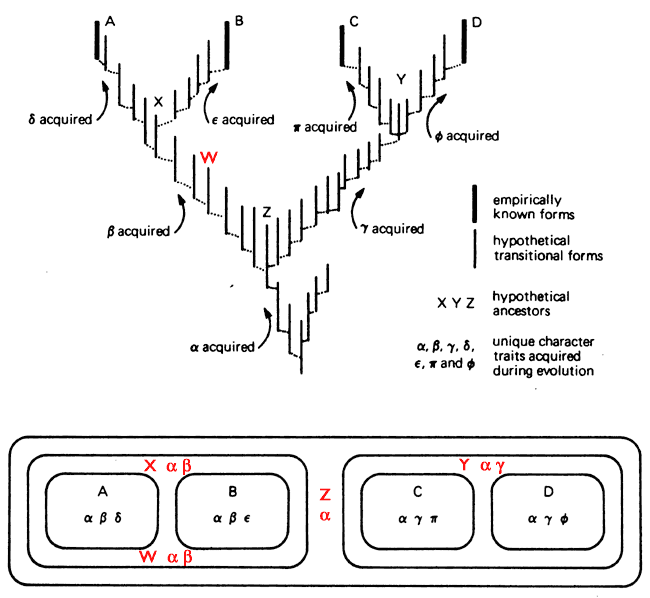

L'anti-évolutionniste Ashby Camp a rédigé une critique de ces "29 Preuves de la macroévolution," qui peuvent être consultées sur TrueOrigin. La critique de Camp est bien écrite, très complète et assez longue (la critique est plus longue que l'article original). Bien que je compte aborder les préoccupations de Camp dans leur totalité, je ne peux actuellement consacrer qu'un temps limité à cet effort. En attendant, cette réponse partielle suffira. Je tiens à remercier Camp pour sa critique bienveillante. Elle m'a donné l'impulsion de retravailler et d'élargir les "29 Preuves", et le résultat est un article plus complet, plus clair et plus solide.
Ma réponse est double. Premièrement, j'ai intégré du nouveau matériel dans l'essai original qui répond spécifiquement à de nombreux points soulevés par Camp, et ainsi une grande partie de sa réponse est désormais superflue. Deuxièmement, dans les sections suivantes, je réfute les erreurs plus flagrantes trouvées dans la critique de Camp, en particulier celles qui interrompraient le flux et la portée de l'article original si elles y étaient incluses. Dans la réponse suivante, les mots de Camp sont indentés dans des boîtes grises, séparés des miens. Le matériel que Camp a cité dans sa critique est également dans les boîtes grises, entouré de guillemets, et suivi de la référence externe pertinente.
La critique de M. Camp est remplie d'erreurs de diverses manières et se caractérise principalement par :
- Arguments ad hominem (homme de paille)
- Diversion (fausses pistes)
- Contradictions internes
- Équivoque
- Deux torts font un droit
- Fallacies de l'accident et de l'accident inverse
- Ignoratio elenchi
- Hypothèses théologiques naïves
- Connaissances insuffisantes en biologie fondamentale, biologie moléculaire, biochimie et génétique
- Mauvaise compréhension de la méthode scientifique
- Promotion d'hypothèses concurrentes non testables
- Mauvaise caractérisation de la théorie de l'évolution
- Citations trompeuses
- Fallacies d'accent
- Distorsion des controverses scientifiques
- Arguments d'autorité
- Analogies fausses
L'utilisation répétée de ces erreurs et d'autres dans la "Critique" de Camp sera abondamment claire dans la réfutation suivante.
Note : Depuis que j'ai écrit cette réponse, M. Camp a répondu à cela dans un article plus court intitulé "Camp répond à Theobald." Les éléments que je juge dignes d'une mention sont inclus ici, enfermés dans des boîtes vertes.
Sommaire
Prédiction 1 : L'unité fondamentale de la vie
Un homme de paille
Ashby Camp écrit :
La prédiction alléguée et sa réalisation sont les suivantes :
- Si l'ancêtre commun universel est vrai, alors tous les organismes partageront un ou plusieurs traits communs.
- Tous les organismes partagent un ou plusieurs traits communs.
Bien que Camp tente probablement simplement de résumer succinctement le point, il déforme l'intention en le faisant. La prédiction est plus spécifique que celle ci-dessus. Pour citer la prédiction 1 originale :
« Certaines des propriétés macroscopiques qui caractérisent toute la vie sont (1) la réplication, (2) le flux d'informations en continuité de type, (3) la catalyse et (4) l'utilisation de l'énergie (métabolisme) .... toutes les espèces vivantes d'aujourd'hui devraient nécessairement avoir ... hérité des structures qui effectuent ces fonctions. La parenté généalogique de toute la vie prédit que les organismes devraient être très similaires dans les mécanismes et structures particuliers qui exécutent ces processus vitaux de base. » (soulignement ajouté)
Les caractéristiques qui devaient être communes ont été et sont expressément énoncées : les structures et les mécanismes qui assurent les quatre fonctions vitales de base.
Camp ne considère pas sa paraphrase comme un homme de paille :
... Je ne vois pas comment ma formulation résumée peut être considérée comme un homme de paille, étant donné qu'elle englobe l'affirmation émise. Si l'on soutient que deux balles doivent provenir du même pistolet car elles partagent certaines striations, serait-ce un homme de paille de dire que l'affirmation était que les deux balles doivent provenir du même pistolet car elles partagent un ou plusieurs traits communs ? Préciser les traits (striations) n'affecte pas la nature de l'argumentation ...
« Encompasser » une affirmation ne consiste pas à énoncer l'affirmation, tout comme les États-Unis ne sont pas le Colorado. L'exemple du pistolet et de la balle de Camp est assurément un straw man. Nous ne pouvons pas inférer que deux balles proviennent du même pistolet si elles partagent n'importe quels deux traits en commun. Par exemple, deux balles pourraient toutes deux être en plomb ou elles pourraient toutes deux peser la même chose. Peut-on donc inférer qu'elles proviennent toutes deux du même pistolet ? Non — cette inférence n'est valide que lorsqu'elle est basée sur des traits causés par un pistolet particulier, tels que des rayures spécifiques. Reformuler l'argument comme le fait Camp constitue un straw man, car l'argument reformulé est une forme affaiblie de l'argument réel, et parce que cette forme affaiblie est beaucoup plus facile à critiquer. Préciser les traits change assurément la nature de l'argument, car l'inférence valide repose uniquement sur certains types de traits (pour les balles, ceux causés par un pistolet spécifique ; pour la descendance commune, ceux fortement contraints par le gradualisme).
Conflation du mécanisme avec le gradualisme
Camp écrit :
À moins d'insérer une prémisse supplémentaire imposant une limite au degré de variation que peuvent subir les descendants (ce qui nécessiterait de spécifier un mécanisme de descendance), l'affirmation de la descendance commune ne requiert pas que tous les descendants partagent un ou plusieurs traits. Il n'y a aucune raison logique pour laquelle des organismes entièrement nouveaux ne pourraient pas apparaître dans une ou plusieurs lignées. En l'absence de spécification d'un mécanisme de descendance, que le Dr. Theobald évite intentionnellement, il n'y a aucun moyen de lier les traits des descendants à ceux de l'ancêtre commun.
En fait, il existe bien des limites à la mesure dans laquelle les descendants peuvent varier. La contrainte du gradualisme est inhérente à la théorie de la descendance commune universelle — un point explicitement souligné dans l'article original. Pour citer l'introduction :
"... la macroévolution est proposée pour se produire sur une échelle de temps géologique et de manière progressive .... La progressivité concerne les changements génétiquement probables au niveau des organismes entre deux générations consécutives, c'est-à-dire ceux qui se situent dans la fourchette de la variation normale observée au sein des populations modernes."
Dans d'autres passages de sa critique (par exemple, note de bas de page 6), Camp déplore l'indifférence de l'article au mécanisme dans l'explication des preuves de la descendance commune. Tout au long de l'article, il est supposé que les fondements de la biologie (tels que la génétique, la biologie moléculaire et la biologie du développement) sont corrects, en particulier ceux qui ne traitent pas directement de l'origine et de l'évolution des adaptations biologiques. Dans les débats entre créationnisme et évolutionnisme, cela n'est pas particulièrement controversé ; presque tous les anti-évolutionnistes, y compris ceux qui croient en la création spéciale, font également cette hypothèse. Bien que le gradualisme ne soit pas formellement un mécanisme d'évolution (comme la sélection naturelle ou le lamarckisme pourraient l'être), le gradualisme impose en effet des contraintes sévères sur les phénomènes macroévolutifs possibles, et il contraint également tout mécanisme possible. Ainsi, Camp a tort lorsqu'il dit :
... la descendance commune universelle est compatible avec tous les mécanismes de descendance commune, y compris la direction divine. Ainsi, si Dieu a choisi qu'un reptile donne naissance à un oiseau, par exemple, cela serait cohérent avec un argument « non mécaniste » en faveur de la descendance commune universelle.
Un reptile moderne donnant naissance à un oiseau moderne n'est pas graduel ; c'est une saut, car de tels changements entre deux générations consécutives ne sont pas génétiquement probables — ils ne sont pas « dans la fourchette de la variation normale observée au sein des populations modernes ». Cela ne signifie pas que Dieu ne pourrait pas avoir créé les espèces indépendamment et miraculeusement, mais progressivement. Bien qu'il n'existe actuellement aucune preuve scientifique pour une telle idée, la direction progressive de l'évolution par la Divinité est en effet cohérente et compatible avec la descendance commune. Dans la note de bas de page 1, Camp critique paradoxalement la contrainte du gradualisme :
En restreignant le mécanisme de la macroévolution aux degrés observables de variation génétique, le Dr Theobald ouvre la porte arrière au débat même sur le mécanisme qu'il avait rejeté par la porte avant. Il assume ainsi la charge de prouver que la variation observable accumulée peut expliquer l'ancêtre commun universel. Puisqu'il ne fait aucun effort pour assumer cette charge, mais répète au contraire nier la pertinence de tout mécanisme particulier de modification, je suppose qu'il n'a pas l'intention de spécifier la variation observable accumulée comme le mécanisme de la macroévolution, malgré ce que ses définitions pourraient suggérer.
Comme indiqué précédemment, bien que le gradualisme ne soit pas un mécanisme, il contraint en effet les mécanismes explicatifs possibles. La descendance commune ne porte pas sur le fait exact de comment le changement adaptatif s'est produit, mais sur le fait de si cela s'est produit et de si c'est cohérent avec les processus généalogiques normalement observés. Camp a tort de dire que la suffisance de la « variation observable accumulée » pour expliquer la descendance commune universelle est laissée sans réponse. Cette exigence a été et est explicitement examinée dans la partie 5, «Changement et Mutabilité», en particulier dans les prédictions 22, 23, 24, 28 et 29. 6
Une méconnaissance des fondements de l'évolution
Camp continue avec les mots de ReMine :
« Deuxièmement, même si la vie est apparue exactement une seule fois, la théorie de l'évolution ne prédirait toujours pas des universalités biologiques. Peu après l'origine de la vie, rien n'empêchait la vie de se diviser et de donner naissance à des lignées séparées aboutissant à des formes de vie supérieures totalement dépourvues des universalités biologiques connues.
Troisièmement, les processus de perte et de remplacement évolutifs pourraient empêcher l'apparition d'universalités biologiques. Si un organisme est un ancêtre lointain d'un autre, rien dans l'évolution ne prédit que les deux doivent partager des similitudes. Si l'évolution était vraie, alors les ancêtres lointains et descendants (ainsi que les groupes sœurs) peuvent être totalement différents. » (ReMine 1993, p. 92-93)
Ici encore, Camp rejette les fondements de la biologie et la contrainte du gradualisme. La descendance commune prédit en effet des universaux biologiques spécifiques, car toute modification significative (tout « processus de perte et de remplacement ») des structures assurant les quatre fonctions vitales de base entraînerait des organismes non viables ; ces structures ne peuvent être perdues ni remplacées (bien qu'elles puissent être développées). Une fois que la vie a acquis ces structures spécifiques (par quel processus que ce soit), elles ont été essentiellement figées. Le gradualisme empêche la vie de « se diviser et de donner naissance à des lignées séparées menant à des formes de vie supérieures totalement dépourvues des universaux biologiques connus ». Bien sûr, « les ancêtres lointains et les descendants … peuvent être totalement différents » — totalement différents sauf pour les structures assurant les quatre fonctions fondamentales de la vie.
La descendance commune ne prédit pas que ces structures doivent être identiques, seulement que la similarité doit être statistiquement significative et qu'il doit exister des intermédiaires viables entre les variations. Par exemple, parce que le code génétique est dégénéré, la descendance commune ne prédit pas un code génétique identique chez tous les organismes. Cependant, tous les codes génétiques connus sont extrêmement similaires, avec un degré de signification statistique extrêmement élevé. En fait, la descendance commune n'exige pas que tous les organismes aient même un code génétique. Si la vie a évolué à partir de quelque chose qui ne possédait pas de code génétique, alors il doit y avoir eu une série d'organismes avec des codes transitionnels, commençant par aucun code du tout. Il est au moins possible que de tels organismes puissent encore être vivants aujourd'hui. Mais si la descendance commune est vraie, alors les codes génétiques de ces organismes seraient des versions moins complexes du code génétique moderne et conserveraient une similarité statistiquement significative avec le code génétique universel moderne. C'est une prédiction testable, en principe.
Cela dit, le point principal important de la « prédiction 1 » est le suivant : nous pouvons formuler des prédictions très fortes a posteriori sur les universaux biologiques en combinant la descendance commune avec ce qui est connu. En tant qu'analogie scientifique, la théorie de la gravitation universelle de Newton ne prédit pas les planètes, ni elle ne prédit les trajectoires actuelles des planètes. Mais étant donné la trajectoire mesurée connue d'une planète existante, nous pouvons utiliser la théorie de Newton pour prédire quelle sera la trajectoire à l'avenir et ce qu'elle a dû être dans le passé, et ces prédictions peuvent être confirmées ou infirmées. De même, étant donné le fait que nous savons maintenant que tous les organismes étudiés à ce jour, y compris les bactéries et les oiseaux, possèdent un code génétique très similaire, nous pouvons utiliser la descendance commune pour prédire que tous les organismes non découverts ou non examinés qui se situent entre les bactéries et les oiseaux dans l'arbre phylogénétique standard auront également un code génétique similaire. En raison de la descendance commune, nous prédisons cela même si cette prédiction n'est pas fonctionnellement nécessaire — de nombreux autres codes génétiques équivalents pourraient fonctionner tout aussi bien. En raison de la descendance commune, nous savons que certains types d'organismes seront extrêmement similaires dans les universaux biologiques avant que nous n'allions réellement vérifier les organismes pour voir à quoi ressemblent vraiment leurs structures. Ainsi, Hunter a tort lorsque Camp le cite en disant :
« Considérez comment les évolutionnistes réagiraient s'il existait en réalité plusieurs codes dans la nature. Et si les plantes, les animaux et les bactéries avaient tous des codes différents ? Une telle découverte ne contredirait pas l'évolution ; au contraire, elle serait intégrée à la théorie ... » (Hunter 2001, p. 38)
En premier lieu, la descendance commune prédit bien que les codes génétiques devraient être similaires a priori. Hunter spécule sur la manière dont les biologistes auraient réagi dans un scénario historique hypothétique où nous n'aurions pas trouvé de codes hautement similaires entre les organismes. En réalité, nous ne pourrons jamais savoir comment les biologistes auraient réagi à cela, puisque ce scénario hypothétique n'a pas eu lieu. Ce qui est connu, en revanche, c'est que les scientifiques qui ont décrypté le code génétique dans les années 1950 et 1960 ont travaillé sous l'hypothèse que le code était universel ou presque (Judson 1996, p. 280-281). Ces scientifiques, qui comprenaient Francis Crick, Sydney Brenner, George Gamow et plusieurs autres, ont tous fait cette hypothèse et l'ont justifiée sur la base de raisonnements évolutionnistes, même en l'absence totale de toute preuve expérimentale. En fait, cette hypothèse a été déterminante pour leur succès dans la résolution du code. Par exemple, en 1957, près de dix ans avant que le code génétique ne soit enfin résolu, Sydney Brenner a publié un article influent dans lequel il a conclu que tous les codes à triplets chevauchants étaient impossibles si le code était universel (Brenner 1957). Cet article a été largement considéré comme une œuvre majeure, car de nombreux chercheurs penchaient vers un code chevauchant. Bien sûr, il s'est avéré que Brenner avait raison sur la nature du véritable code. En 1961, cinq ans avant que le code ne soit déchiffré, Crick et d'autres ont également conclu que le code était (1) un code à triplets, (2) non chevauchant, et (3) que le code est lu à partir d'un point de départ fixe (c'est-à-dire le codon "start") (Crick et al. 1961). Ces conclusions étaient explicitement basées sur l'hypothèse que le code était essentiellement le même chez le tabac, les humains et les bactéries, bien qu'il n'y ait eu aucun soutien empirique pour cette hypothèse. Ces conclusions se sont avérées correctes. En fait, en 1963—trois ans avant que le code ne soit enfin résolu—Hinegardner et Engelberg ont publié un article dans Science expliquant spécifiquement pourquoi le code doit être universel (ou presque) si la descendance commune universelle était vraie, puisque la plupart des mutations dans le code seraient probablement mortelles pour tous les êtres vivants. Notez que Hinegardner et Engelberg ont permis certaines variations dans le code génétique et ont prédit comment de telles variations devraient être distribuées si elles étaient trouvées :
"... si des codes différents existent effectivement, ils devraient être associés à des groupes taxonomiques majeurs tels que les phylums ou les règnes, dont les racines remontent à un lointain passé." (Hinegardner et Engelberg 1963)
Leur prédiction évolutionniste était correcte, car les variations mineures du code génétique standard sont en effet associées à des groupes taxonomiques majeurs (vertébrés vs. plantes vs. ciliés unicellulaires, etc.).
Deuxièmement, nous savons désormais grâce à la recherche expérimentale que de nombreuses plantes, de nombreux animaux et de nombreuses bactéries possèdent tous des codes génétiques extrêmement similaires. Il n'existe aucune raison biologique connue, à part la descendance commune, pour laquelle les codes génétiques d'espèces différentes devraient être similaires. Toute nouvelle découverte d'une plante, d'un animal ou d'une bactérie présentant un code génétique radicalement différent serait un résultat hautement inattendu si la descendance commune est vraie.
La fallacie logique de l'Équivocation
Camp continue avec la citation de Hunter :
« Il n'y a rien de mal avec une théorie qui accepte différents résultats, mais il y a quelque chose de mal lorsqu'on prétend qu'un de ces résultats constitue une preuve de soutien. Si une théorie peut prédire à la fois A et non-A, alors ni A ni non-A ne peuvent être utilisés comme preuves en faveur de la théorie. En ce qui concerne le code génétique, l'évolution peut accommoder une gamme de résultats, mais elle ne peut ensuite utiliser l'un de ces résultats comme preuve de soutien. » (Hunter 2001, p. 38.)
La descendance commune ne prédit pas « à la fois A et non-A » — elle prédit « à la fois A et B ». Hunter commet une équivoque en identifiant à tort « A et non-A » avec une plage de résultats prédits. Une plage de résultats (c'est-à-dire « A et B ») n'enveloppe pas nécessairement tous les résultats possibles (c'est-à-dire « A et non-A ») — d'où l' équivoque. Si une théorie prédit à la fois A et B, alors soit A soit B peut être utilisé comme preuve de la théorie.
Toutes les théories scientifiques prédisent une gamme de résultats. Par exemple, la physique newtonienne prédit que les projectiles suivront des trajectoires elliptiques, paraboliques ou linéaires, selon les conditions pertinentes. La physique newtonienne prédite donc A, B et C, et l'un quelconque de A, B ou C peut être utilisé comme preuve en faveur de la physique newtonienne. Ce point est important, car Camp utilise à nouveau ce même argument, incorrectement, dans sa conclusion. L'affirmation de Hunter selon laquelle « il y a quelque chose qui ne va pas lorsqu'on prétend ensuite que l'un de ces [différents] résultats constitue une preuve de soutien » est clairement fausse en tant qu'énoncé général sur les théories scientifiques. Pour reformuler l'énoncé incorrect de Hunter : lorsqu'il s'agit du code génétique, l'évolution prédit une gamme de résultats, et elle peut utiliser n'importe lequel de ces résultats comme preuve de soutien. C'est ainsi que fonctionne la science.
Camp complique davantage encore la prédiction des universaux biologiques en introduisant des hypothèses concernant l'origine de l'ancêtre universel. Il écrit :
Le fait que certains évolutionnistes éminents croient que les premières formes de vie étaient biochimiquement distinctes des formes modernes confirme que l'évolution ne prédit pas des universaux biologiques. Robert Shapiro, par exemple, envisage la possibilité de trouver des reliques vivantes d'une forme de vie originale à base de protéines qui n'avait ni ADN ni ARN. (Shapiro, 293-295.) De même, A. G. Cairns-Smith pense que les descendants d'anciens organismes cristallins d'argile peuvent être partout autour de nous. Il déclare : « L'évolution n'a pas commencé avec les molécules organiques qui sont devenues universelles pour la vie : en effet, je doute que les premiers organismes, même les premiers organismes évolués, aient eu des molécules organiques du tout. » (Cairns-Smith, 107.)
Premièrement, la manière exacte dont l'ancêtre universel est apparu et a évolué ne relève pas de la descendance commune ; la descendance commune concerne toute l'évolution et la descendance depuis le dernier ancêtre commun jusqu'à nos jours. Deuxièmement, et surtout, ces hypothèses spéculatives n'ont aucune influence sur certaines prédictions concernant les universaux, telles que le code génétique. Le code génétique est un mécanisme pour traduire l'information des acides nucléiques (ADN et/ou ARN) en protéines. La forme de vie originale de Shapiro manquait d'ADN et d'ARN — elle ne possédait pas de code génétique. Les organismes argileux cristallins de Cairns-Smith n'avaient ni protéine ni acide nucléique — par conséquent, ils ne possédaient pas non plus de code génétique. L'universalité du code génétique a été proposée sur la base de deux faits : toute la vie connue porte l'information génétique dans les acides nucléiques, et toute la vie connue effectue des fonctions métaboliques avec des protéines. Toute la vie connue possède donc un code génétique. Si toute la vie connue est également unie par la descendance commune, elle doit également être unie par un code génétique universel. Comme raconté ci-dessus, c'était exactement le raisonnement de Francis Crick, Sydney Brenner, George Gamow et Marshall Nirenberg lorsqu'ils ont décrypté le code génétique. Camp, et d'autres anti-évolutionnistes comme ReMine, peuvent critiquer — mais le fait demeure que de vrais biologistes, réalisant une science rigoureuse, ont fait des prédictions et obtenu des résultats phénoménaux basés sur la descendance commune et la déduction des universaux biologiques.
Une « alternative » non scientifique : la fausse de l'infalsifiabilité
D'un autre côté, ReMine soutient que les universaux biologiques sont une prédiction de sa théorie de la création par message, qui «affirme que toute la vie a été conçue pour ressembler à l'œuvre unifiée d'un seul concepteur». (ReMine, 94.) Ainsi, l'évolution ne prédit pas l'unité des êtres vivants, mais au moins une théorie de la création le fait. Bien sûr, la similitude biochimique des êtres vivants s'insère facilement dans un cadre de création.
Bien sûr, la similitude biochimique s'insère facilement dans un « cadre créationniste ». Tout peut s'insérer dans ce cadre. C'est précisément pourquoi les théories créationnistes anti-évolutionnistes actuelles sont non scientifiques : tous les résultats possibles sont cohérents avec l'hypothèse. Si l'on ne trouvait pas de similitude biochimique, cela serait-il incohérent avec le « cadre créationniste » ? Par exemple, si nous découvrions un insecte dont le code génétique était radicalement différent du code génétique standard, cela signifierait-il que la création divine était impossible ? Non — les créationnistes ne s'agiteraient pas pour expliquer ce résultat (alors que les biologistes évolutionnistes le feraient).
L'hypothèse du « message » de ReMine est beaucoup trop vague pour être testée scientifiquement. À quoi ressemblerait un « travail unifié » ? À quoi ressemblerait le monde biologique s'il s'agissait d'un « travail divisé » ? ReMine peut-il quantifier l'« apparence d'unité » ? Des chercheurs indépendants, peut-être issus de cultures et de pays différents, pourraient-ils déduire les mêmes prédictions de cette « hypothèse du message » ? Sûrement pas — la façon dont quelque chose « ressemble » en termes d'unité est subjective ; ce n'est pas une propriété objective de la vie. Comment pouvons-nous distinguer un seul concepteur de plusieurs concepteurs ? Microsoft Word, un iMac ou un Nissan Pathfinder ressemblent-ils au résultat d'un seul concepteur ou de plusieurs concepteurs ? Un problème plus fondamental est que l'hypothèse du « message » de ReMine n'est pas mutuellement exclusive avec la descendance commune, bien qu'il et Camp semblent tous les deux penser qu'elle l'est. De nombreuses religions du monde considèrent l'existence de lois physiques, telles que la théorie de la gravitation universelle, comme une preuve que l'univers est le travail unifié d'un seul Concepteur. En principe, ne pourrait pas un seul concepteur avoir utilisé l'évolution pour faire en sorte que toute la vie ressemble à un travail unifié ? Bien sûr ; la conjecture de ReMine et la descendance commune pourraient toutes les deux être vraies.
Théologie naïve et biochimie médiocre
Camp poursuit sa discussion sur la manière dont il estime que le créationnisme peut expliquer les similitudes biochimiques en citant ce beau morceau de raisonnement « scientifique » créationniste de Duane Gish :
« Un créationniste s'attendrait également à de nombreuses similitudes biochimiques chez tous les organismes vivants. Nous buvons tous la même eau, respirons le même air et mangeons la même nourriture. Supposons, d'un autre côté, que Dieu ait créé des plantes avec un certain type d'acides aminés, de sucres, de purines, de pyrimidines, etc. ; puis des animaux avec un type différent d'acides aminés, de sucres, de purines, de pyrimidines, etc. ; et, enfin, l'homme avec un troisième type d'acides aminés, de sucres, etc. Que pourrions-nous manger ? Nous ne pourrions pas manger de plantes ; nous ne pourrions pas manger d'animaux ; tout ce que nous pourrions manger, ce serait les uns les autres ! Évidemment, cela ne fonctionnerait pas. Toutes les molécules clés des plantes, des animaux et de l'homme devaient être les mêmes. Le métabolisme des plantes, des animaux et de l'homme, basé sur les mêmes principes biochimiques, devait être similaire, et par conséquent, les voies métaboliques clés devaient employer des macromolécules similaires, modifiées pour s'adapter à l'environnement interne particulier de l'organisme ou de la cellule dans lequel elles doivent fonctionner. » (Gish, 277.)
Gish et Camp semblent tous les deux considérer que Dieu est extrêmement limité en ingéniosité. L'argumentation de Gish est ridicule : pourquoi Dieu ne pourrait-il pas avoir créé des plantes avec un certain type d'acides aminés et des animaux avec un autre type, et avoir simplement donné aux animaux les enzymes qui métabolisent les acides aminés végétaux ? N'est-ce pas un design astucieux ? Évidemment, cela fonctionnerait, et toutes les molécules clés des plantes, des animaux et de l'homme n'auraient pas nécessairement dû être les mêmes. Or, ce fait ne signifie pas que Dieu aurait dû créer les choses de cette manière, mais cela met en évidence l'assomption théologique naïve faite par Gish et Camp selon laquelle Dieu était incapable de créer les choses de cette manière.
Un autre homme de paille
Camp termine sa critique de la Prédiction 1 avec ce sophisme :
L'affirmation selon laquelle tous les organismes partagent un ou plusieurs traits communs est vraie dans le sens où tous les êtres vivants possèdent nécessairement les traits par lesquels la vie est définie, mais cela n'est qu'une tautologie : les êtres vivants ont tous les traits des êtres vivants.
Comme au début, la paraphrase de Camp est incorrecte. L'affirmation ci-dessus n'est pas la prédiction des universaux biologiques ; la prédiction est que les structures qui accomplissent les fonctions de base qui caractérisent la vie devraient être similaires. Les êtres vivants ont les fonctions des êtres vivants (une tautologie), mais parce que toutes les choses sont liées par l'hérédité (c'est-à-dire la descendance commune), les êtres vivants devraient également avoir des structures et des mécanismes similaires qui accomplissent ces fonctions de base (une déduction de la descendance commune). Il est possible que les êtres vivants puissent tous avoir les fonctions de base qui caractérisent la vie tout en ayant des mécanismes très différents, chimiquement et structurellement non apparentés, qui accomplissent ces fonctions de base. La prédiction des universaux biologiques n'est donc pas tautologique. Et, en tant que déduction de la descendance commune, la prédiction des universaux biologiques est testable, confirmable et falsifiable. De plus, cette prédiction a été confirmée et n'a pas été falsifiée. Comme toute bonne théorie scientifique, il existe la possibilité qu'elle puisse être falsifiée à l'avenir par l'acquisition de nouvelles données, bien que cela soit hautement improbable puisque toutes les autres preuves confirment la validité de la descendance commune.
Prédiction 2 : Une hiérarchie imbriquée d'espèces
Déformation de la théorie de l'évolution et logique erronée
L'argument de Camp est simplement que la descendance par modification à partir d'un ancêtre commun ne prédit pas une hiérarchie imbriquée. Camp est tout simplement incorrect ici ; tous les processus généalogiques produisent des hiérarchies imbriquées. Pensez à votre propre arbre généalogique : vos grands-parents peuvent avoir eu plusieurs enfants, chacun de ces enfants (vos tantes, oncles et parents) a sa propre famille, et chacun des enfants de ces familles (comme vous) peut avoir ses propres enfants, et même vos enfants peuvent avoir leurs propres familles. Chaque famille est imbriquée dans une autre famille, qui à son tour est imbriquée dans une autre famille, et ainsi de suite. Camp tente de s'expliquer lui-même dans son refus d'accepter ce concept de base :
La descendance commune peut expliquer ou accommoder une hiérarchie imbriquée ... mais elle ne la prédit pas. Il existe des mécanismes de descendance à partir d'un ancêtre commun qui produiraient un motif différent. Si la descendance commune peut produire soit une hiérarchie imbriquée, soit autre chose, alors la présence d'une hiérarchie imbriquée ne compte pas comme une preuve de la descendance commune.
Camp affirme que différents motifs peuvent résulter de la descendance commune, mais il ne fournit aucun exemple pour étayer cette affirmation étrange. Si Camp entend par là que le « hasard » constitue un motif (en étirant le terme « motif »), alors, oui, dans certaines conditions, la descendance commune prédit que certains caractères des espèces seront aléatoires les uns par rapport aux autres. Cependant, comme cela a déjà été discuté, toutes les théories scientifiques prédisent plusieurs résultats contingents aux conditions pertinentes. Ce n'est pas un problème pour aucune théorie scientifique. La dernière affirmation de Camp ci-dessus est manifestement fausse ; elle commet la même erreur que celle discutée plus haut dans la thèse de Hunter sur « A et non-A ». La descendance commune peut prédire deux résultats différents et elle peut tout de même utiliser l'un ou l'autre de ces résultats comme preuve à l'appui.
Une autre méprise sur la théorie de l'évolution
Camp a depuis répondu à cette critique :
... l'affirmation selon laquelle l'hypothèse de la descendance commune universelle fait une prédiction réfutable selon laquelle les organismes présenteront un motif de hiérarchie imbriquée est incorrecte. En effet, le Dr. Theobald a reconnu à la fois dans la prédiction 2 et dans sa réponse à ma critique que la progression organique de Lamarck produirait un motif non imbriqué d'organismes. ... puisque la progression organique de Lamarck (pour prendre un exemple) admettrairement ne prédit pas une hiérarchie imbriquée, une hiérarchie imbriquée n'est pas une preuve de descendance commune via la progression organique de Lamarck. Par conséquent, ce n'est pas une preuve de descendance commune, peu importe « si le darwinisme, le lamarckisme ou autre chose est le véritable mécanisme du changement évolutif », qui est la proposition défendue par le Dr. Theobald.
Bien que Camp ne nous fournisse toujours pas d'exemple d'un motif non imbriqué généré par la descendance commune, il pense que la progression organique de Lamarck prédirait un motif non imbriqué. Camp a raison. Cependant, Camp ne comprend pas la différence entre le lamarckisme (ou l'hérédité des caractères acquis), qui est un mécanisme évolutif, et la progression organique lamarckienne, qui n'est pas un mécanisme évolutif mais une théorie macroévolutrice descriptive. Naturellement, la progression organique de Lamarck ne prédit pas une hiérarchie imbriquée — elle est mutuellement exclusive avec la descendance commune. La progression organique de Lamarck est une théorie concurrente, et la descendance commune et la progression organique ne peuvent pas toutes deux être vraies. Cependant, l'évolution lamarckienne (par hérédité des caractères acquis) pourrait, en principe, être un mécanisme de changement qui conduit la descendance commune par modification graduelle. La discussion de Camp ici prouve simplement mon point. Si nous observions un motif tel que celui prédit par la progression organique, cela indiquerait fortement que la descendance commune est fausse et que la progression organique est vraie. En d'autres termes, la progression organique de Lamarck prédit un motif non imbriqué — si nous observions ce motif, cela réfuterait la descendance commune.
Un non-sequitur et une science obsolète
Camp tente ensuite de soutenir cette méprise avec une autre citation de Hunter :
"Il est connu depuis Aristote que les espèces ont tendance à se regrouper selon un schéma hiérarchique, et au XVIIIe siècle, Linné y a vu une réflexion du plan divin du Créateur. Évidemment, ce schéma n'oblige pas à embrasser l'évolution." (Hunter 2001, p. 107.)
Il me semble clair que Hunter sous-entend que, puisque le schéma hiérarchique des espèces était connu avant la proposition de la théorie de la descendance commune, alors ce schéma hiérarchique ne peut pas être utilisé comme preuve de la descendance commune. Selon une telle logique, la théorie de la gravitation de Newton serait également suspecte. Il est connu depuis bien avant Aristote que les pommes tombent au sol lorsqu'elles sont lâchées. Certaines personnes avant Newton, telles qu'Aristote, pensaient que les pommes étaient attirées vers le sol parce qu'elles étaient principalement constituées de l'élément « terre ». Évidemment, ce schéma (la chute) n'oblige pas à adopter la loi de l'inverse du carré. Il devrait être clair que le fait que les gens se soient trompés sur les explications physiques dans le passé ne constitue pas un argument contre les théories scientifiques modernes.
Cependant, dans une correspondance privée, Hunter a vigoureusement contesté mon interprétation de ses commentaires ci-dessus. Hunter affirme qu'il ne faisait que souligner que des « théories » alternatives peuvent expliquer la hiérarchie imbriquée observée. Pour qu'un tel point soit valide, les « théories » alternatives devraient être d'un rang scientifique égal à celui de la théorie de la descendance commune. À ma connaissance, ni Aristote ni Linné n'ont proposé d'hypothèse concernant la hiérarchie imbriquée, et aucun d'eux n'a jamais formulé de prédictions testables basées sur toute hypothèse proposée pour expliquer la hiérarchie imbriquée. En revanche, la descendance commune a certainement été proposée comme une hypothèse qui prédit la hiérarchie imbriquée, et de nombreuses prédictions basées sur la descendance commune universelle ont été formulées et testées par des biologistes évolutionnistes au cours des 140 dernières années. En conséquence, les idées philosophiques et théologiques d'Aristote et de Linné ne rivalisent pas scientifiquement avec l'hypothèse formelle de la descendance commune. De plus, il n'y a aucune raison pour laquelle la signification théologique que Linné a attachée à la hiérarchie imbriquée devrait exclure la descendance commune. Il est possible pour un théiste de voir la théorie de la descendance commune, et la hiérarchie qu'elle prédit, comme une réflexion du plan divin du Créateur — tout comme Sir Isaac Newton voyait ses lois du mouvement, et les ellipses et paraboles qu'elles prédisent, comme une preuve de la main du Créateur dans notre univers.
Un leurre : la science du XIXe siècle n'est pas la science moderne
La citation de Hunter se poursuit :
« De plus, la loi de la sélection naturelle de Darwin ne prédit pas ce schéma. Il a dû élaborer une explication spéciale — son principe de divergence — pour intégrer ce schéma frappant dans sa théorie globale. » (Hunter 2001, p. 108.)
La divergence ou la ramification des espèces (c'est-à-dire la spéciation) fait partie intégrante de la descendance commune. Le principe de divergence des caractères de Darwin était son explication particulière de la spéciation, expliquant comment les variétés finissent par évoluer pour devenir des espèces distinctes. Il ne fut pas « conçu » comme une « explication spéciale » ; Darwin a argumenté avec force qu'il s'agissait d'une conséquence nécessaire de la sélection naturelle.
« La sélection naturelle conduit également à la divergence des caractères ; car plus les êtres organiques divergent en structure, habitudes et constitution, plus un grand nombre peut être soutenu sur la surface, dont nous voyons la preuve en regardant les habitants de tout petit lieu, et les productions naturalisées dans les pays étrangers. Par conséquent, pendant la modification des descendants d'une seule espèce, et pendant la lutte incessante de toutes les espèces pour augmenter en nombre, plus les descendants deviennent diversifiés, meilleures seront leurs chances de succès dans la bataille pour la vie. Ainsi, les petites différences distinguant les variétés de la même espèce, tendent constamment à augmenter, jusqu'à ce qu'elles égalent les différences plus grandes entre les espèces du même genre, ou même de genres distincts. » (Du résumé du chapitre 4, Sélection naturelle, Darwin 1872, p. 169)
Cependant, le principe spécifique de Darwin n'est pas nécessaire pour qu'une descendance commune produise une hiérarchie imbriquée : il suffit de la spéciation et de changements de caractères, quelle que soit leur cause. Plus important encore, les vues de ce naturaliste du XIXe siècle, bien qu'intéressantes sur le plan historique, ne sont d'aucune conséquence pour la validité des théories évolutives modernes. L'insertion par Camp des vues de Darwin dans un débat sur la science moderne est un leurre (ou un homme de paille, l'un ou l'autre). Camp a répondu :
Selon le Dr. Theobald, le principe de divergence de Darwin est simplement un autre nom pour la descendance commune (ou « est autrement connue comme »). Le principe de divergence était une addition à la notion nue de descendance commune que « Darwin croyait nécessaire pour expliquer les relations divergentes, en forme d'arbre, des organismes » (citation du projet Darwin à l'Université de Cambridge, http://www.lib.cam.ac.uk/Departments/Darwin/intros/vol6.html [note que le lien de Camp est obsolète ; j'ai lié à la nouvelle URL]).
Comme indiqué ci-dessus, le « principe de divergence des caractères » de Darwin relève de la science du XIXe siècle, et non de la science moderne ; la question est donc sans objet. Cela dit, Camp se trompe et a mal interprété la pensée de Darwin. La discussion suivante, dans la boîte orange, vise uniquement à clarifier les vues de Darwin.
|
Le principe de divergence de Darwin n'était pas « une addition à la notion nue de descendance commune » — si ce n'est qu'une addition à la notion nue de sélection naturelle. En fait, Darwin voyait le « principe de divergence » comme une déduction de la sélection naturelle agissant sur des populations étroitement apparentées dans des environnements différents. Comme Darwin l'énonce dans son introduction à L'Origine des espèces,
Il est possible d'avoir une descendance commune sans sélection naturelle, et il est possible d'avoir une sélection naturelle sans descendance commune. Le principe de Darwin liait les deux ensemble. Comme indiqué ci-dessus, le « principe de divergence des caractères » de Darwin était son explication particulière de la manière dont la sélection naturelle menait à la spéciation, comme Darwin l'a écrit :
Au chapitre 4, Darwin introduit formellement et explique son « principe de divergence des caractères ». Il y postule clairement qu'il s'agit d'une conséquence de la sélection naturelle agissant sur des populations similaires dans des environnements différents, menant ainsi à la spéciation. Darwin commence sa section sur le principe de divergence par une question :
Darwin répond à cette question avec son principe de divergence, et il explique comment il peut agir à la fois chez les organismes domestiqués et sauvages. Ensuite, il utilise ses concepts proposés de (1) spéciation par le principe de divergence et (2) changement par sélection naturelle pour démontrer comment une généalogie d'espèces en forme d'arbre ramifié se développera naturellement :
Darwin décrit ensuite la descendance commune en utilisant sa figure célèbre, la phylogénie en forme d'arbre, qui représente graphiquement les hiérarchies imbriquées prédites. Notez que la hiérarchie imbriquée est une conséquence de la seule spéciation et du changement de caractère, que Darwin a expliqués respectivement par l'utilisation du principe de divergence et de la sélection naturelle. De cette discussion, il est clair que Camp est incorrect à affirmer que « le principe de divergence était une addition à la notion nue de descendance commune ». Le principe de divergence a été combiné avec l'évolution par sélection naturelle pour déduire la descendance commune avec des hiérarchies imbriquées. En fait, chaque fois qu'il y a spéciation, c'est aussi de la descendance commune, donc dans un sens le principe de divergence est de la descendance commune (bien qu'il s'agisse d'un cas spécial causé par l'action de la sélection naturelle sur des populations différentes dans des environnements différents). |
Plus de déformations de la théorie de l'évolution et de méconnaissance de la méthode scientifique :
Les vues de Walter ReMine sur la hiérarchie imbriquée
Camp semble confus quant au fait que la descendance commune doit-elle inclure ou non la ramification des espèces :
Même un mécanisme de descendance qui inclut des événements de branchement ne garantit pas un motif imbriqué.
Si plusieurs espèces ont évolué à partir d'un ancêtre commun, comment ont-elles pu apparaître sans se diviser ? Le passage d'"un" à "deux" implique nécessairement un événement de branchement. La divergence (c'est-à-dire la spéciation) est donc inhérente au concept de descendance commune. Encore une fois, pensez à un arbre généalogique. Les généalogies se branchent et divergent. L'essence même de la descendance commune est que toutes les espèces sont liées comme des individus dans une généalogie.
Camp cite ensuite ReMine pour étayer sa mécompréhension de la prédiction des hiérarchies imbriquées :
« Le schéma de la descendance dépend de la mesure dans laquelle les caractères évolués sont perdus plus tard. Supposons que les pertes soient significatives et que les caractères soient remplacés à un taux élevé. Alors, il n'y a aucune raison d'attendre un schéma imbriqué. Les descendants pourraient être totalement différents de leurs ancêtres lointains et des groupes sœurs, avec peu ou pas de ressemblance semblant de similarités imbriquées les reliant. » (ReMine, 343.)
ReMine a raison en partie, mais se trompe grandement. Si les taux d'évolution sont rapides, alors l'information cladistique peut effectivement être perdue avec le temps, car l'information cladistique serait essentiellement aléatoire. Plus le taux est élevé, moins de temps est nécessaire pour effacer l'information contenue dans les caractères biologiques concernant le motif de ramification historique de l'évolution. Les caractères évoluant lentement nous permettent de voir plus loin dans le temps ; les caractères évoluant rapidement restreignent cette vue aux événements plus récents. C'est une difficulté que les biologistes doivent affronter dans la réalité. Mais, ce qui est important, c'est que c'est également une prédiction de la descendance commune. Étant donné un certain taux d'évolution, nous pouvons déterminer combien de temps il faudra pour que l'information cladistique soit perdue. ReMine oublie que le « taux d'évolution » par rapport au « temps écoulé depuis la divergence » est relatif ; ainsi, dans un certain cadre temporel, nous pourrons toujours observer une hiérarchie imbriquée si la descendance commune est vraie. De plus, nous savons empiriquement que les taux de mutation de fond varient d'ordres de grandeur d'un locus à l'autre dans les génomes des espèces. Ce fait signifie que des hiérarchies devraient être observées à de nombreux niveaux biologiques, car certains gènes évoluent plus vite ou plus lentement que d'autres.
ReMine pense que, puisque certaines conditions existent sous lesquelles une prédiction de notre théorie ne sera pas observée, alors observer la prédiction n'est pas une confirmation de notre théorie. Si cela était vrai, nous ne pourrions jamais confirmer aucune hypothèse scientifique, pas seulement la descendance commune, car il existe toujours certaines conditions sous lesquelles nous ne pourrons pas observer certaines conséquences d'une théorie.
Tout ce que ReMine dit, c'est que, sous certaines conditions, la descendance commune prédit que la structure hiérarchique sera randomisée. Il n'est pas clair pourquoi cette caractéristique est problématique pour la théorie de la descendance commune. Sous certaines conditions, la théorie newtonienne prédit que les objets ne suivront pas des orbites elliptiques, mais des paraboles. Devrions-nous donc conclure que l'observation des orbites elliptiques des planètes ne peut pas être utilisée comme preuve de la théorie newtonienne ? Non, et il en va de même pour la descendance commune. C'est la même erreur que celle discutée plus haut dans l'analyse de Hunter sur « A et non-A ». ReMine ne comprend tout simplement pas comment fonctionne la méthode scientifique.
Camp a depuis contesté ma critique des arguments de ReMine :
C'est une fausse représentation de la position de ReMine. ReMine ne soutient pas que le respect d'une prédiction réfutable d'une théorie (par exemple, l'attraction mutuelle de deux masses diminue proportionnellement au carré de la distance qui les sépare) est annulé par l'incapacité de tester cette prédiction dans certaines circonstances (par exemple, lorsque l'attraction est prévisible en dessous des limites mesurables).
L'expression « incapacité à tester » est formulée de manière erronée. Nous pouvons toujours tester ; c'est seulement après le test que nous comparons les résultats à nos prédictions. L'erreur de Camp n'est qu'une indication supplémentaire d'une incompréhension sous-jacente et d'une familiarité insuffisante avec la pratique scientifique. Si nous supposons qu'une chose est intenable à l'avance, alors nous supposons la vérité de notre théorie — nous ne la testons pas. Comment pourrions-nous savoir que l'attraction entre deux objets est « prévisiblement en dessous des limites mesurables » si nous ne supposons déjà que la Théorie de la Gravité est vraie ? Nous ne pouvons pas ; nous devons tester cette prédiction et voir si nous sommes vraiment incapables de mesurer l'attraction lorsque, selon notre théorie, nous prédisons que l'attraction devrait être trop faible pour être mesurée.
Ce que Camp doit signifier ici, pour avoir du sens, est « l'impossibilité d'observer une prédiction donnée » plutôt que « l'impossibilité de tester ». En fait, c'est exactement ce que ReMine affirme — il n'y a aucune déformation. ReMine soutient que la réalisation d'une prédiction réfutable d'une théorie (par exemple, l'observation d'un « motif imbriqué ») est annulée par l'impossibilité d'observer cette prédiction dans certaines circonstances (par exemple, lorsque la hiérarchie est aléatoire de manière prévisible car « les pertes sont significatives et les caractères sont remplacés à un taux élevé »). Comme indiqué ci-dessus, cette affirmation est identique à l'équivoque « A et non-A » de Hunter. Les théories prédisent une gamme de résultats ; observer l'un de ces résultats et non les autres (sous réserve des conditions pertinentes) constitue toujours une preuve en faveur de la théorie.
Au contraire, il [ReMine] soutient que la hiérarchie imbriquée n'est pas une prédiction réfutable de l'ascendance commune, car la théorie inclut sans restriction des processus qui s'opposent à ce motif. Ces processus peuvent être invoqués dans n'importe quel mélange pour expliquer n'importe quel motif non imbriqué qui est observé.
Eh bien, ReMine fait également cette affirmation. Cependant, ReMine et Camp se trompent tous deux en affirmant qu'il est problématique d'invoquer des processus qui « vont à l'encontre » d'une prédiction d'une théorie. Par exemple, avec la théorie de la gravitation de Newton, il existe de nombreuses choses qu'on peut invoquer pour expliquer des résultats anormaux. Par exemple, de manière naïve, les plumes et les boules de bowling devraient tomber à la même vitesse. Si elles sont lâchées de la même hauteur, elles devraient toucher le sol en même temps — c'est-à-dire, si la théorie est correcte. Mais nous savons tous que ce n'est pas vrai. Les plumes tombent plus lentement, et nous invoquons un autre processus, la résistance de l'air, pour expliquer pourquoi les plumes tombent d'une manière non prédite par la théorie. Mais il y a plus — les électrons et les protons ne suivent pas non plus la loi de l'inverse du carré de la gravitation. Nous invoquons la charge électrique pour l'expliquer. Les aimants de réfrigérateur « violent » également la théorie de la gravitation. Ici, nous invoquons un processus, le magnétisme, qui va à l'encontre des motifs prédits par la théorie de Newton. Dans certains cas, comme les problèmes à trois ou quatre corps, nous admettons que la théorie de Newton ne donne pas une réponse exacte. Lorsque nous ne considérons que deux objets, comme le Soleil et la Terre, nous pouvons résoudre exactement les équations du mouvement. Mais ajoutez juste un élément de plus, comme la Lune, et les équations deviennent impossibles à résoudre (bien que les réponses puissent parfois être approximées). Dans d'autres cas, comme avec l'orbite de Mercure, nous abandonnons complètement la théorie de Newton et invoquons des effets relativistes.
En réalité, toutes les explications scientifiques sont complexes, sauf dans les situations les plus irréalistes et artificielles rencontrées dans des environnements de laboratoire soigneusement contrôlés. Dans un laboratoire, nous pouvons retirer l'air d'un contenant et observer une boule de bowling et une plume tomber à la même vitesse. En revanche, nous ne pouvons pas simplifier les choses de cette manière lorsque nous essayons de calculer la vitesse terminale d'un corps en chute libre dans notre atmosphère. Comme indiqué ailleurs ici, les processus ne peuvent « être invoqués dans n'importe quel mélange pour expliquer n'importe quel [...] motif ». Des explications complexes sont nécessaires pour être raisonnables et pour se conformer aux processus observés empiriquement ; elles ne sont pas invoquées « sans restriction ». Tous les processus dont se plaignent ReMine et Camp ont été observés empiriquement, et ce sont des propositions testables. La biologie évolutive n'est donc pas plus problématique que toute autre discipline scientifique. Pour répéter, ReMine ne comprend tout simplement pas comment fonctionne la méthode scientifique.
M. Camp utilise une citation supplémentaire de ReMine dans le but de critiquer la descendance commune et la prédiction des hiérarchies imbriquées :
« L'évolution ne prédit pas un schéma hiérarchique. Des processus simples de perte, de remplacement, d'anagenèse, de transposition, de dévoilement ou de multiple biogenèse prohiberaient un tel schéma. Puisque les schémas hiérarchiques (tels que les cladogrammes ou les phenogrammes) ne sont pas prédits par l'évolution, ils ne constituent pas une preuve de l'évolution. » (ReMine 1993, p. 444.)
Cependant, Camp a mal cité ReMine. ReMine ne fait pas spécifiquement référence à la descendance commune dans ce passage ; il écrit sur l'évolution en général. ReMine maintient la distinction entre la descendance commune et l'évolution (comme il le devrait). Par exemple, la biogenèse multiple n'est pas la descendance commune. Cela est clair dès la phrase suivante qui suit la citation ci-dessus :
« Le schéma hiérarchique de la vie (tel qu'il est affiché dans les cladogrammes et les phenogrammes) est trop indirect pour établir même le cas particulier de la descendance commune. » (ReMine 1993, p. 444.)
ReMine considère la descendance commune comme un cas particulier de l'évolution, ce qui est bien sûr le cas. Mais son argument selon lequel la descendance commune n'est pas un cas nécessaire de l'évolution est dénué de sens. C'est analogue à critiquer la loi de l'inverse du carré parce qu'elle aurait pu être une loi de l'inverse du cube ou une loi de l'inverse factoriel. Il aurait aussi bien pu dire : « La gravité ne prédit pas les orbites elliptiques. Puisque les orbites elliptiques ne sont pas prédites par la gravité, elles ne constituent pas une preuve de la gravité. » Il aurait pu ajouter : « Les orbites elliptiques (telles qu'elles sont affichées par les planètes et les projectiles) sont trop indirectes pour établir même le cas particulier de la loi de l'inverse du carré. » Malgré les protestations de ReMine, les hiérarchies imbriquées sont des caractéristiques mesurables des organismes — leur présence ou leur absence peut être quantifiée et évaluée avec des statistiques. La prédiction d'une hiérarchie imbriquée découle directement de l'hypothèse de la descendance commune.
De plus, ReMine se trompe en affirmant que « la perte, le remplacement, l'anagenèse, la transposition, le dévoilement ou la multiple biogenèse prohiberaient » un schéma hiérarchique. Bien sûr, la multiple biogenèse pourrait le faire, mais nous ne considérons pas la multiple biogenèse ; nous considérons la descendance commune universelle. Les autres processus mentionnés créent tous des schémas hiérarchiques, car les pertes de caractères, les remplacements, les changements anagénétiques, les transpositions et les réversions (événements de dévoilement) sont tous hérités par les descendants d'un ancêtre. Par exemple, si tous les singes sont descendants d'un ancêtre commun de primate à la longue queue qui a perdu sa queue, alors tous les singes manqueront de queue, tandis que d'autres primates en auront. Si un singe a acquis un gène par transposition dans la lignée germinale, alors tous les descendants de ce singe hériteront de cette transposition. Si un primate non-singe a ensuite vu sa longue queue remplacée par une courte queue, alors tous les descendants du primate à la courte queue hériteront de cette courte queue. Le résultat est une hiérarchie imbriquée.
_____________________________________________________ | primates | | ________________ _____________ ______________ | | | apes | | long tails | | short tails | | | | ______ ______ | | | | | | | || no ||trans.|| | | | | | | ||trans.|| || | | | | | | | ______ ______ | _____________ ______________ | | | | | | ________________ | | | _____________________________________________________
Ces « processus simples » sont précisément les types de choses qui constituent les hiérarchies imbriquées.
Depuis la rédaction de ce texte, Camp a répondu :
Il existe diverses façons dont les organismes existants pourraient descendre d'un ancêtre commun sans présenter une hiérarchie imbriquée. L'anagenèse, la perte de caractères, le remplacement de caractères, la transposition de caractères, l'atavisme (masquage et démasquage) et la convergence vont tous à l'encontre d'un motif hiérarchique, et l'hypothèse nue de la descendance commune universelle ne dit rien sur le taux ou la prévalence de ces processus. Ils peuvent être invoqués dans n'importe quel mélange nécessaire pour expliquer n'importe quel motif observé. Par conséquent, l'affirmation selon laquelle l'hypothèse de la descendance commune universelle émet une prédiction réfutable selon laquelle les organismes présenteront un motif de hiérarchie imbriquée est incorrecte.
Remarquez comment la réponse de Camp évite tous les points qui ont été soulevés contre son argument. Camp ne nous fournit pas d'exemple d'un motif non imbriqué produit par la descendance commune. Il répète l'affirmation selon laquelle divers processus « vont à l'encontre » d'un motif imbriqué, alors que ces mêmes processus créent un motif imbriqué. Ces processus ne peuvent pas être « invoqués dans n'importe quel mélange nécessaire pour expliquer n'importe quel motif trouvé ». Oui, la « simple » descendance commune peut ne rien affirmer spécifiquement sur ces processus, mais la descendance commune universelle est contrainte par le gradualisme, comme cela a été expliqué de nombreuses fois. Nous connaissons empiriquement les taux maximaux d'anagénèse, de perte de caractères et de remplacement de caractères — ces processus peuvent bien sûr être utilisés dans des explications scientifiques, mais il existe des limites sur les taux qui peuvent être utilisés. Cela a déjà été abordé spécifiquement dans les prédictions 22, 23, 24, 28 et 29. De plus, nous savons également que la convergence se produit (c'est une prédiction de la sélection naturelle et elle est observée régulièrement dans la nature et en laboratoire). Cependant, la convergence structurelle véritable, dans laquelle des taxons éloignés sont apparentés réalisent les mêmes fonctions avec les mêmes structures sous-jacentes, est rare par rapport à la divergence. En fait, lorsqu'on considère l'évolution des séquences d'ADN, nous pouvons calculer avec une grande précision quels taux de convergence sont raisonnables et quels taux sont hautement improbables.
Les vues de Michael Denton sur la hiérarchie imbriquée
Camp cite ensuite un autre évolutionniste confus, Michael Denton, pour étayer son affirmation selon laquelle la descendance commune ne prédit pas une hiérarchie imbriquée :
« En définitive, le schéma hiérarchique n'est pas du tout le témoignage direct de l'évolution organique que l'on suppose communément. Il existe des facettes de la hiérarchie qui ne découlent pas naturellement d'un quelconque processus évolutif aléatoire et non dirigé. Si la hiérarchie suggère un modèle de la nature, c'est la typologie et non l'évolution. Combien il serait plus facile de défendre le cas de l'évolution si toutes les divisions de la nature étaient floues et indistinctes, si le systema naturalae était largement composé de classes superposées indiquant une séquence et une continuité. » (Denton 1986, 136-137.)
Dans l'évolution, « séquence et continuité » ne sont véritablement affichées que dans la dimension temporelle. Des tranches horizontales du temps peuvent laisser entrevoir une continuité, en particulier entre des espèces étroitement apparentées, mais la divergence et la divergence à partir d'un ancêtre commun prédisent des hiérarchies imbriquées à tout instant donné, et non un continuum. Denton n'a tout simplement pas compris la descendance commune lorsqu'il a écrit ce passage (ses vues ont depuis changé). La descendance commune est l'hypothèse selon laquelle toutes les espèces sont strictement apparentées par filiation. Cela signifie que les espèces devraient pouvoir être organisées en un arbre généalogique. Il est très facile de voir qu'un arbre généalogique donne des hiérarchies imbriquées à tout point unique dans le temps. Si toute la nature était « floue et indistincte », si le «systema naturalae était largement composé de classes superposées», cela ne indiquerait pas la descendance commune, cela indiquerait quelque chose comme la progression organique de Lamarck ou la vision médiévale de la «grande chaîne de l'être». Camp a répondu à ces commentaires :
Ensuite, le Dr. Theobald me reproche de citer « un autre évolutionniste confus », Michael Denton. En passant, je trouve fascinant que, selon le Dr. Theobald, Denton « ne comprenne même pas les concepts évolutifs les plus fondamentaux ». C'est fascinant car on entend souvent dire que rien en biologie n'a de sens sans l'évolution. Pourtant, Denton, ignorant les concepts évolutifs les plus fondamentaux, a réussi à obtenir un doctorat en biologie du développement (en plus d'un M. D.), à écrire ou à co-écrire plus de soixante-dix articles dans des revues professionnelles, et à travailler pendant des décennies en tant que chercheur en génétique. Apparemment, la connaissance de l'évolution est sans importance pour une carrière scientifique.
Je suis confiant que Michael Denton a grandement contribué aux connaissances scientifiques dans son domaine d'expertise. Pourtant, la logique de Camp ici est défaillante. On peut avoir une carrière scientifique réussie, surtout dans un domaine appliqué, sans comprendre la théorie derrière la science qu'on pratique. Beaucoup de gens conduisent des voitures et prennent l'avion sans comprendre la moindre chose sur le fonctionnement des voitures et des avions. La plupart des gens qui se considèrent comme « informatisés » ne comprennent pas vraiment comment les ordinateurs fonctionnent au niveau le plus fondamental (et je me compte parmi eux). Je peux programmer avec des langages tels que sed, awk, Perl, Python, C, C++ et un peu de Java et de Fortran, mais cela ne signifie pas que je comprends comment fabriquer un circuit intégré silicium fonctionnel. Même les concepteurs de circuits intégrés en silicium savent souvent très peu de mécanique quantique, bien que la théorie électromagnétique et la mécanique quantique expliquent ultimement le comportement de tous les dispositifs électroniques. De même, on peut être un bon médecin sans comprendre pourquoi les médicaments qu'on prescrit fonctionne efficacement, et on peut faire beaucoup de bonnes recherches biologiques sans comprendre la biologie évolutive. Néanmoins, rien en informatique n'a de sens sauf à la lumière de la technologie des microcircuits, rien en technologie des microcircuits n'a de sens sauf à la lumière de la mécanique quantique, rien dans l'industrie automobile n'a de sens sauf à la lumière de la mécanique et de la thermodynamique, rien en aviation n'a de sens sauf à la lumière de l'aérodynamique, rien en médecine n'a de sens sauf à la lumière de la biochimie, et rien en biologie n'a de sens sauf à la lumière de l'évolution.
Il n'est pas dans l'intérêt de l'argumentation de Camp qu'il utilise des citations du livre de Denton, Évolution : une théorie en crise. Ce livre est rempli d'erreurs, de faux « faits », d'illogisme et de dialectiques non informées. Comme l'un d'une myriade d'exemples, immédiatement avant le paragraphe cité par Camp ci-dessus, Denton écrit :
« Il existe une autre condition stricte qui doit être remplie si un schéma hiérarchique doit résulter comme produit final d'un processus évolutif : aucune forme ancestrale ou transitionnelle ne peut être autorisée à survivre. » (Denton 1986, p. 136, emphase dans l'original).
C'est faux et illustre parfaitement l'ignorance délibérée concernant les concepts évolutifs de base affichée dans ce livre. Ce passage est, en outre, directement pertinent pour la présente discussion sur les hiérarchies imbriquées. Denton suit immédiatement l'énoncé ci-dessus en disant :
"Cela peut être observé en examinant le diagramme arborescent ci-dessus à la page 135. Si l'un des ancêtres X, Y et Z, ou si l'une des espèces transitionnelles hypothétiques reliant les branches principales de l'arbre, avait survécu et aurait donc dû être inclus dans le schéma de classification, la distinctivité des divisions serait brouillée par des classes intermédiaires ou partiellement inclusives et ce qui resterait du modèle hiérarchique serait fortement désordonné." (Denton 1986, p. 136)
L'absurdité de ces affirmations devient évidente dès que l'on inclut les ancêtres X, Y et Z dans le schéma de hiérarchie imbriquée de Denton. Tous les ancêtres (y compris une espèce de transition hypothétique reliant les deux, W) s'intègrent parfaitement dans la hiérarchie imbriquée existante, sans brouiller la distinctivité des divisions ni contribuer au désordre du motif hiérarchique. Si l'auteur n'a même pas pu établir les prédictions évolutives simples basées sur ses propres schémas et exemples, il n'est pas surprenant qu'il ait écrit que « le motif hiérarchique n'est rien de comparable au témoignage direct et incontestable de l'évolution organique qu'on suppose couramment ».
|
 Figure C2. Une phylogénie et la hiérarchie imbriquée correspondante, telles que présentées par Michael Denton (Denton 1986, p. 134-135). La figure de Denton est reproduite en noir. Les ajouts de Theobald sont indiqués en rouge. (Figure reproduite avec l'autorisation de Random House Publishers.) |
Malgré le commentaire péjoratif du Dr. Theobald, le point de Denton concernant la hiérarchie imbriquée observée dans la nature a du mérite. La discrétion ou la discontinuité des groupements ne découle pas naturellement d'un processus évolutif aléatoire et non dirigé. Il faut expliquer pourquoi l'espace morphologique entre les groupes existe, plutôt que les divisions soient floues et indistinctes. Il ne s'agit pas du fait que les évolutionnistes ne puissent pas l'expliquer, mais qu'il s'agit de quelque chose qui nécessite une explication.
Si c'est le point, alors c'est une question sans objet pour notre discussion actuelle. Tous les phénomènes naturels nécessitent une explication, sur le plan scientifique. Est-ce qu'il est censé y avoir quelque chose de problématique à cela ? En fait, la « discontinuité ou la discréteté des groupements » doit « découler naturellement d'un processus évolutif aléatoire et non dirigé ». L'extinction est un fait observable, à la fois dans le registre fossile et dans le présent. L'extinction est tout ce qui est nécessaire pour causer une discontinuité (bien que d'autres processus puissent également être impliqués). L'extinction est également largement aléatoire et non dirigée.
Intéressamment, il semble que Denton ait enfin rectifié son malentendu concernant les hiérarchies imbriquées et la descendance commune, car dans son dernier livre, il assume sans réserve la validité de la hiérarchie imbriquée, de la descendance commune et de l'« arbre de la vie » (Denton 1998, pp. 265-298). Par exemple, dans le chapitre intitulé L'arbre de la vie de Le destin de la nature, Denton aborde la phylogénie de plusieurs espèces étroitement apparentées (les primates) et contredit directement ses déclarations erronées précédentes présentées par Camp ci-dessus :
« Dans le cas de l'ADN des primates, par exemple, toutes les séquences du cluster du gène de l'hémoglobine chez l'homme, le chimpanzé, le gorille, le gibbon, etc., peuvent être interconverties par des étapes de changement de base unique pour former un arbre évolutif parfait reliant les primates supérieurs ensemble dans un système qui paraît aussi naturel qu'on puisse l'imaginer. Il n'y a la moindre indication de discontinuité. » (Denton 1998, p. 277)
Ceci a été écrit par le même homme qui a rédigé :
« Chaque classe au niveau moléculaire est unique, isolée et non reliée par des intermédiaires. Ainsi, les molécules, comme les fossiles, n'ont pas réussi à fournir les intermédiaires insaisissables tant recherchés par la théorie de l'évolution. » (Denton 1986, p. 290)
On se demande comment Camp peut se sentir justifié à citer les confusions passées de Denton sur la descendance commune. Camp a répondu à cela :
Le Dr. Theobald semble mal comprendre le point de Denton dans la citation, car il prétend que Denton s'est ensuite contredit en affirmant que le cluster de gènes de l'hémoglobine chez les primates n'était pas discontinu. Le fait que Denton croie qu'il n'y a pas de discontinuité nécessitant une explication dans ce cas particulier ne signifie pas qu'il nie qu'il y ait une discontinuité ailleurs. Ainsi, le commentaire du Dr. Theobald (« On se demande comment Camp peut se sentir justifié à citer les confusions passées de Denton sur la descendance commune ») est erroné.
Contrairement aux protestations ultérieures de Camp, ici Denton ne se réfère pas à l'ADN des primates comme à une exception ; il le voit désormais comme un exemple d'une généralité du vivant. C'est pourquoi Denton préface ce cas par « par exemple ». On se demande si Camp a lu le nouveau livre de Denton.
Théologie non fondée et projection
À ce stade, Camp quitte la science pour entrer dans des arguments théologiques :
L'idée selon laquelle la hiérarchie imbriquée des organismes est incompatible avec la création repose, non sur la science, mais sur l'hypothèse théologique non prouvable que si Dieu a créé la vie, il l'aurait fait d'une autre manière. Comme l'explique le biologiste Leonard Brand :
L'arrangement hiérarchique de la vie illustré à la fig. 9.6 a été utilisé par Futuyma (1983) et d'autres comme preuve que la vie doit avoir évolué. Ils pensent que si la vie avait été créée, les caractéristiques des différents organismes seraient disposées de manière chaotique ou en un continuum, et non dans la hiérarchie de groupes imbriqués évidente dans la nature. Si nous considérons ce concept comme une hypothèse, comment pourrait-il être testé ? En réalité, affirmer comment un Créateur ferait les choses et montrer ensuite que la nature est ou n'est pas conçue de cette manière est un argument vide. De telles conjectures reposent sur l'hypothèse improbable que nous puissions décider à quoi ressemblerait le Créateur et comment il fonctionnerait. (Brand, 155.)
En fait, aucune hypothèse ou argument théologique n'est avancé dans l'essai. Les « 29 Preuves » ne constituent pas un argument contre la création ; il s'agit de l'argument scientifique en faveur de la descendance commune, rien de plus, rien de moins. Les preuves de la descendance commune ne peuvent être des preuves contre la création que si l'on croit que les deux sont mutuellement incompatibles. La croyance selon laquelle la création divine et la descendance commune sont des alternatives mutuellement exclusives est en effet une hypothèse théologique, et c'est celle que fait Ashby Camp, pas moi.
Si Camp possède des preuves indépendantes qu'un Créateur a créé la vie afin d'aboutir à une classification hiérarchique imbriquée, qu'il présente ces preuves. Si l'hypothèse selon laquelle un Créateur a agi de cette manière est testable et falsifiable, qu'Ashby Camp nous l'explique. Personnellement, je suis d'accord avec Brand lorsqu'il dit que « affirmer comment un Créateur ferait les choses et démontrer ensuite que la nature est ou n'est pas conçue de cette manière constitue un argument vide. De telles conjectures reposent sur l'hypothèse improbable que nous puissions décider à quoi ressemblerait le Créateur et comment il fonctionnerait » (Brand 1997, p. 155). Camp est également d'accord, comme il le dit : les prévisions sur la façon dont Dieu créerait sont « basées, non sur la science, mais sur l'hypothèse théologique non prouvable que si Dieu a créé la vie, il l'aurait faite d'une certaine manière [spécifique] ». L'hypothèse créationniste selon laquelle un Créateur a créé la vie avec des hiérarchies imbriquées n'est donc pas scientifique ; comme le notent Brand et Camp, elle est intenable. Il est hautement ironique que Camp ait tenté de transformer une faiblesse fatale du créationnisme en une faiblesse de la théorie de la descendance commune.
Tout au long de sa critique, en effet dans chaque section, Camp m'accuse sans relâche de faire des hypothèses théologiques que je ne fais pas. Franchement, je trouve cela offensant, car en réalité, c'est Ashby Camp qui fait les hypothèses théologiques et projette ensuite son biais sur moi. Personnellement, je crois qu'un Créateur omnipotent et omniscient aurait pu créer de la manière qu'Il aurait choisie. Pour un théiste, la question pertinente n'est pas « qu'est-ce qu'un Créateur omnipotent est capable de ? », mais plutôt « comment le Créateur a-t-il créé / crée-t-Il ? ». La première question est purement théologique et, en tant que telle, est laissée sans réponse dans les « 29 Preuves » ; en revanche, la seconde question est celle que la science peut répondre (sous l'hypothèse d'un Créateur).
Les « 29 Preuves » concernent uniquement les preuves scientifiques — cela signifie uniquement des hypothèses qui peuvent être testées contre des preuves empiriques solides, uniquement des hypothèses qui peuvent en principe être confirmées ou infirmées. Malheureusement, Camp avance tout au long de sa critique de nombreuses hypothèses « créationnistes » scientifiquement inutiles et non testables, apparemment sous l'illusion auto-décourageante qu'elles ont une certaine pertinence pour la question actuelle. Cependant, dans le passage cité ci-dessus, Camp déclare explicitement que les conjectures sur la façon dont un Créateur a créé ne sont pas scientifiques, car de telles conjectures ne peuvent pas être testées et parce que nous ne pouvons pas connaître l'intention du Créateur en premier lieu. Ainsi, chaque hypothèse « créationniste » alternative que Camp propose est irrelevante selon sa propre admission.
Camp a écrit en défense de ses accusations théologiques non étayées :
Le Dr. Theobald m'accuse ensuite d'imputation abusive d'une hypothèse théologique. ...
Premièrement, tout le monde réalise que l'ascendance commune universelle est compatible avec certaines théories de la création divine (par exemple, l'évolution théiste). Cependant, elle est incompatible avec l'affirmation selon laquelle les membres fondateurs de divers groupes ont été créés séparément par Dieu. Cette affirmation est un cas particulier de non-ascendance commune universelle. Ainsi, « 29 Preuves de l'évolution macro » est un argument contre la création dans ce sens.
Si Camp a raison, alors toutes les théories et conclusions scientifiques sont des arguments contre une certaine « théorie » de la création. Amos 4:13 indique que Dieu crée le vent (le verbe hébreu pour « créer » ici, « bara », est le même que celui du premier chapitre de la Genèse). Cela signifie-t-il que la météorologie est un argument contre la création divine ? Celui qui lit Amos « littéralement » pourrait soutenir que Dieu crée séparément tous les vents. Ainsi, les appels aux « hautes » et « basses » pressions ou aux « fronts froids » et « fronts chauds » sont tous des arguments contre la création séparée des vents. En fait, selon la logique de Camp, toutes les théories scientifiques sont des arguments contre l'intervention divine directe de Dieu dans certains phénomènes que nous observons. Si la théorie électromagnétique est vraie, cela signifie que Dieu ne cause pas miraculeusement les aimants à coller aux réfrigérateurs ou les choses chargées positivement à attirer les choses chargées négativement.
Bien que je ne sois pas d'accord, supposons, pour l'argumentation, que Camp a raison à savoir que les conclusions scientifiques sont nécessairement des arguments contre une action divine directe. Le fait que nous concluions quelque chose ne signifie pas que nous ayons supposé cette conclusion dans les prémisses de notre argument. Le fait qu'on puisse (en principe) conclure des « 29 Preuves » que Dieu n'a pas créé séparément les espèces ne signifie pas que cela était une hypothèse de l'argument. Le premier point de Camp ne sert donc à rien pour étayer son accusation selon laquelle j'aurais fait certaines hypothèses théologiques (contre la création spéciale) dans les arguments présentés dans les « 29 Preuves ».
Notez cependant que Camp est strictement incorrect à affirmer que la descendance commune est nécessairement « incompatible avec l'affirmation selon laquelle les membres fondateurs de divers groupes ont été créés séparément par Dieu ». Comme je l'ai souligné plus tôt dans la discussion ici de Prédiction 2, Dieu aurait pu créer toutes les espèces indépendamment et miraculeusement, mais progressivement — une position théologique compatible avec la descendance commune universelle. La progressive direction divine de l'évolution est cohérente avec la descendance commune universelle, même s'il n'existe actuellement aucune preuve scientifique pour une telle croyance. Ce concept a déjà été souligné par d'autres biologistes évolutionnistes — voir, par exemple, la conclusion du FAQ sur les vertébrés transitionnels de Kathleen Hunt FAQ sur les Vertébrés Transitionnels, dans la discussion des modèles possibles cohérents, en particulier le « modèle 5 ».
Ainsi, Camp ne suppose pas simplement que la création divine et la descendance commune sont nécessairement des alternatives mutuellement exclusives. Camp fait également l'hypothèse théologique supplémentaire que Dieu ne pourrait pas avoir créé les espèces (membres fondateurs et/ou autres) de manière indépendante et progressive. En revanche, aucune hypothèse théologique (ou conclusion) de ce type n'est avancée dans les « 29 Preuves ».
Plus d'inconnaissance de la méthode scientifique
Camp continue à défendre ses accusations :
Deuxièmement, si les preuves sont compatibles avec une création séparée par Dieu (absence d'ascendance commune universelle), elles ne constituent pas une preuve en faveur de la proposition contraire (ascendance commune universelle). Puisqu'on ne peut juger qu'une hiérarchie imbriquée est incompatible avec une création séparée par Dieu que si l'on suppose que Dieu ne créerait pas séparément des organismes dans une hiérarchie imbriquée, l'inférence d'une ascendance commune universelle à partir des preuves de la hiérarchie imbriquée contient une hypothèse théologique latente. Comme le Dr. Theobald est inconscient de cela, il s'offusque grandement de ce qu'il perçoit comme une attribution erronée de cette hypothèse à sa personne. Son mécontentement est injustifié.
Encore une fois, M. Camp persiste à m'accuser de faire une hypothèse théologique que je ne fais pas. Nulle part dans les « 29 Preuves » il n'est indiqué que « Dieu ne créerait pas séparément des organismes dans une hiérarchie imbriquée » ou quelque chose de similaire. Nulle part il n'est indiqué ou suggéré que Dieu créerait ou ne créerait pas, ou ferait ou ne ferait pas quoi que ce soit d'aucune manière. Bien sûr, Dieu aurait pu créer des organismes dans une hiérarchie imbriquée. S'il existe des preuves scientifiques à cet égard, alors peut-être M. Camp devrait-il les présenter.
Encore une fois, cette sophistique témoigne d'une méconnaissance de la méthode scientifique. La première phrase de la citation de Camp ci-dessus est fausse. En science, des preuves peuvent être compatibles avec une hypothèse et demeurer néanmoins « probantes pour la position contraire » (pour ceux, comme moi, qui sont peu familiers avec les mots « probantes pour » — ici, cela signifie « preuves en faveur de »). Camp soutient que « les preuves sont compatibles avec une création séparée par Dieu », ce qui est bien sûr le cas, mais cela est sans importance du point de vue de la science.
Les théories scientifiques ne sont pas jugées uniquement sur leur compatibilité avec les preuves et les données. Toutes les preuves et données physiques sont compatibles avec un nombre infini d'hypothèses non scientifiques. Comme exemple extrême simple, je pourrais hypothétiser que l'univers entier a été créé miraculeusement il y a 5 minutes, avec tout déjà en place pour apparaître comme s'il était beaucoup plus ancien (nos souvenirs inclus). Une telle hypothèse est entièrement compatible avec les preuves et données disponibles. Allez-y, prouvez-moi le contraire ! Et c'est là que réside le problème — cette hypothèse n'est pas scientifique car il n'existe aucune preuve possible qui puisse contredire ses prédictions. Toutes les preuves sont compatibles. Elle est intenable en principe, même si elle est logiquement cohérente avec les données — mais comme nous ne pouvons pas la tester, nous n'avons aucune raison scientifique de conclure qu'elle est probable, et donc elle n'est pas scientifique. Ironiquement, Camp lui-même a fait tout son possible pour souligner ce point concernant la création spéciale et la hiérarchie imbriquée. Camp a déclaré :
L'idée selon laquelle la hiérarchie imbriquée des organismes est incompatible avec la création repose, non sur la science, mais sur l'hypothèse théologique non démontrable que si Dieu a créé la vie, il l'aurait fait d'une autre manière.
Camp a cité Brand à l'appui :
« Dire comment un Créateur ferait les choses, puis montrer que la nature est ou n'est pas conçue de cette manière, est un argument vide. De telles conjectures reposent sur l'hypothèse improbable que nous puissions décider à quoi ressemblerait le Créateur et comment il fonctionnerait » (Brand 1997, p.155).
Évidemment, Camp convient qu'il n'existe aucun moyen de prouver cette hypothèse théologique fausse. Par conséquent, nous sommes tous les deux d'accord pour dire qu'elle n'est pas scientifique. Cela reste vrai même si cette « hypothèse créationniste » est logiquement cohérente avec les données. Les « 29 Preuves », en revanche, ne concernent pas ce qui est simplement logiquement cohérent avec les données. Les « 29 Preuves » concernent des preuves scientifiques, des hypothèses testables et des conclusions scientifiques. Supposons que ce soit aussi l'objet de la critique de Camp. Camp a commencé sa réfutation avec ces mots :
Dans « 29 Preuves de la macroévolution », le Dr Theobald expose les preuves qu'il estime démontrer scientifiquement que tous les organismes partagent le même ancêtre biologique. Dans cette critique, j'argue que ses preuves sont insuffisantes pour établir cette proposition.
Contrairement à ses affirmations, M. Camp est obsédé par l'établissement du fait trivial que la création spéciale par des moyens miraculeux est logiquement « compatible » avec les preuves — un point évident qui est essentiellement incontestable. Cependant, ce point n'a rien à voir avec la science. La « Critique » de Camp des preuves scientifiques concerne des hypothèses théologiques non vérifiables, et non la vérifiabilité scientifique.
Camp continue sa critique initiale :
Il est possible que la hiérarchie imbriquée des êtres vivants soit simplement une réflexion de l'ordre divin. Il est également possible, comme le suggère Walter ReMine, que la hiérarchie imbriquée soit une partie intégrante d'un message tissé par le Créateur dans les motifs de la biologie. (Voir, par exemple, ReMine, 367-368, 465-467.) Le point est que la nature hiérarchique de la vie peut être accommodée par la théorie de la création aussi facilement que par l'évolution. En conséquence, « [i]l ne s'agit ni d'une preuve pour ni d'une preuve contre l'une ou l'autre théorie. » (Brand, 155.)
La théorie de la création peut, à ma connaissance, accommoder tout résultat possible et est donc inobservable, infalsifiable et non scientifique. Si Camp a une opinion opposée et dispose d'exemples d'observations qui infirmeraient la théorie de la création, qu'il les présente. La descendance commune, en revanche, ne peut accommoder aucun résultat ; la descendance commune prédit des hiérarchies imbriquées observables. Si les taux d'évolution sont extrêmement rapides (ou extrêmement lents), des hiérarchies imbriquées ne seront observées que pour des taxons très récemment divergés (ou pour des taxons très éloignés). Heureusement, nous observons une gamme de taux évolutifs chez différents caractères et observons ainsi des hiérarchies imbriquées à de nombreux niveaux en biologie.
Il convient de souligner ici qu'il est en effet possible d'observer un motif « réciproque » issu de hiérarchies imbriquées. Mathématiquement, une hiérarchie imbriquée est le résultat de corrélations spécifiques entre certains caractères des organismes. Lorsque les taux d'évolution sont rapides, les caractères deviennent distribués aléatoirement les uns par rapport aux autres, et les corrélations s'affaiblissent. Cependant, les caractères pourraient également être anti-corrélés en théorie — il est possible qu'ils soient corrélés dans le sens opposé à celui qui produit des hiérarchies imbriquées, comme discuté dans Prédiction 2. L'observation d'un tel motif anti-corrélé serait hautement incompatible avec la descendance commune, indépendamment des taux d'évolution.
Confusion autour de la théorie de l'évolution
Camp termine sa critique de ce point par une attaque contre la notion même de classification cladistique :
La thèse du Dr. Theobald selon laquelle « les objets spécialement conçus, comme les bâtiments, les meubles, les voitures, etc. » ne peuvent pas être classés dans une hiérarchie imbriquée nécessite des précisions. En ce qui concerne la simple classification, elle est incorrecte. Les bâtiments et les véhicules ont tous deux été utilisés comme exemples d'imbriquement (Ridley 1993, 52-54 ; Fastovsky et Weishampel, 51-53 ; Brand, 165-166).
L'affirmation de Camp découle d'une méprise, qui est abordée en détail dans la nouvelle version des « 29 Preuves » sous la prédiction 2. Certains auteurs ont utilisé des objets plus familiers pour illustrer les hiérarchies imbriquées ; cependant, ceux-ci ne servent qu'à des fins explicatives et ne sont pas destinés à être des analogies strictes. Bien sûr, les bâtiments et les voitures peuvent être arbitrairement classés dans des hiérarchies imbriquées. Le point est qu'ils ne forment pas de hiérarchies imbriquées naturelles ; ils ne remplissent pas les exigences mathématiques des hiérarchies imbriquées. Camp semble ne pas comprendre ce point, malgré le fait que l'un de ses anti-évolutionnistes préférés l'explique clairement :
« Tout système d'objets peut être classé de force dans une hiérarchie imbriquée. Certains systèmes n'ont pas besoin d'être forcés ; ils présentent au contraire un motif imbriqué avec clarté, sans avoir besoin d'être contraints. La vie présente un tel motif. Il n'existe pas de tétrapodes qui ne soient pas basés sur le plan corporel des vertébrés. Il n'existe pas d'amniotes qui ne soient pas basés sur le plan corporel des tétrapodes. Il n'existe pas de mammifères qui ne soient pas également des amniotes. Ce sont des exemples familiers, et bien d'autres peuvent être donnés. Ce sont des généralisations puissantes. La vie est comme des boîtes chinoises imbriquées de sous-ensembles dans des sous-ensembles dans des sous-ensembles. La vie est composée de similarités imbriquées. Ce motif significatif doit être expliqué. » (ReMine 1993, p. 344)
Et la descendance commune l'explique.
Une citation hors contexte classique
Camp conclut cette méprise avec une citation d'un biologiste évolutionniste bien connu, qui ne semble soutenir son argument que de manière superficielle :
« Toute série d'objets, qu'ils soient issus d'un processus évolutif ou non, peut être classée hiérarchiquement. Par exemple, les chaises sont créées indépendamment ; elles ne sont pas générées par un processus évolutif : mais toute liste donnée de chaises peut être classée hiérarchiquement, peut-être en les divisant d'abord selon qu'elles sont en bois ou non, puis selon leur couleur, selon la date de fabrication, etc. Le fait que la vie puisse être classée hiérarchiquement n'est, en soi, pas un argument en faveur de l'évolution. » (Ridley 1985, 8.)
Camp omet soigneusement et de manière tout à fait trompeuse la phrase suivante :
« L'argument en faveur de l'évolution découle d'une propriété particulière de la hiérarchie classificatoire, le type de traits qui la définissent. » (Ridley 1985, 8.)
Ridley développe ensuite un bon argument qualitatif en faveur de l'unicité des hiérarchies imbriquées générées par la généalogie, expliquant comment la hiérarchie imbriquée de la vie n'est pas « imposée ». Ridley ne soutenait pas que les organismes ne tombent pas dans des hiérarchies imbriquées naturelles, comme le suggère Camp. En omettant la phrase supplémentaire que j'ai fournie, la citation de Ridley semble signifier autre chose que dans son contexte original. Ainsi, il s'agit d'un exemple classique de la fallacie du citation hors contexte. De plus, Ridley était bien sûr inconscient des différences mathématiques plus rigoureusement définies entre les « pseudo »-hiérarchies de choses comme des voitures, des chaises ou des bâtiments et les hiérarchies réelles des organismes ou des langues, car les mathématiques pour examiner la structure hiérarchique cladistique ont été élaborées pour la première fois six ans plus tard, en 1991.
Camp a depuis répondu à cette critique de son argumentation exposée ci-dessus :
J'ai écrit que, « en termes de simple classification », l'affirmation était incorrecte. Pour étayer la thèse selon laquelle de tels objets conçus spécifiquement peuvent en effet être classés dans une hiérarchie imbriquée (qu'ils possèdent ou non de véritables traits hiérarchiques), j'ai souligné qu'ils sont souvent utilisés comme exemples d'imbrication.
C'est dans ce contexte que j'ai cité Ridley. Le point était que « n'importe quel ensemble d'objets, qu'ils soient issus d'un processus évolutif ou non, peut être classé hiérarchiquement » (souligné par moi), et non que tous les ensembles d'objets possèdent de véritables traits hiérarchiques. J'ai omis la remarque de Ridley selon laquelle la vie présente une véritable hiérarchie car elle était sans rapport avec mon propos. Ainsi, le Dr Theobald m'a cité hors contexte en m'accusant de citer hors contexte ! Il a ensuite basé ses arguments sur sa propre confusion en suggérant que j'ai cherché à tromper les gens (« Camp campe soigneusement et trompe tout à fait en omettant la phrase suivante »).
Premièrement, je n'ai jamais suggéré que Camp ait cherché intentionnellement à tromper les gens. J'ai en effet affirmé que Camp avait « soigneusement » omis une partie importante des déclarations de Ridley, et Camp l'a admis. J'ai également affirmé que l'omission de cette phrase était trompeuse, ce qui est le cas. Cela donne l'impression que Ridley a voulu dire autre chose que ce qu'il entendait. Si Camp a intentionnellement écrit cette phrase pour tromper les gens, c'est quelque chose que seul Camp peut savoir.
Deuxièmement, je n'ai pas cité Camp hors contexte. J'ai inclus la phrase de Camp : « En ce qui concerne la simple classification, c'est incorrect. » Troisièmement, il est désormais tout à fait clair que Camp comprend qu'il existe des différences importantes entre les hiérarchies imbriquées artificielles et les hiérarchies imbriquées « bona fide » :
... Je ne citais pas Ridley pour nier qu'il existe une différence entre les hiérarchies artificielles et les hiérarchies authentiques, mais uniquement pour étayer mon argument selon lequel les objets conçus spécialement peuvent être classés dans une hiérarchie imbriquée ...
C'est un point très trivial. Il est sans rapport avec la présente discussion, car la question en jeu concerne de véritables hiérarchies, comme celles observées dans la vie, et non des hiérarchies artificielles qui peuvent être construites arbitrairement à partir d'objets spécialement conçus. On pourrait classer artificiellement des pièces de monnaie en « lapins carrés ». Il est bien sûr légitime d'affirmer que les pièces de monnaie ne peuvent pas être classées en carrés ou en lapins, car les pièces de monnaie ne satisfont évidemment pas aux exigences des carrés géométriques ou des animaux biologiques.
À la lumière de cela, il est curieux que Camp ait engagé une discussion approfondie sur la manière dont quelqu'un pourrait catégoriser artificiellement certaines choses non hiérarchiques dans des hiérarchies imbriquées. Ce point n'a pas été fait dans la Prediction 2 des « 29 Evidences » — alors pourquoi inclure la citation de Ridley dès le début ? Le point était simplement que les espèces forment des hiérarchies imbriquées naturelles, tandis que les chaises, les livres, les planètes, les éléments et les particules fondamentales ne le font pas — et Camp semble clairement d'accord. Était-ce une erreur d'attendre que les arguments de Camp et les citations qui les soutenaient soient en réalité destinés à s'opposer aux preuves de la descendance commune ? C'est bien ce que j'ai supposé en lisant la citation de Ridley, et je soupçonne que de nombreux autres lecteurs ont fait la même hypothèse.
Prédiction 3 : Convergence de phylogénies indépendantes
Plus de fausses représentations de la théorie de l'évolution
La descendance commune prédit que les déterminations indépendantes des histoires phylogénétiques devraient être similaires. Encore une fois, Camp nie que ce soit une prédiction de la descendance commune. Cependant, cette fois, sa base pour ce refus est la croyance que cette prédiction a été infirmée, et puisque les scientifiques ne rejettent pas la descendance commune, cela ne peut pas être une prédiction de la descendance commune. L'erreur réside dans la croyance que cette prédiction a été infirmée. Camp dit :
Le point important est qu'il n'est pas prédit par l'hypothèse de la descendance commune que les phylogénies construites à partir de comparaisons de molécules biologiques correspondent aux phylogénies construites à partir de comparaisons de la morphologie. Cela est évident du fait que les phylogénies moléculaires et morphologiques sont souvent incohérentes, et pourtant l'hypothèse de la descendance commune n'est pas considérée comme réfutée. Les données discordantes sont simplement accommodées par la théorie.
Camp a raison : souvent, les phylogénies déterminées de manière indépendante ne sont pas exactement les mêmes (c'est-à-dire qu'elles sont incongruentes). Mais en science, les mesures indépendantes d'une certaine valeur (telles qu'une constante physique comme la charge de l'électron, la masse du proton ou la vitesse de la lumière) ne sont jamais exactes. Il existe toujours une certaine erreur dans la mesure, et toutes les mesures indépendantes sont incongruentes dans une certaine mesure. Bien sûr, la valeur réelle de quelque chose n'est jamais connue avec certitude — nous n'avons que des mesures que nous espérons approcher la valeur réelle. Scientifiquement, les questions pertinentes importantes sont donc : « Lorsqu'on compare deux mesures, quelle est la taille de la divergence nécessaire pour poser problème ? » et « À quel point doivent-elles être proches pour constituer une confirmation forte ? ». Les scientifiques répondent à ces questions grâce à la probabilité et aux statistiques. Cette question est spécifiquement abordée dans la version révisée des « 29 Preuves » sous prédiction 3. Le résultat est que le degré auquel même les arbres les plus incongruentes se correspondent est extraordinaire. Penny et Hendy ont effectué une analyse statistique détaillée de la signification des arbres phylogénétiques similaires, et voici leur conclusion :
« Les biologistes semblent rechercher « l'Arbre Unique » et ne semblent pas satisfaits par une gamme d'options. Cependant, il n'y a aucune difficulté logique à avoir une gamme d'arbres. Il existe 34 459 425 arbres possibles pour 11 taxons (Penny et al. 1982), et réduire cela à une dizaine de 10 à 50 arbres est analogue à une précision de mesure d'environ une partie sur 106. » (Penny et Hendy 1986, p. 414)
Pour un arbre phylogénétique universel plus réaliste incluant des dizaines de taxons et tous les phylums connus, la précision est des ordres de grandeur plus faible (meilleure).
Donc, Camp se trompe à deux égards. Premièrement, la descendance commune prédite effectivement que les arbres déterminés indépendamment devraient être similaires — si un véritable arbre généalogique des espèces existe vraiment, comment cette prédiction ne pourrait-elle pas être vraie ? C'est exactement pourquoi tous les scientifiques que Camp cite s'inquiètent des arbres incongruents.
Deuxièmement, lorsqu'elles sont analysées statistiquement, les arbres sont étonnamment similaires — même les plus incongruents. Les arbres incongruents constituent un « problème » dans le sens où nous, biologistes, souhaitons atteindre la perfection dans notre science, et les arbres incongruents sont imparfaits. Néanmoins, les différences sont tout simplement trop mineures pour infirmer la descendance commune ; au contraire, elles confirment cette prédiction de la descendance commune à un degré bien supérieur à celui observé dans toute autre discipline scientifique.
Camp a offert une défense de ses vues erronées :
Le Dr. Theobald rate le point en arguant que même les phylogénies les plus incongruentes correspondent à un degré extraordinaire. Puisque sa preuve est l'accomplissement allégué d'une prédiction réfutable, la question n'est pas le degré auquel les phylogénies correspondent, mais le degré auquel l'hypothèse nue de descendance commune exige qu'elles correspondent. Sans une contrainte sur le fonctionnement des processus qui s'opposent à la congruité, contrainte que l'hypothèse ne fournit pas, les phylogénies non correspondantes sont compatibles avec l'hypothèse. Il n'y a aucune prédiction réfutable de congruité.
"Le degré auquel l'hypothèse nue de descendance commune exige que [les phylogénies dérivées indépendamment] correspondent" a été et est clairement énoncé : elles doivent correspondre avec une signification statistique (pour plus de discussion, voir Prédiction 3). Cette exigence a été énoncée, testée et remplie dans la littérature scientifique principale à plusieurs reprises (Baldauf et al. 2000; Penny et Hendy 1986; Penny et al. 1982; Penny et al. 1991). Puisqu'il était possible, en fait hautement probable, que les phylogénies correspondent sans signification statistique ou qu'elles mal-correspondent avec une signification statistique, la prédiction de congruité est facilement réfutable si la descendance commune est fausse. Ainsi, Camp a tort sur ce point, et il n'a même pas abordé la véritable question (la signification statistique extrêmement élevée de la correspondance entre les phylogénies dérivées indépendamment).
Une contradiction en soi — la Fallacie de l'inconsistance
Malheureusement, l'argument de Camp est fondamentalement erroné à un niveau beaucoup plus profond. Camp se contredit ; dans son zèle à « infirmer » la descendance commune, Camp soutient simultanément deux vues opposées. Camp déclare :
... les phylogénies moléculaires et morphologiques sont souvent incohérentes, et pourtant l'hypothèse de la descendance commune n'est pas considérée comme réfutée. Les données discordantes sont simplement accommodées par la théorie.
et suit cela quelques paragraphes plus tard :
La disponibilité de tels ajustements ad hoc pour résoudre les incongruités rend la prétention de falsifiabilité une illusion. Tout résultat peut être accommodé par la théorie en révisant une ou plusieurs des hypothèses sous-jacentes.
Pourquoi y a-t-il des données discordantes si tout résultat peut être modifié à volonté par une révision ad hoc des hypothèses ? Ces affirmations sont contradictoires et ne peuvent pas toutes deux être vraies. En fait, les deux sont fausses. Camp a objecté à mon analyse ici :
... il n'y a aucune contradiction à dire que les phylogénies moléculaires et morphologiques incohérentes constituent des données discordantes et à dire que de telles incohérences peuvent être accommodées par des ajustements ad hoc.
Cependant, ce n'était pas la revendication initiale de Camp. Il affirmait que des phylogénies incohérentes existent dans la littérature scientifique et que les incongruités sont généralement résolues en pratique par des ajustements ad hoc (par exemple, « le point évident selon lequel les hypothèses sont ajustées pour accommoder des données discordantes » et « les données discordantes sont simplement accommodées par la théorie »). Cette revendication est contradictoire en soi, car les différences entre les phylogénies dans la littérature scientifique ne peuvent être à la fois incohérentes et accommodées simultanément.
Notez que, si ce n'est pas vraiment ce que Camp entend, alors il n'a aucun point valide. Le simple fait que les incohérences puissent, en principe, être accommodées en invoquant des arguments ad hoc, ne signifie pas que les scientifiques le font réellement ou que ce type d'« ajustement d'hypothèses » soit considéré comme légitime. En principe, toutes les observations conflictuelles possibles dans toute discipline scientifique peuvent être rendues cohérentes avec toute théorie en invoquant des arguments ad hoc (formellement connus sous le nom de thèse de Duhem-Quine). Par conséquent, si Camp entend réellement cela, il s'agit d'un argument qui n'est pas spécifique à la biologie évolutive, car il peut être appliqué à toutes les sciences.
Mais, comme détaillé ci-dessous, Camp se trompe sur les deux points, peu importe. Premièrement, bien que des phylogénies strictement incongruentes existent, la grande majorité des phylogénies sont cohérentes à l'intérieur de l'erreur et avec une signification statistique — ce qui compte en science. Deuxièmement, les ajustements ad hoc ne sont pas utilisés de manière libérale — leur utilisation est sévèrement contrainte par le gradualisme et par ce qui a été observé empiriquement. Camp ignore ces deux faits.
Une accusation malveillante basée sur une méconnaissance de la méthode scientifique et des méthodes évolutives
... les phylogénies moléculaires et morphologiques sont souvent incohérentes, et pourtant l'hypothèse de la descendance commune n'est pas considérée comme infirmée. Les données discordantes sont simplement accommodées par la théorie.
La disponibilité de tels ajustements ad hoc pour résoudre les incongruités rend la revendication de la falsifiabilité une illusion. Tout résultat peut être accommodé par la théorie en révisant une ou plusieurs des hypothèses sous-jacentes.
Les biologistes ne peuvent pas « ajuster les hypothèses » pour obtenir un résultat souhaité. Camp avance que les biologistes manipulent de manière non éthique leurs données pour aboutir à un résultat prédéterminé. Voici un test : si l'accusation malveillante de Camp est vraie, il devrait pouvoir ajuster les hypothèses d'une analyse phylogénétique pour obtenir un arbre de mon choix. En utilisant n'importe quelles données moléculaires de son choix, Camp devrait pouvoir générer un arbre phylogénétique avec un programme standard de construction d'arbres (tel que PAUP, Phylip, MacClade, etc.) qui place les chimpanzés les plus proches des poissons, les humains les plus proches des oiseaux, les vaches les plus proches des insectes, et les bactéries les plus proches des marsupiaux, précisément comme illustré ci-dessous :
C F H B Cw I B M
\/ \/ \ / \/
\ / \/ /
\/ / /
\ / /
\ / /
\/ /
\ /
V
|
La vérité est que Camp ne sera pas en mesure de relever ce défi. Tous les scientifiques, y compris les biologistes, doivent faire face à cette chose agaçante appelée « la réalité ». Les données réelles ne peuvent pas être ajustées arbitrairement à n'importe quel modèle avec le même succès. Encore plus important, les scientifiques n'acceptent pas sans critique des hypothèses ad hoc. Les hypothèses valides doivent être raisonnables et testables de manière indépendante.
M. Camp a abordé ce défi :
Pour souligner le point évident selon lequel les hypothèses sont ajustées pour accommoder des données discordantes, le Dr Theobald m'accuse faussement de diffamer des biologistes en les accusant de «manipuler de manière non éthique leurs données pour aboutir à un résultat prédéterminé» (insistance fournie [par Camp]).
Ce n'est pas une accusation fausse. La manipulation injustifiée et ad hoc des données est un comportement non éthique en science, surtout si elle est utilisée pour faire apparaître les données comme étant en accord avec un résultat prédéterminé. C'est exactement ce que Camp affirme, et par conséquent, il soutient que les biologistes manipulent de manière non éthique les données. Si Camp croit que les biologistes le font, il est obligé de fournir un exemple de chercheurs ayant utilisé intentionnellement des révisions ad hoc, scientifiquement injustifiées, des hypothèses sous-jacentes d'une analyse phylogénétique afin de faire apparaître des phylogénies discordantes comme plus congruentes. Étant donné que Camp affirme que c'est une caractéristique générale de l'analyse phylogénétique évolutive (et non simplement un comportement rare et exceptionnel), il devrait être capable de fournir beaucoup d'exemples tirés de la littérature scientifique moderne à comité de lecture (de préférence d'articles publiés il y a moins de 5 à 10 ans). Dans l'éventualité où Camp ne serait pas en mesure de le faire, je suggère fortement qu'il retire son affirmation.
Deux torts font un droit
Camp a cependant tenté de justifier ses accusations :
Quelqu'un a-t-il accusé Schwabe et Warr de diffamation ... ?
Est-ce que cela a de l'importance ? Camp croit-il que ses déclarations sont justifiées simplement parce que d'autres personnes ont fait de même ? La question de Camp est un usage explicite de la fausse logique « deux torts font un droit » (très similaire à «tu quoque»).
Quelqu'un a-t-il accusé Schwabe et Warr de diffamation pour avoir affirmé que « des arguments ad hoc peuvent être inventés » pour expliquer des phylogénies moléculaires incohérentes d'une manière compatible avec la descendance commune universelle, ou pour dire que la capacité d'invoquer de tels arguments prive la descendance commune universelle de sa vulnérabilité à la réfutation ?
Quiconque les accuse de diffamation est hors de propos. Cependant, Camp a affirmé plus que ce qui précède. Camp n'a pas seulement affirmé que ces arguments et processus ad hoc pourraient être invoqués, il a affirmé qu'ils sont invoqués par les biologistes pour manipuler les résultats de leurs analyses (« le point évident que les hypothèses sont ajustées pour accommoder des données discordantes »). Les allégations de Camp dépassent la discussion de Schwabe et Warr. Schwabe et Warr n'ont jamais affirmé que « Tout résultat peut être accommodé par la théorie ... ». La question de Camp rate complètement le point.
En tout état de cause, Schwabe et Warr ont rédigé ces commentaires il y a plus de dix-huit ans. Depuis lors, d'immenses quantités de données moléculaires ont été acquises et analysées, et de nouvelles techniques et technologies ont été développées. Il est possible que les déclarations de Schwabe et Warr étaient applicables à l'époque — mais, peu importe, elles sont certainement inapplicables aujourd'hui (voir la discussion de l'article de Schwabe et Warr ci-dessous). Il incombe à Camp de s'assurer que les sources qu'il cite ne sont pas obsolètes et qu'elles sont applicables à la science actuelle.
Le défi du Dr. Theobald de construire une phylogénie moléculaire selon ses spécifications... rate le but. Le but est que sa phylogénie moléculaire spécifiée serait compatible avec l'hypothèse nue de la descendance commune universelle.
En d'autres termes, Camp admet qu'il est incapable de relever le défi spécifié. En agissant ainsi, Camp reconnaît qu'il est faux que « Tout résultat peut être accommodé par la théorie en révisant une ou plusieurs des hypothèses sous-jacentes ». Comme clairement démontré par l'échange ci-dessus, celui-ci était le point discuté ici — et non que toute « phylogénie serait compatible avec l'hypothèse nue de la descendance commune universelle ».
Ce dernier point, que Camp insiste pour dire qu'il s'agit du point essentiel, est sans pertinence. Il n'est vrai que dans un sens extrêmement trivial—si nous ignorons toutes les autres données pertinentes et les exigences de la descendance commune sur notre planète. Mais nous ne pouvons pas ignorer ces données, car la seule façon de tester la théorie de la descendance commune est d'utiliser des preuves acquises indépendamment. Toutes les pièces de données individuelles, isolées, sont compatibles avec toute théorie. Cependant, les théories ne sont pas testées avec des mesures uniques, comme un seul arbre phylogénétique basé sur un seul gène. Les théories sont testées avec des données spécifiques provenant de cas spécifiques qui sont comparés les uns aux autres—c'est un concept scientifique de base.
Le point est que sa phylogénie moléculaire spécifiée serait compatible avec l'hypothèse nue de l'ancêtre commun universel.
Le point de Camp, bien que trivialement vrai, est impuissant en tant que critique d'une théorie. Il est analogiquement vrai qu'une valeur spécifiée de 6x10-7 m3kg-1s-2 pour la constante universelle newtonienne de gravitation serait compatible avec l'hypothèse « nue » de la gravitation universelle. Mais la vraie valeur est (environ) 6.673x10-11 m3kg-1s-2, et la valeur hypothétique spécifiée est massivement inconsistante avec toutes les mesures actuelles qui ont approximé cette constante universelle. Encore une fois, nous testons les théories universelles avec des données spécifiques provenant de mesures indépendantes. C'est un aspect fondamental de la méthode scientifique, que Camp ignore lorsqu'il soutient que ma « phylogénie moléculaire spécifiée serait compatible avec l'hypothèse nue de l'ancêtre commun universel ».
Le fait demeure que la phylogénie spécifiée ci-dessus est massivement incompatible avec la phylogénie morphologique et toutes les phylogénies moléculaires connues, et que la phylogénie spécifiée ne peut être construite avec aucune séquence moléculaire connue en utilisant les programmes actuels de reconstruction phylogénétique, quelle que soit l'ajustement des hypothèses. C'est exactement ce que l'on pourrait prédire si la descendance commune est vraie, et c'est précisément pourquoi la descendance commune est une hypothèse falsifiable. Mon arbre spécifié pourrait être compatible avec la descendance commune dans un monde différent — mais dans notre monde, il est incompatible avec la descendance commune, et les données réelles ne soutiennent pas une telle phylogénie fictive.
Une autre fallacie logique : l'argument d'autorité
En discutant des phylogénies incongruentes, Camp utilise une citation favorite des créationnistes « scientifiques » de Christian Schwabe et Gregory Warr (Camp se trompe sur le nom de Schwabe — ce n'est pas « Christopher ») (Schwabe et Warr 1984) :
Deux ans plus tôt, Schwabe et Gregory Warr étaient tout aussi tranchants dans leur critique des phylogénies moléculaires. Ils considéraient que le domaine de l'évolution moléculaire était enlisé dans une subjectivité alimentée par un engagement a priori en faveur de l'ancêtre commun universel. Ils ont écrit :
Nous croyons qu'il est possible d'établir une liste de règles fondamentales qui sous-tendent les modèles d'évolution moléculaire existants :
- Toutes les théories sont monophylétiques, ce qui signifie qu'elles commencent toutes par l'Urgene et l'Urzelle, qui ont donné naissance respectivement à toutes les protéines et à toutes les espèces.
- La complexité évolue principalement par des duplications et des mutations dans les gènes structuraux et de contrôle.
- Les gènes peuvent muter ou rester stables, migrer latéralement d'une espèce à une autre, se propager au sein d'une population par des mécanismes dont le fonctionnement n'est pas entièrement compris, évoluer de manière coordonnée, subir un épissage, rester silencieux et exister sous forme de pseudogènes.
- Des arguments ad hoc peuvent être inventés (tels que des vecteurs insectes ou des virus) qui peuvent transporter un gène dans des endroits où aucune logique monophylétique ne pourrait autrement expliquer sa présence.
Cette diffusion libérale de règles, chacune pouvant être observée en usage par les scientifiques, ne sonne pas seulement comme une plaisanterie, mais constitue, selon notre avis, une atteinte à la vulnérabilité de l'évolution monophylétique face à la réfutation, et par conséquent à son droit d'être considérée comme une théorie scientifique. L'adhésion absolue, explicite et implicite, à tous les principes monophylétiques et, par conséquent, la décision d'interpréter toutes les observations à la lumière de ce principe constituent la cause majeure des incongruités ainsi que de l'invention de toutes les règles de contournement génétique citées ci-dessus. (Schwabe et Warr, 467.)
Camp cite Schwabe et Warr sans fournir aucune preuve solide pour étayer leurs affirmations. Schwabe et Warr ont rédigé ces énoncés il y a près de vingt ans, lorsque nous disposions d'une infime fraction des séquences moléculaires actuellement connues (en 1984, nous avions moins de deux centièmes d'un pour cent du nombre de séquences connues en 2002). Franchement, Schwabe et Warr se sont trompés. Le simple fait qu'un scientifique formule un argument ne signifie pas que son argument est correct. Le simple fait qu'il soit publié ne le rend pas correct. La publication dans des revues à comité de lecture n'est que la première étape de l'examen par les pairs en science. Le simple fait qu'un argument scientifique ait pu être correct il y a dix-huit ans ne signifie pas qu'il est applicable aujourd'hui. Schwabe et Warr ont exposé leur thèse, mais les preuves acquises depuis n'ont pas étayé leurs vues. La science se mesure et se juge avec des preuves solides et des exemples précis. Camp donne-t-il quoi que ce soit pour étayer les affirmations de Schwabe et Warr ? Non.
Examinons les affirmations de Schwabe et Warr une par une :
Premièrement, il est faux d'affirmer que « Toutes les théories sont monophylétiques ... ». L'hypothèse de l'ancêtre commun universel des espèces n'est pas la même que l'ancêtre commun universel des protéines et/ou des gènes. En fait, il est quasi certain que les gènes et les protéines sont apparus de manière indépendante à de nombreuses reprises au cours de l'histoire évolutive. Nous connaissons de nombreux mécanismes pour créer des protéines et des gènes de novo. Par exemple, nous avons observé l'évolution d'une protéine entièrement nouvelle chez les bactéries par des mutations qui traduisent un gène dans un nouveau cadre de lecture. La protéine résultante ne présente aucune similarité avec la première (Ohno 1984).
Deuxièmement, des augmentations de la complexité dues à des duplications de gènes et des mutations ont été observées dans la nature et en laboratoire (Copley 2000; Futuyma 1998, p. 274; Lederberg et Lederberg 1952; Lee et al. 1998; Ohno 1984; Okada et al. 1983; Orser et Lange 1994; Salamone et al. 2002). Par exemple, Flavobacterium a récemment évolué pour acquérir la capacité de métaboliser le nylon, un produit chimique exclusivement fabriqué par l'homme, comme source unique de carbone. Cette capacité a nécessité la duplication et la mutation de gènes codant pour trois enzymes différentes (Negoro et al. 1994; Ohno 1984; Okada et al. 1983). Ces résultats ont également été reproduits en laboratoire (Prijambada et al. 1995). Certaines de ces études ont démontré que de nouvelles enzymes ont évolué avec une spécificité accrue pour leurs substrats (Salamone et al. 2002). Ce n'est pas ad hoc ni « libéral » ; c'est un fait.
Troisièmement, nous observons régulièrement des mutations stochastiques (aléatoires) des gènes (ce qui signifie que nous nous attendons à ce que, souvent, simplement par hasard, les gènes ne mutent pas), nous observons régulièrement des transferts latéraux (Dowson et al. 1994; Lorenz et Wackernagel 1994; Ochman et al. 2000; Widdowson et al. 2000), nous avons observé des gènes se propager à travers des populations (oui, même lorsque les mécanismes ne sont pas bien compris) (Raymond et al. 2001), nous trouvons des gènes silencieux, nous trouvons des gènes de splicing (Hastings et Krainer 2001), nous trouvons des pseudogènes (Mighell et al. 2000). Nous avons observé des gènes évoluer de manière coordonnée (évolution concertée) (Holliday 1964; Meselson et Radding 1975; Szostak et al. 1983; Nagylaki 1983; Hilliker et Chovnick 1981; Petes et al. 1991; Strachan et al. 1985; Lamb et Helmi 1982). Encore une fois, aucun de cela n'est ad hoc, ni « libéral » ; c'est un fait.
Quatrièmement, à de nombreuses reprises, nous avons observé que des vecteurs viraux inséraient des gènes là où la monophylie ne pouvait l'expliquer (Hindmarsh et Leis 1999; Urnovitz et Murphy 1996). Ce n'est pas non plus ad hoc—c'est un fait.
Enfin, Schwabe et Warr affirment que les biologistes ont eu recours à « l'invention de toutes les règles de contournement génétique citées ci-dessus » afin d'expliquer leurs observations. C'est absurde. Les biologistes n'ont pas « inventé » ces mécanismes ; ils ont été découverts empiriquement, tant dans la nature qu'en laboratoire, au cours des dernières décennies. Aujourd'hui, près de vingt ans après que Schwabe et Warr aient écrit ces mots, nous avons décrit ces divers processus en détail considérable, tant mécaniquement que structurellement au niveau moléculaire.
Camp a répondu :
L'hypothèse nue de la descendance commune universelle n'impose aucune contrainte sur le fonctionnement de ces processus. Elle ne formule donc aucune prédiction réfutable selon laquelle les phylogénies moléculaires convergeraient vers la phylogénie morphologique standard. Ainsi, contrairement à l'affirmation du Dr. Theobald, ce n'est pas que je croie que la prédiction a été réfutée. Plutôt, je crois que l'affirmation de réfutabilité est une illusion.
Comme indiqué à de nombreuses reprises dans cette réponse et dans les « 29 Preuves », le gradualisme contraint sévèrement le fonctionnement de tous les processus évolutifs. Si nous invoquons l'un des processus dont Schwabe et Warr s'inquiètent, ils doivent être utilisés d'une manière cohérente avec ce qui a été observé. Nous ne pouvons pas utiliser tous les taux de mutation possibles — par exemple, certains taux sont trop élevés pour être raisonnables (par exemple, supérieurs à une moyenne de 10-6 par base par génération chez les mammifères). Contrairement aux exagérations de Schwabe et Warr, il n'est pas ad hoc d'expliquer des observations avec des mécanismes qui ont été observés. Ce n'est pas une « diffusion libérale des règles ». C'est, en revanche, une bonne pratique scientifique.
Dans de nombreux cas, probablement la plupart, ces mécanismes proposés sont indépendamment testables. Comme exemple unique, le transfert horizontal de gènes par insertion virale dans un génome hôte laisse des signes facilement reconnaissables dans les séquences entourant le gène inséré. Si un gène a été inséré par un vecteur viral, ces séquences caractéristiques devraient y être présentes.
En fait, il serait injustifié et ad hoc de prendre conscience de toutes ces observations au cours des 50 dernières années concernant divers mécanismes génétiques et d'affirmer qu'elles n'ont pas été importantes au cours des 3,5 milliards d'années d'histoire évolutive. Camp, Schwabe et Warr semblent être vexés par le fait que la biologie est complexe et qu'il existe de nombreuses façons pour les gènes de se transmettre entre les organismes, en plus de l'hérédité linéaire entre les générations. Mais il s'agit de vraie science, du monde réel, de la vraie biologie : le monde réel n'est pas simple, et la biologie est la science la plus complexe. Les données biologiques exigent des explications complexes. Le fait qu'une explication scientifique soit complexe ne signifie pas qu'elle soit infalsifiable. Il existe des moyens très clairs et non ambigus de falsifier la descendance commune, et la démonstration de phylogénies largement répandues et hautement incongruentes en est un, malgré ces divers mécanismes qui pourraient être utilisés pour expliquer des incongruences relativement mineures. Pour plus d'explications, veuillez consulter prédiction 3.
De plus, Schwabe et Warr exagèrent considérablement l'importance des phylogénies incongruentes connues. Comme abordé dans prédiction 3 et comme illustré par le commentaire de Penny et Hendy ci-dessus, les données incongruentes dans les analyses phylogénétiques sont beaucoup moins problématiques que les données incongruentes dans d'autres domaines scientifiques, tels que la physique des particules et la gravité. Comme indiqué ci-dessus, en réalité, les arbres incongruentes connus ne constituent un « problème » que dans le sens où nous, biologistes, souhaitons atteindre la perfection dans notre science, et les arbres incongruentes sont imparfaits.
L'argument d'autorité fallacieux de Camp s'effondre dès un examen sommaire. Il s'agit d'un autre exemple d'utilisation de sciences obsolètes (et marginales) dans le but de renforcer un argument défectueux.
Connaissances insuffisantes en biologie moléculaire et génétique de base
Camp doute même que la correspondance entre les phylogénies moléculaires et morphologiques constituerait une preuve de la descendance commune :
Même si une phylogénie morphologique était étroitement corroborée par plusieurs phylogénies moléculaires, cela ne prouverait pas que les groupes en question descendent d'un ancêtre commun. Les différences moléculaires pourraient être liées aux différences morphologiques pour d'autres raisons.
Bien que le point de Camp soit valide, il a déjà été abordé de manière extensive dans Prédiction 3, Prédiction 17 et Prédiction 18 des « 29 Preuves ». Il est relativement simple de trouver des gènes ou des parties de gènes (la preuve moléculaire) qui ne sont pas fonctionnellement liés à la morphologie.
Confusion sur la théorie de l'évolution
Camp continue ensuite à citer Hunter sur ce point :
Hunter illustre ce point de la manière suivante :
Penny a obtenu ses arbres en sélectionnant ceux qui étaient les plus parcimonieux — c'est-à-dire qu'il a choisi les arbres qui montraient le moins de changement évolutif pour représenter l'histoire de la vie. Le premier problème est que la méthode de Penny fonctionne parfaitement bien sur des choses que nous savons ne pas être apparues via l'évolution darwinienne. Par exemple, la méthode de Penny affirmerait également que les automobiles ont évolué les unes des autres.
Comme indiqué ci-dessus, Hunter a tort. Hunter avance l'affirmation hardie selon laquelle « la méthode de Penny affirmerait également que les automobiles ont évolué les unes des autres » en l'absence de toute preuve à l'appui de cette affirmation. Les automobiles pourraient fournir un arbre le plus parcimonieux (bien que cela ne soit pas assuré), mais même si c'est le cas, l'arbre résultant sera faux. Il ne satisfera pas aux exigences mathématiques des hiérarchies imbriquées, et les raisons en sont expliquées dans Prédiction 2. Si Camp et Hunter pensent le contraire, ils devraient déterminer une phylogénie de voitures, en utilisant des programmes phylogénétiques standards, qui présente des valeurs de structure hiérarchique cladistique statistiquement significatives et élevées. Pour vraiment faire passer le message, ils pourraient dériver deux arbres indépendamment, puis montrer qu'ils correspondent avec une signification statistique. S'ils ont raison, ils pourraient facilement prouver leur point — mais en réalité, ils ne seront pas capables de le faire.
Une fausse analogie
Camp continue avec la citation de Hunter :
Considérez un groupe de véhicules, commençant par une petite voiture économique et augmentant en taille jusqu'aux voitures plus grandes, aux minivans et aux grands fourgons. On pourrait quantifier plusieurs aspects des conceptions de ces véhicules, tels que la taille des pneus, le mécanisme de direction, la taille du moteur, le nombre de places et ainsi de suite. En supposant le paradigme évolutionniste et en recherchant des relations parcimonieuses, nous constaterions que la plupart des mesures de conception suggèrent la même relation. Les véhicules plus petits ont des pneus plus petits, une direction manuelle, des moteurs plus petits et moins de places. Les véhicules plus grands ont des pneus plus grands, une direction assistée, des moteurs plus grands et plus de places. En d'autres termes, les regroupements suggérés par les différentes mesures de conception (taille des pneus, mécanisme de direction, taille du moteur, etc.) ont tendance à être similaires. Mais bien sûr, la famille de voitures n'a pas évolué les unes des autres via des mutations aléatoires. Les regroupements des mesures de conception sont le résultat naturel de l'ingénierie et n'ont rien à voir avec l'évolution darwinienne. Comment les résultats de Penny peuvent-ils alors fournir un « fort soutien » à l'évolution ? (Hunter, 40.)
L'exemple de Hunter est erroné pour une autre raison : il a choisi des caractères qui ne sont pas indépendants. C'est un gros « non » dans l'analyse cladistique, et c'est une question élémentaire qui est abordée tôt dans tout texte introductif sur l'analyse phylogénétique. Lorsqu'on utilise des caractères d'organismes dans une analyse cladistique, les biologistes tentent d'utiliser des caractères qui sont aussi fonctionnellement et développementalement indépendants les uns des autres que possible. Par exemple, la taille d'un animal n'est qu'un seul caractère. Bien sûr, les animaux plus grands auront en général des corps plus grands, des pattes plus grandes et des têtes plus grandes, tout comme dans l'exemple de Hunter, les voitures plus grandes ont des pneus plus grands, des moteurs plus grands, etc. Pour être valide, la « grandeur » ne peut pas être comptée plus d'une fois. La solution très simple, qui est régulièrement utilisée par les biologistes, est de mesurer les tailles relatives des différents caractères. Par exemple, avoir un rapport fémur/tibia de 3 est un caractère différent d'avoir un rapport fémur/tibia de 1/2, indépendamment de la longueur globale des os. Les biologistes savent qu'ils doivent normaliser par la taille, et au lieu de cela, ils se concentrent sur les détails structurels. L'exemple de Hunter est donc un homme de paille.
L'analyse de Penny (Penny et al. 1982) a utilisé cinq gènes, dont quatre sont fonctionnellement indépendants ; ainsi, le résultat selon lequel les arbres construits à partir de plusieurs gènes différents indépendants correspondent avec une signification statistique constitue en effet un soutien extrêmement fort pour la descendance commune. Pour que l'analogie de Hunter soit valide, il devrait affirmer que les arbres phylogénétiques construits uniquement avec des volants de direction de voitures correspondent aux arbres phylogénétiques construits uniquement avec des pneus de voitures et aux arbres construits uniquement avec des phares de voitures et aux arbres construits uniquement avec des moteurs de voitures et aux arbres construits uniquement avec des boîtes de vitesses de voitures. Une telle affirmation serait fausse, car les voitures avec des pneus similaires (par exemple, un rapport largeur/diamètre similaire, des fabricants, un profilé, une couleur, des matériaux, etc.) n'ont généralement pas non plus des moteurs similaires (par exemple, un fabricant similaire, des systèmes d'injection, un agencement de cylindres, une orientation, etc.), ni des phares (par exemple, une forme similaire, une luminosité, un fabricant, un type d'ampoule, une position, un nombre, etc.), ni des boîtes de vitesses, ni des volants de direction.
Ainsi, l'analogie de Hunter est fausse pour plusieurs raisons. L'exemple de Hunter sur la manière dont les caractéristiques des voitures peuvent être analysées pour inférer une phylogénie est tout à fait différent de la manière dont les biologistes analysent les caractéristiques des organismes réels lorsqu'ils infèrent une phylogénie.
Connaissances insuffisantes en biologie moléculaire et génétique de base
Camp pense qu'« il ne serait pas surprenant, d'un point de vue créationniste, de constater que les similitudes biochimiques augmentent par rapport aux autres similitudes des créatures comparées », et il cite à l'appui les anti-évolutionnistes Duane Gish et Leonard Brand :
« Nous savons, par exemple, que l'homme est plus semblable à un chimpanzé qu'à un chauve-souris ; qu'il est plus semblable à l'un ou l'autre d'eux qu'à un crocodile ou à une puce. L'homme, le chimpanzé et la chauve-souris sont des mammifères. Le créationniste s'attendrait donc à ce que ses protéines, ses molécules d'ADN et d'ARN, ces macromolécules qui figurent parmi les plus importantes du métabolisme, soient plus semblables à celles du chimpanzé et à celles de la chauve-souris qu'à celles du crocodile ou de la puce. » (Gish, 277-278.)
« L'anatomie n'est pas indépendante de la biochimie. Les créatures anatomiquement similaires sont susceptibles d'être physiologiquement similaires. Celles qui sont similaires physiologiquement sont, en général, susceptibles d'être similaires en biochimie, qu'elles aient évolué ou qu'elles aient été conçues. » (Brand, 156.)
Les deux sont faux. Il n'existe aucune raison biologique connue, outre la descendance commune, pour supposer que des morphologies similaires doivent avoir une biochimie similaire. Au début, les énoncés de Gish et Brand peuvent sembler manifestement corrects au profane, mais toute la biologie moléculaire réfute cette corrélation de « bon sens ». En général, un ADN et une biochimie similaires donnent une morphologie et une fonction similaires, mais le raisonnement inverse n'est pas vrai : une morphologie et une fonction similaires ne sont pas nécessairement le résultat d'un ADN ou d'une biochimie similaires. La raison est facilement comprise une fois expliquée : de nombreuses séquences d'ADN très différentes ou structures biochimiques peuvent donner les mêmes fonctions et les mêmes morphologies. En tant qu'analogie très proche, considérons les programmes informatiques. Netscape fonctionne essentiellement de la même manière sur un Macintosh, un IBM ou une machine Unix, mais le code binaire de chaque programme est tout à fait différent. Les programmes informatiques qui effectuent les mêmes fonctions peuvent être écrits dans la plupart des langages informatiques — Basic, Fortran, C, C++, Java, Pascal, etc. — et des programmes identiques peuvent être compilés en code binaire de nombreuses façons différentes. De plus, même en utilisant le même langage informatique, il existe de nombreuses façons différentes d'écrire n'importe quel programme informatique spécifique. À la fin, il n'y a aucune raison de suspecter que des programmes informatiques similaires sont écrits avec un code similaire, basé uniquement sur la fonction du programme. C'est la raison pour laquelle les sociétés de logiciels gardent leur code source secret, mais ne se soucient pas que les concurrents puissent utiliser le programme — il est essentiellement impossible de déduire le code du programme à partir de la fonction et du fonctionnement du logiciel. La même conclusion s'applique aux organismes biologiques, pour des raisons très similaires.
Leonard Brand semble manifestement insensible à cette conclusion fondamentale issue de la génétique moderne et de la biologie moléculaire, puisque Camp le cite en disant :
« Une hypothèse interventionniste alternative est que les molécules de cytochrome c chez divers groupes d'organismes sont différentes (et ont toujours été différentes) pour des raisons fonctionnelles. ...Si nous ne fondons pas nos conclusions sur l'hypothèse a priori de la mégaévolution, toutes les données nous disent en réalité que les organismes se répartissent en groupes imbriqués sans aucune indication d'intermédiaires ou de chevauchement entre les groupes, et sans indiquer de relations ancêtre/descendant. Les données peuvent être expliquées par une création séparée pour chaque groupe d'organismes représenté dans les données sur le cytochrome c. » (Brand, 158-159.)
L'argument entier de Brand repose sur sa première phrase : « Une hypothèse alternative et interventionniste est que les molécules de cytochrome c chez divers groupes d'organismes sont différentes ... pour des raisons fonctionnelles. » L'hypothèse de Brand est inhabituellement testable, ce qui est heureux. Si nous pouvons démontrer que les molécules de cytochrome c provenant d'organismes différents ne sont pas différentes pour des raisons fonctionnelles, alors son argument devient sans objet. En fait, il a été montré que la protéine cytochrome c humaine fonctionne parfaitement chez la levure (un organisme unicellulaire) qui manque de son propre gène de cytochrome c natif, même si le cytochrome c de la levure diffère du cytochrome c humain à plus de 40 % de la protéine. Même les gènes de cytochrome c du thon, du pigeon, du cheval, de la mouche Drosophila et du rat fonctionnent bien chez la levure qui manque de son propre cytochrome c de levure natif. De plus, une analyse génétique approfondie du cytochrome c a démontré que la majorité de la séquence protéique est inutile pour sa fonction in vivo (un point abordé en détail dans la version originale des « 29 Preuves » sous Prédiction 17). Ainsi, l'hypothèse « alternative » de Brand est fausse, tout comme le reste de son argument. Le gène du cytochrome c n'est pas exceptionnel à cet égard — des résultats similaires ont été trouvés pour tous les autres gènes ubiquitaires testés. Biochimiquement, la raison de cette observation est facilement expliquée. La majeure partie de la séquence d'une protéine, comme le cytochrome c, est utilisée pour des éléments structuraux. Tant que ces parties structurales de la protéine se replient dans la même structure, la séquence exacte est sans conséquence. À partir d'études cristallographiques aux rayons X des structures atomiques des protéines, nous savons que de nombreux acides aminés dans n'importe quelle protéine ne sont même pas utilisés pour la structure et que de nombreuses séquences d'acides aminés différentes peuvent se replier dans la même structure. Ainsi, puisque la structure détermine la fonction, nous nous attendons pleinement à ce que des protéines avec des séquences très différentes donnent la même fonction, et c'est exactement ce que nous observons. Par conséquent, comme expliqué précédemment et contrairement à l'argument de Camp, il n'y a aucune raison de supposer (à part la descendance commune) que des morphologies et des fonctions similaires sont dues à des éléments moléculaires similaires.
Un autre Passe-moi le poisson : Connaissances insuffisantes du « néodarwinisme »
Camp trouve encore un autre « problème » avec les données du cytochrome c et leurs implications pour la descendance commune :
Les données sur la cytochrome c sur lesquelles le Dr Theobald s'appuie présentent certains problèmes d'un point de vue néodarwinien. Premièrement, les cytochromes de tous les organismes supérieurs (levures, plantes, insectes, poissons, amphibiens, reptiles, oiseaux et mammifères) présentent un degré presque égal de divergence de séquence par rapport à la cytochrome de la bactérie Rhodospirillum. En d'autres termes, le degré de divergence ne s'accroît pas à mesure que l'on remonte l'échelle de l'évolution, mais reste essentiellement uniforme. La cytochrome c d'autres organismes, tels que la levure et le ver à soie, présente également un degré essentiellement uniforme de divergence par rapport à des organismes aussi dissemblables que le blé, l'lamproie, le thon, la grenouille tigrée, la tortue à bec de canard, le pingouin, le kangourou, le cheval et l'humain.
Bien que les mécanismes du changement évolutif adaptatif ne soient pas abordés dans les « 29 Preuves », Camp insère ici une détour d'argumentation et change de sujet en questionnant l'efficacité du « néodarwinisme » pour expliquer le degré de divergence observé dans les séquences de cytochrome c de divers organismes. La ligne d'argumentation de Camp concernant les taux est hors sujet. La descendance commune ne stipule rien de spécifique sur les taux évolutifs, qu'ils doivent être rapides, lents, variables ou constants, et les méthodes phylogénétiques les plus couramment utilisées ne font aucune hypothèse sur les taux. La descendance commune est, en général, compatible avec une large gamme de taux évolutifs, tant que ces taux satisfont au critère du gradualisme. L'explication des taux relève du domaine spécifique des mécanismes génétiques, tels que la dérive génétique, la théorie neutre, la sélection naturelle, le flux génique, la sélection sexuelle, la mutation, etc.
Néanmoins, la discussion de Camp sur les taux de cytochrome c est erronée et ne repose pas sur une connaissance pratique des fondements de la génétique moderne ou de la biologie moléculaire. L'une des principales conséquences de la redondance fonctionnelle des séquences de protéines (discutée dans les paragraphes précédents) est l'évolution « neutre ». La théorie neutre décrit le comportement génétique des mutations dans les séquences de protéines et d'ADN qui n'ont aucun effet sélectif ou un effet sélectif très faible. Comme mentionné ci-dessus, environ 70 % de la protéine cytochrome c sont redondantes. Les changements dans ces 70 % ont pratiquement aucun effet sur la fonction, et donc aucun effet sélectif — ces 70 % sont donc sélectivement « neutres ». L'une des prédictions majeures de la théorie neutre est que le taux global d'évolution dans les régions neutres (où « évolution » signifie changement de séquence) sera égal au taux de mutation de fond. Les mutations sont principalement dues à des facteurs relativement constants entre différents organismes, tels que des événements chimiques et physiques (comme la rupture ou la formation spontanée de liaisons dans l'ADN) et des « erreurs » dans la machinerie ubiquitaire de réparation de l'ADN. Ainsi, la théorie neutre prédit que les taux d'évolution neutres devraient être presque constants entre les organismes pour les gènes fonctionnellement équivalents. Il s'ensuit directement que la divergence des séquences de cytochrome c devrait être presque égale entre deux organismes et leur dernier ancêtre commun. Par exemple, selon la théorie de la descendance commune, les bactéries, les chevaux et les insectes partagent tous un ancêtre commun dans un lointain passé. Si les taux d'évolution neutre ont été constants depuis cet ancêtre commun, alors les protéines cytochrome c des bactéries, des chevaux et des insectes devraient toutes avoir évolué de la même quantité depuis leur dernier ancêtre commun. En conséquence, la divergence du cytochrome c entre les bactéries et les chevaux devrait être presque la même que la divergence entre les bactéries et les insectes. C'est la réponse à la prochaine question de Camp :
Pourquoi la divergence de séquence du cytochrome c entre bactéries et chevaux serait-elle la même que la divergence entre bactéries et insectes ? La lignée évolutive supposée de la cellule ancestrale à une bactérie moderne diffère radicalement de la lignée évolutive supposée de la cellule ancestrale à un cheval moderne, lesquelles diffèrent toutes deux radicalement de la lignée évolutive supposée de la cellule ancestrale à un insecte moderne. Comment un taux uniforme de divergence a-t-il pu être maintenu à travers de tels chemins radicalement différents ? Selon Michael Denton, un chercheur en biologie moléculaire, « À l'heure actuelle, il n'existe pas de consensus sur la manière dont ce phénomène curieux peut être expliqué. » (Denton 1998, 291.)
Et, comme nous l'avons montré précédemment, Michael Denton ne connaît que très peu la théorie évolutive de base1. La raison la plus probable pour laquelle le taux de divergence a été assez uniforme dans toutes ces lignées « radicalement différentes » est que le cytochrome c fait exactement la même chose dans toutes ces lignées (il transporte des électrons dans le processus cellulaire fondamental de la phosphorylation oxydative), et les mutations qui ne détruisent ni ne changent la fonction du cytochrome c sont nécessairement neutres. Une meilleure question est « pourquoi le taux serait-il non uniforme dans ces différentes lignées ? » Contrairement à la suggestion de Camp, il existe une explication consensuelle pour les séquences de cytochrome c fournie par la théorie neutre, celle qui vient d'être exposée ci-dessus sous forme simplifiée. Wesley Elsberry donne une explication plus détaillée des données sur le cytochrome c dans « Séquences et descendance commune ». Il est intéressant de noter ici que l'explication consensuelle de la divergence des séquences de cytochrome c ne fait pas intervenir la sélection naturelle, mais utilise uniquement la théorie neutre, la mutation et la sélection purificatrice. À ma connaissance, aucune de ces théories génétiques standard n'a été sérieusement critiquée par les anti-évolutionnistes (en particulier les créationnistes « scientifiques »).
Une personne curieuse pourrait demander davantage : « La divergence entre les séquences de cytochrome c provenant d'organismes différents devrait-elle être exactement équivalente ? » Et la réponse est non — la mutation, la recombination et la reproduction sexuée sont tous des processus stochastiques (c'est-à-dire qu'ils comportent une grande composante probabiliste). Nous nous attendons, même avec des taux de mutation de fond exactement équivalents, à ce que les quantités de divergence soient similaires, mais pas équivalentes. Comme pour tout processus stochastique, il existe une probabilité finie que des choses « surprenantes » puissent se produire. Par exemple, chaque fois que nous lançons 50 pièces de 25 centimes, nous nous attendons à ce qu'en moyenne 25 soient des piles et 25 des faces. Cependant, la probabilité que nous lançions exactement 25 piles et 25 faces est plutôt faible (~11%). Il y a une chance de 0,1 % que nous lançions plus du double de faces que de piles. Cela signifie que si nous répétons notre expérience de 50 lancers 1000 fois, nous nous attendons à lancer plus du double de faces que de piles au moins une fois (peut-être plus). Comme l'ont formulé Penny et al. dans leur article « Testing the Theory of Descent » :
"Étant donné la nature stochastique proposée du mécanisme de mutation et de sélection, il serait surprenant que les arbres soient identiques. En effet, ce serait plus dévastateur pour le darwinisme si différents ensembles de courtes séquences donnaient toujours des arbres identiques." (Penny et al. 1991)
Ainsi, compte tenu de la nature stochastique de la génétique, nous nous attendons en effet à ce que les arbres dérivés indépendamment ne correspondent pas exactement et que les taux de divergence varient pour les mêmes raisons.
Négligence des mathématiques de base : probabilité, statistiques et la faute d'accident
Camp ne semble pas comprendre la nature probabiliste de la génétique, car il est surpris par une petite minorité de séquences de cytochrome c « anormales » :
De plus, l'idée que les taux de divergence restent uniformels indépendamment de la voie évolutive ne s'applique pas à toutes les données du cytochrome c. Par exemple, en se référant à la figure 1 du Dr. Theobald (reproduite ci-dessus), les lampreies, les carpes et les crapauds-taureaux auraient partagé un ancêtre commun au-dessus du nœud étiqueté « vertèbre ». Depuis cette époque, la branche menant aux carpes et aux crapauds-taureaux a évolué indépendamment de la branche menant aux lampreies. Si les taux de divergence du cytochrome c restaient uniformels indépendamment de la voie évolutive, alors le degré de variance de séquence entre le cytochrome c des lampreies et celui des carpes serait essentiellement le même que le degré de variance entre le cytochrome c des lampreies et celui des crapauds-taureaux. Ce n'est pas le cas. La variance entre le cytochrome c des lampreies et celui des carpes est de 12 %, tandis que la variance entre les lampreies et les crapauds-taureaux est de 20 %. (Voir la matrice dans Davis et Kenyon, 37.)
Ces résultats sont attendus si la génétique est fondamentalement probabiliste plutôt que déterministe, comme elle l'est. Camp déclare : « Si les taux de divergence du cytochrome c restent uniformels indépendamment de la voie évolutive, alors le degré de variance de séquence entre le cytochrome c des lampreies et des carpes serait essentiellement le même que le degré de variance entre le cytochrome c des lampreies et des crapauds têtards. » Ceci est incorrect et révèle une méconnaissance de la probabilité et des statistiques, conduisant Camp à commettre une erreur statistique. Des taux uniformes sont attendus pour donner des résultats inégaux (voir la discussion sur les mathématiques ci-dessous après la boîte verte). Les déclarations de Camp sont un bel exemple de la erreur de l'accident (Dicto Simpliciter). De plus, Camp est incorrect dans ses détails. Je ne peux pas parler de la citation originale (Davis et Kenyon 1993), mais les valeurs que Camp donne pour les divergences du cytochrome c des lampreies, des carpes et des crapauds têtards sont incorrectes. La véritable divergence entre le cytochrome c des lampreies et des carpes est de 19 %, et la divergence entre les lampreies et les crapauds têtards est de 20 %. Camp a depuis expliqué qu'il utilisait une source obsolète (plus de trente ans) pour ces chiffres, mais il soutient toujours ces chiffres — alors que les séquences que j'ai données ci-dessus ont été mises à jour en 1981, 1984 et 2000 (cela est facilement vérifiable simplement en cliquant sur les liens que j'ai fournis).
Camp continue avec sa surprise que certaines séquences de cytochrome c semblent anormales :
Deuxièmement, les séquences de cytochrome c diffèrent parfois à l'inverse de la proximité évolutive supposée des organismes comparés .... Le cytochrome c du serpent à sonnette varie en 22 endroits par rapport à celui de la tortue, mais seulement en 14 endroits par rapport à celui d'un humain. ... Le cytochrome c de l'humain varie en 12 endroits par rapport à celui du cheval, mais seulement en 10 endroits par rapport à celui du kangourou. ... De telles discordances entre les phylogénies traditionnelles et celles basées sur le cytochrome c sont bien connues.
Il existe de nombreux problèmes avec ce passage. Comme indiqué précédemment, de tels résultats sont attendus si l'hérédité est un processus stochastique, ce qu'elle est. Puisque la génétique est stochastique, la théorie de la descendance commune ne prédit pas que les arbres phylogénétiques construits à partir de gènes uniques correspondront parfaitement aux autres arbres phylogénétiques — ils doivent être similaires, mais pas nécessairement identiques. Comme déjà expliqué dans « 29 Evidences » :
"Les arbres génétiques ne sont pas équivalents aux arbres d'espèces : depuis la génétique mendélienne simple, nous savons que les gènes se séparent individuellement et que, au fil du temps, les gènes individuels ne suivent pas nécessairement la généalogie des organismes. Un exemple évident est le fait que, bien que vous ayez les yeux bruns, votre enfant peut avoir les gènes pour les yeux bleus — mais cela ne signifie pas que votre enfant n'est pas votre descendant, ni que vos enfants aux yeux bruns sont plus étroitement liés à vous que vos enfants aux yeux bleus. L'inclusion de multiples gènes dans l'analyse est une solution à ce casse-tête." (Avise et Wollenberg 1997)
De plus, Camp a commis ici une erreur plus fondamentale, révélatrice de son inconnaitance de la théorie évolutionniste moderne. Camp compare directement des données de distance brute (le nombre de différences de séquence de cytochrome c) à des données de caractères (les données phylogénétiques morphologiques) et s'attend à ce qu'elles correspondent, ce qui est incorrect. Aux débuts de l'analyse phylogénétique, les chercheurs utilisaient des données de distance brute pour construire des arbres phylogénétiques car les algorithmes de distance sont simples et rapides (ils nécessitent peu de temps de calcul). Cependant, pour des raisons théoriques et empiriques solides, il est connu que les données de distance non corrigées constituent une base peu fiable pour les analyses phylogénétiques (bien qu'elles soient approximativement correctes dans certaines conditions). Aujourd'hui, au lieu d'utiliser des algorithmes de distance, les biologistes évolutionnistes utilisent principalement des algorithmes plus corrects (et beaucoup plus intensifs en termes de calcul), tels que la parcimonie maximale ou la vraisemblance maximale, qui sont basés sur des informations de caractères directes. Ainsi, il est une critique sans sens de souligner que les distances moléculaires brutes ne sont parfois pas reflétées par les phylogénies basées sur les caractères — cette situation est en fait prévue par la théorie évolutionniste.
De plus, Camp énonce incorrectement que « les écarts entre les phylogénies traditionnelles et celles basées sur le cytochrome c sont bien connus ». Camp fait référence à des analyses obsolètes du cytochrome c qui n'incluaient pas de tests statistiques de soutien pour les branches des phylogénies. Lorsqu'on ne considère que les branches statistiquement fiables, les phylogénies du cytochrome c sont entièrement congruentes avec les phylogénies morphologiques traditionnelles — même lorsque la phylogénie du cytochrome c est approximée à l'aide d'algorithmes naïfs basés sur les distances brutes.
Apparemment, Camp ne comprend pas seulement les bases de la génétique, mais il a également une méconnaissance profonde des mathématiques de base (probabilités et statistiques), comme il le regrette plus tard en réponse :
En d'autres termes, l'évolution s'attend à des divergences uniformes [sic] des séquences de protéines, mais elle s'attend également à des divergences non uniformes dès lors qu'elles apparaissent. C'est vraiment une théorie amorphe.
Il n'y a rien d'incohérent avec un taux uniforme et des résultats non uniformes. C'est la statistique de base. Comme exemple très simple, dans la discussion ci-dessus sur le lancer de pièce, le taux de « pile » est exactement de 0,5 pile par lancer. Ce taux est exactement constant. Cependant, il n'y a rien d'inhabituel (ni « amorphe ») à obtenir cinq piles de suite, ou cinq faces de suite (correspondant respectivement à un taux observé moyen d'une pile par lancer et de zéro pile par lancer). De tels résultats sont attendus si le lancer de pièce est un processus stochastique, ce qu'il est. Nous nous attendons à ces résultats environ 6 % du temps. En fait, le résultat d'un processus stochastique, comme le lancer de pièce, la désintégration radioactive ou la mutation spontanée, devrait approximer une courbe en cloche gaussienne (également connue sous le nom de « courbe normale »), comme expliqué dans tout ouvrage d'introduction à la probabilité et à la statistique.
De même, si les taux d'évolution moléculaire sont exactement constants, nous nous attendons à ce que les divergences génétiques entre les espèces soient inégales dans la plupart des cas. En fait, nous nous attendons à ce que les divergences génétiques neutres soient distribuées autour d'une courbe en cloche gaussienne centrée sur le taux moyen d'évolution moléculaire. De nombreuses espèces devraient présenter une divergence supérieure à la moyenne (comme le cytochrome c du serpent à sonnette), et de nombreuses espèces devraient présenter une divergence inférieure à la moyenne (comme le cytochrome c du kangourou). De même, nous nous attendons à ce que, si les taux de mutation de fond sont exactement constants, les divergences génétiques entre les régions neutres de différents gènes entre deux espèces soient également distribuées autour d'une courbe en cloche. En fait, c'est précisément ce qui est observé (par exemple, voir les données pour les humains et les souris dans la figure C1 à gauche ; Kumar et Subramanian 2002). Par exemple, selon les probabilités de base, nous nous attendons à ce que 15 % des gènes entre les humains et les souris évoluent plus de 36 % plus vite que le taux constant moyen (c'est-à-dire 1,36 fois le taux moyen), plus de 2 % devraient évoluer environ 70 % plus vite que le taux constant moyen, et que 0,5 % devraient évoluer plus de 85 % plus vite que le taux moyen. Et, comme le montre la figure, c'est exactement ce que nous observons chez les humains et les souris. Notez que cela signifie qu'en comparant cent gènes humains et de souris échantillonnés au hasard, nous nous attendons à ce que le gène le plus divergent présente 0 % de similarité dans les régions neutres, tandis que le gène le moins divergent présentera une similarité d'environ 100 % dans les régions neutres (voir la queue inférieure gauche de la courbe en cloche dans la figure C1). Ces résultats sont prédits, sur la base d'un simple calcul mathématique, si le taux moyen de mutation de fond est complètement constant dans les lignées humaines et de souris. Ce fait illustre bien pourquoi il est prématuré de fonder de solides conclusions évolutives sur l'analyse d'un seul gène (comme le gène du cytochrome c) ou même de quelques gènes ; de solides conclusions ne peuvent être basées que sur un large échantillonnage de gènes.
Il est plutôt présomptueux de qualifier une théorie d'"amorphe", alors que ladite théorie suit simplement les lois fondamentales des mathématiques.
Même en incluant toutes les divergences connues, la phylogénie du cytochrome c et la phylogénie morphologique traditionnelle correspondent à un degré extrêmement élevé avec une signification statistique extrêmement forte (Penny et al. 1982). Et, comme prévu, l'inclusion de gènes supplémentaires dans l'analyse augmente la correspondance entre les arbres phylogénétiques (Penny et al. 1982; Baldauf et al. 2000; Hedges 1994; Hedges et Poling 1999). À la fin, les données phylogénétiques moléculaires, telles que les données du cytochrome c, fournissent l'une des confirmations les plus solides et les plus irrévocables de la descendance commune.
Prédiction 4 : Morphologies possibles des ancêtres communs prédits
Plus de déformations de la théorie de l'évolution : une logique erronée
L'ascendance commune universelle affirme uniquement que tous les êtres vivants descendent du même ancêtre. Rien dans cette affirmation ne requiert une conformité à l'arbre phylogénétique standard.
Encore une fois, Camp se trompe. Si tous les organismes sont unis par une descendance commune d'un ancêtre commun, alors il existe une seule et véritable phylogénie historique pour tous les organismes, tout comme il existe une seule et véritable généalogie historique pour tout individu humain. Il en découle que si une phylogénie universelle unique existe, alors tous les organismes s'y intègrent de manière unique. En d'autres termes, tous les organismes, tant passés (par exemple, les fossiles) que présents, doivent se conformer à la véritable phylogénie. Puisque l'arbre phylogénétique standard est la meilleure approximation de la véritable phylogénie historique, nous nous attendons à ce que tous les animaux fossilisés se conforment à l'arbre phylogénétique standard dans la marge d'erreur de nos méthodes scientifiques. Si les animaux fossilisés ne se conforment pas à cet arbre, alors il n'y a que deux possibilités logiques : soit notre estimation de la véritable phylogénie est incorrecte, soit il n'existe pas de véritable phylogénie (c'est-à-dire que la descendance commune est fausse). Ce dernier point mène à la prochaine erreur de Camp :
Un arbre phylogénétique n'est qu'un diagramme qui reflète la pensée évolutionniste actuelle concernant les relations entre les taxons inclus. Les branches sont disposées sur l'arbre sur la base de l'hypothèse de l'évolution et selon les similitudes perçues dans des traits sélectionnés. Les relations de certaines branches sont considérées plus dogmatiquement que celles d'autres, mais aucune des branches n'est figée.
Aucune branche n'est considérée « dogmatiquement » : certaines branches bénéficient d'un soutien solide des données et sont très peu susceptibles d'être incorrectes si la descendance commune est vraie, tandis que d'autres branches sont connues avec moins de confiance. Ainsi, des organismes fossilisés qui contrediraient les branches très bien soutenues seraient incompatibles avec la descendance commune.
Malcompréhension de la méthode scientifique
Camp a répondu :
Il est évident que l'hypothèse nue de la descendance commune universelle n'affirme que que tous les êtres vivants descendent du même ancêtre. Elle serait compatible avec toutes les phylogénies enracinées dans un seul ancêtre, et par conséquent elle ne prédit aucune phylogénie particulière, telle que la phylogénie standard. Pour avoir énoncé ce fait évident, le Dr. Theobald m'accuse de déformer la théorie de l'évolution.
La descendance commune universelle n'est pas « compatible avec toutes les phylogénies enracinées dans un ancêtre unique ». La descendance commune prédit qu'il n'existe qu'une seule phylogénie vraie, et non plusieurs phylogénies. Puisqu'elle prédit une phylogénie historique unique, l'existence de différentes phylogénies enracinées dans un ancêtre commun est incompatible avec la descendance commune. Camp a raison de dire que la descendance commune « ne prédit aucune phylogénie particulière », mais cela est sans objet. Nous devons examiner les données et inférer l'arbre particulier correct.
De même, la théorie universelle de la gravitation de Newton affirme que toutes les masses accélèrent les unes vers les autres proportionnellement à une constante gravitationnelle universelle, G. Cependant, la théorie de Newton n'est pas cohérente avec toutes les valeurs de G, car la théorie prédit qu'il n'existe qu'une seule valeur vraie de G, et non plusieurs G. Bien sûr, la théorie de Newton ne prédit aucune valeur particulière de G. Mais c'est un point sans importance. Nous devons examiner les données et déduire la valeur particulière correcte pour G.
M. Camp a mal interprété la théorie de l'évolution car il a déclaré :
La descendance commune universelle affirme uniquement que tous les êtres vivants descendent du même ancêtre. Rien dans cette affirmation ne requiert une conformité à l'arbre phylogénétique standard.
C'est faux. L'ancestralité commune universelle exige également qu'il n'existe qu'un seul arbre phylogénétique historique. Ainsi, les déterminations indépendantes de l'arbre phylogénétique standard devraient être conformes les unes aux autres. L'absurdité de la déformation de Camp devient évidente lorsque l'énoncé analogue est fait concernant la Théorie universelle de la gravité de Newton :
« La gravité universelle n'affirme que que toutes les masses accélèrent les unes vers les autres. Rien dans cette affirmation ne requiert une conformité à la constante standard G. »
Bien sûr, les mesures indépendantes devraient correspondre à la constante standard G. Des mesures indépendantes soignées de G devraient donner des valeurs qui s'accordent raisonnablement bien. Si ce n'est pas le cas, il y a quelque chose qui ne va pas dans la théorie. De même, des déterminations indépendantes soignées de l'arbre phylogénétique standard devraient s'accorder raisonnablement bien. Si ce n'est pas le cas, il y a quelque chose qui ne va pas dans la théorie. C'est un concept scientifique très fondamental. Camp continue sa réponse :
Le problème est que, comme nous ne connaissons pas l'histoire évolutive véritable des organismes, nous ne pouvons pas savoir si la phylogénie standard est exacte.
Camp a tort. En science, il existe des méthodes pour déterminer l'histoire évolutive véritable (telles que la cladistique et les méthodes de reconstruction phylogénétique moléculaire), et nous pouvons tester ces résultats pour voir si la phylogénie standard est exacte. C'est de quoi traite l'ensemble des "29 Preuves". Cette situation est parallèle dans toutes les disciplines scientifiques. Nous ne connaissons pas encore la constante gravitationnelle véritable, G, mais, en science, il existe des méthodes pour la déterminer. De plus, nous pouvons tester nos résultats issus de ces mesures et voir si la valeur consensuelle pour G est exacte.
Mon point était que l'inexactitude exposée par tout organisme non conforme pourrait être corrigée par des ajustements à la phylogénie à un niveau supérieur à l'ancêtre universel commun supposé. Ainsi, contrairement à l'affirmation du Dr. Theobald, l'hypothèse de l'ancêtre universel commun ne serait pas prouvée fausse par la découverte d'un organisme non conforme. La phylogénie standard serait simplement montrée comme ayant besoin d'une modification à un certain niveau.
C'est faux. Il existe certains organismes légèrement non conformes qui pourraient éventuellement être intégrés et d'autres qui ne le peuvent pas. Il n'est pas possible de modifier la phylogénie standard pour intégrer un mammifère à plumes ou un oiseau avec une tête de mammifère et un placenta. De tels organismes ne s'intégreront nulle part dans la phylogénie. L'inclusion d'un organisme mi-mammifère/mi-oiseau dans une analyse cladistique des mammifères, des reptiles et des oiseaux détruit la structure hiérarchique du cladogramme résultant (par exemple, mesurée par l'indice de cohérence, CI, l'indice de rétention, RI, l'indice d'homoplasie, HI, ou l'indice de cohérence reéchéchellé, RCI) et réduit considérablement la résolution du cladogramme (par exemple, mesurée par le support statistique du bootstrap pour toutes les branches de l'arbre). Normalement, l'inclusion d'intermédiaires réels et autorisés augmente la structure hiérarchique et la résolution d'un cladogramme (ou du moins n'affecte pas beaucoup celle-ci).
Toute théorie scientifique peut, dans une certaine mesure, accommoder des données incongruentes, mais chaque théorie scientifique a aussi ses limites. Par exemple, la théorie universelle de la gravitation de Newton prédit que la constante gravitationnelle universelle, G, est constante dans l'espace et le temps. G devrait être la même partout sur la terre et dans l'espace. La manière dont nous testons cela consiste à effectuer plusieurs mesures indépendantes de G, à des moments différents, dans des emplacements différents et en utilisant différentes méthodes. La théorie de Newton peut (et le fait) accommoder des écarts mineurs (comme expliqué et discuté dans Prédiction 3), mais il existe certaines valeurs qui, si elles étaient mesurées, seraient trop éloignées pour être conciliées. Il en va de même pour la descendance commune universelle, et un mammifère-oiseau est un exemple qui est trop éloigné pour être concilié.
Plus de mécompréhension de la méthode scientifique
Étant donné que les phylogénies sont par nature provisoires, l'idée selon laquelle l'hypothèse de la descendance commune serait infirmée par "[a]ucune découverte d'intermédiaires mammifère/oiseau" est erronée. Si un mammifère ressemblant de manière frappante à un oiseau était découvert, l'arbre standard serait simplement modifié pour accommoder la nouvelle créature, après des débats sur sa place dans le schéma.
Cela démontre un malentendu sous-jacent sur la méthode scientifique. Tout en science est par nature provisoire. Cependant, certaines choses sont plus « figées » que d'autres, et c'est là que le concept de falsifiabilité intervient. Même la source anti-évolutionniste de Camp, Walter ReMine, comprend que la science est à la fois provisoire et falsifiable :
« Le critère de réfutabilité indique que la science est provisoire. La science n'atteint jamais la certitude. La science n'est ni rigide ni dogmatique... Parce que nos observations sont limitées, nous ne pouvons atteindre que des nuances fines de presque certitude. ... Bien que la science soit provisoire, elle n'est pas fragile. La science peut porter assez de poids que nous parlons souvent d'une théorie donnée comme d'un fait. ... La science est également provisoire quant à la réfutation d'une théorie. Il peut être difficile de réfuter une théorie avec toute la définitivité que nous aimerions. ... En testant... nous atteignons une plus grande confiance dans l'identification des hypothèses fausses. » (ReMine 1993, p. 34, emphase dans l'original)
Bien que ReMine manque souvent le but, ces énoncés saisissent l'essence de la testabilité en science avec une grande précision. L'arbre phylogénétique standard, tel qu'il est actuellement soutenu par d'énormes quantités de données, est hautement incompatible avec de vrais intermédiaires mammifère-oiseau. L'arbre phylogénétique ne pourrait pas être modifié pour accommoder de telles créatures — elles ne s'intégreraient nulle part.
Un excès d'erreurs : La fallacie de Ignoratio Elenchi, les multiples contradictions internes et la déformation d'un débat scientifique
Ironiquement, la rigidité de cet aspect de l'arbre phylogénétique standard est bien démontrée par les déclarations suivantes de Camp :
La facilité avec laquelle cet ajustement précis pourrait se produire a été illustrée il y a deux décennies, lorsque « la réalité du « mammifère-oiseau », ancêtre commun hypothétique des oiseaux et des mammifères, [était] un sujet controversé dans la systématique moderne. » (Mike Benton, 18.) L'analyse cladistique de Brian Gardiner indiquait que les oiseaux étaient les plus étroitement apparentés aux mammifères, une relation soutenue par l'analyse de données moléculaires de deux scientifiques de Cambridge. .... Les branches peuvent être réarrangées, même entre les mammifères et les oiseaux, sans aucun ralentissement en termes d'engagement envers la descendance commune.
L'utilisation par Camp du débat Gardiner manque totalement le point ; la réponse de Camp ne traite pas de la question en jeu. Il s'agit d'un exemple de la fallacie de l'ignoratio elenchi. Camp répondait à l'affirmation selon laquelle une forme mammifère-oiseau est prédite non par la théorie évolutionniste actuelle, basée sur la descendance commune et l'arbre phylogénétique consensus. Ainsi, toute découverte d'une forme intermédiaire mammifère-oiseau dans le registre fossile serait une réfutation. Cependant, le débat Gardiner ne concerne pas la découverte d'une forme intermédiaire qui contredit les attentes phylogénétiques. Au contraire, il concerne l'incertitude dans l'arbre phylogénétique consensus basée sur une analyse d'organismes vivants. Ce sont deux questions entièrement différentes.
Toutes les mesures scientifiques comportent un certain niveau d'incertitude. Ce n'est pas un problème en science ; cela signifie simplement que nous avons de la marge pour effectuer une mesure plus précise, ce qui, bien sûr, est toujours souhaitable. Pour fournir un contre-exemple valide, Camp doit fournir un cas où des biologistes ont accepté la découverte d'un organisme qui contredisait des parties très bien étayées du consensus phylogénétique (branches avec une très faible incertitude). Camp ne fait pas cela — nous n'avons pas trouvé d'intermédiaire mammifre-oiseau. Au lieu de cela, il fournit un exemple obsolète et sans rapport où des biologistes ont eu du mal à résoudre un ordre de ramification dans le consensus phylogénétique.
Cependant, Camp est, encore une fois, contradictoire lui-même—son argument est incohérent. Comment les « mammifères-oiseaux » peuvent-ils à la fois être controversés et être acceptés avec « facilité », « sans faire de faux pas » ? Ils ne peuvent pas ! L'article de Benton auquel Camp fait référence (Benton 1984) est entièrement consacré à explorer l'idée extrêmement surprenante (et, à l'époque, assez troublante) que l'arbre phylogénétique standard pourrait être si très, très erroné concernant les oiseaux et les mammifères. Il n'y avait rien de « facile » à propos de cette possibilité—elle menaçait de secouer les racines mêmes de la phylogénie de la vie bien établie. Par exemple, en réponse à l'analyse extravagante de Gardiner, le zoologue Barry Cox a écrit ceci dans un article News and Views de Nature :
"[Gardiner] attaque maintenant même les racines les plus fondamentales des systèmes de relations que les morphologistes évolutionnistes traditionnels ont développés. ... Gardiner a maintenant utilisé des techniques cladistiques pour transformer l'ensemble du système de classification des tétrapodes. ... Les résultats sont si différents ... qu'une collision frontale est inévitable, car il ne peut y avoir de déplacement mineur de points de vue ou d'accentuation qui puisse mener à une réconciliation ou à une synthèse. ... Les suggestions de Gardiner [sont] complètement en contradiction avec le registre paléontologique ..." (Cox 1982)
Cela ressemble-t-il à ce que les biologistes ont accepté avec "aisance" ? Cela ressemble-t-il à ce que ces "branches puissent être réarrangées, même entre les mammifères et les oiseaux, sans à-coup" ? Dans un effort vain pour faire valoir son point, Camp a jugé nécessaire de fausser grossièrement la véritable situation du débat. Dans sa critique approfondie de l'analyse de Gardiner, le zoologiste de l'Université d'Oxford T. S. Kemp a écrit :
"... beaucoup, probablement la grande majorité des biologistes des vertébrés, ont rejeté l'hypothèse de Gardiner comme tout simplement scandaleuse ..." (Kemp 1988, p. 69)
Malgré les déclarations infondées de Camp, l'analyse de Gardiner n'a pas été intégrée ni réconciliée, et les branches n'ont pas été réorganisées dans la phylogénie consensus. En réalité, la « question controversée » a été de courte durée, car elle a rapidement été démontrée par plusieurs chercheurs indépendants que l'analyse cladistique de Gardiner était fondamentalement erronée à de nombreux niveaux (Benton 1985; Benton 1991; Gauthier et al. 1988; Hopson 1991; Kemp 1988; Witmer 1991). De même, les preuves moléculaires censées corroborer ont été analysées incorrectement. À l'époque (le début des années '80), la cladistique et la phylogénétique moléculaire étaient tout juste en train de se développer, et les techniques appropriées étaient encore en cours d'élaboration. En fait, des améliorations sont toujours apportées aujourd'hui, comme c'est le cas pour les innovations technologiques dans tous les domaines scientifiques. À la fin, toutes ces analyses ont contribué positivement à nos connaissances grâce à des techniques phylogénétiques améliorées, mais elles n'ont pas radicalement modifié la phylogénie consensus. Tout le contraire, les analyses améliorées ont confirmé que les biologistes précédents avaient raison.
Camp a répondu :
Face à cet exemple qui contredit son allégation selon laquelle un intermédiaire mammifre-oiseau invaliderait l'ascendance commune universelle, le Dr. Theobald passe à l'offensive. ... Le Dr. Theobald ne réfléchit pas clairement. La question est de savoir si la découverte d'un intermédiaire mammifre-oiseau invaliderait l'ascendance commune universelle. En fait, les scientifiques qui ont conclu que les oiseaux étaient les plus étroitement apparentés aux mammifères (et donc que des intermédiaires mammifre-oiseau existaient) sont restés entièrement attachés à l'hypothèse de l'ascendance commune universelle. Ils ont embrassé le lien mammifre-oiseau sans aucun ralentissement en termes d'engagement envers l'ascendance commune.
Comme indiqué ci-dessus, Camp rate le point. Comme il le dit, la question en jeu est qu'une découverte mammifre-oiseau falsifierait la descendance commune. La question n'est pas de savoir si l'ordre de ramification oiseau-reptile-mammifre est incertain ou bien résolu. Si certains scientifiques concluent que les oiseaux sont les plus étroitement apparentés aux mammifères (comme Gardiner l'a fait), et que d'autres scientifiques concluent que les oiseaux sont les plus étroitement apparentés aux reptiles (comme le soutient le consensus), il s'agit simplement d'un exemple d'incertitude dans l'ordre de ramification de la phylogénie du consensus. Cela ne répond pas à la question de savoir si la découverte d'une forme intermédiaire certaine (comme le mammifre-oiseau) serait incompatible avec les régions hautement résolues de la phylogénie du consensus. En d'autres termes, Camp n'a pas fourni d'exemple « qui contredit [l']allégation selon laquelle une forme intermédiaire mammifre-oiseau falsifierait l'ancêtre commun universel ». Camp a esquivé cette question. Ironiquement, Camp admet pleinement cela dans sa réponse :
Le débat scientifique portait sur l'existence d'intermédiaires mammifère-oiseau (c'est-à-dire sur la validité de la conclusion de Gardiner), et non sur le fait que leur existence nécessiterait de rejeter l'ancêtre commun universel. Le fait que la plupart des scientifiques aient résisté et ont finalement rejeté la conclusion selon laquelle les oiseaux sont les plus étroitement apparentés aux mammifères est sans rapport avec le fait que la découverte d'un intermédiaire mammifère-oiseau pourrait infirmer l'ancêtre commun universel.
Précisément. Arrêtons-nous ici pour laisser l'ironie des mots de Camp s'imprégner :
Le Dr. Theobald ne pense pas clairement.
La question est de savoir si la découverte d'un intermédiaire mammifre-oiseau infirmerait l'ascendance commune universelle. ...
La conclusion de [Gardiner] selon laquelle les oiseaux sont les plus étroitement apparentés aux mammifères est sans rapport avec le fait que la découverte d'un intermédiaire mammifre-oiseau infirmerait l'ascendance commune universelle. ...
La conclusion de [Gardiner] contredit l'allégation de [Theobald] selon laquelle un intermédiaire mammifre-oiseau infirmerait l'ascendance commune universelle.
Quel était le but de présenter la conclusion de Gardiner si elle est sans rapport avec la question en jeu ? Comment la conclusion de Gardiner peut-elle contredire la prédiction évolutionniste lorsque Camp admet que la conclusion de Gardiner est sans rapport avec la prédiction évolutionniste ? Le Dr Theobald ne pense-t-il vraiment pas clairement en soulignant l'habitude extensive de M. Camp de se contredire ?
Néanmoins, la réponse de Camp hors sujet présente encore plus de défauts. Les opinions d'un seul scientifique (ou de quelques scientifiques) ne sont pas nécessairement représentatives du consensus scientifique. On peut toujours trouver un « expert » qui s'accordera avec les idées les plus absurdes (pour un nombre énorme d'exemples, consultez QuackWatch). La suggestion de Camp selon laquelle les vues de Gardiner sur les mammifères-oiseaux et la descendance commune étaient en accord avec le consensus scientifique est incorrecte. Une telle affirmation constitue un autre exemple de l'utilisation par Camp de l'appel fallacieux à l'autorité. Simplement parce que Gardiner est resté attaché à l'ancestralité commune ne signifie pas que ses actions étaient logiques ou scientifiques. Si Camp ne pense pas que les vues de Gardiner étaient représentatives du consensus scientifique, alors le point de Camp reste infondé — c'est le consensus scientifique qui juge l'impact des nouvelles découvertes et des preuves pour les théories scientifiques, et non les scientifiques renégats. Dans ce cas, le consensus scientifique a certainement réalisé les conséquences dangereuses de l'analyse de Gardiner pour la descendance commune. C'est pourquoi T. S. Kemp et Barry Cox ont écrit ce qu'ils ont écrit, comme cité ci-dessus. C'est pourquoi une série de chercheurs a rapidement démontré exactement où l'analyse de Gardiner s'est trompée et a publié les résultats (Benton 1985; Benton 1991; Gauthier et al. 1988; Hopson 1991; Kemp 1988; Witmer 1991).
Veuillez noter que, lorsqu'on considère le « consensus scientifique » dans ce débat, il n'est pas nécessaire de supposer que le consensus est correct. Le point n'est pas que le consensus soit en quelque sorte toujours juste ; le point est qu'il est invalide de tirer des conclusions générales d'une exception. Le faire serait une faute d'accident. De plus, il est illogique de supposer sans réflexion qu'un « expert » juge correctement un problème dans son domaine. Le faire serait un appel fallacieux à l'autorité. Par exemple, il est injuste de soutenir que le christianisme approuve la pédophilie simplement parce que certains prêtres catholiques semblent avoir réconcilié les deux. Il est invalide de soutenir que le protestantisme américain considère le suicide comme un comportement acceptable simplement en raison de Jim Jones (un ministre ordonné dans les Églises chrétiennes/Des disciples du Christ) et le Temple du Peuple. Il est incorrect de conclure que l'astrophysique moderne est cohérente avec un univers centré sur la Terre (géocentrisme) simplement parce que Gerardus D. Bouw (Ph.D. en astronomie, 1973, Case Western Reserve University) soutient cette position. Il est faux de dire que le système judiciaire fédéral des États-Unis considère la 14e amendment de la Constitution comme inconstitutionnelle et invalide, même si le juge Lander H. Perez (Louisiane) a soumis une déclaration au Congrès affirmant cela. De même, il est invalide de conclure que la théorie évolutionniste moderne est cohérente avec les mammifères-oiseaux, simplement en raison de la proposition de Brian Gardiner. (Note : aucune autre connexion n'est impliquée entre aucun de ces exemples, sauf le fait qu'ils sont des cas extrêmes d'une faute de logique).
La vision promulguée par Gardiner était extrêmement marginale au sein de la communauté scientifique (à ma connaissance, seuls trois scientifiques sont enregistrés comme l'ayant soutenue, y compris Gardiner). Si la majorité de la communauté scientifique avait embrassé l'idée que les mammifères et les oiseaux sont étroitement liés, ou même admis qu'elle était réconciliable avec la biologie évolutive actuelle, Camp aurait pu avoir un point défendable sur la fiabilité de la phylogénie consensus (ce qui n'est pas le point en jeu, de toute façon). En revanche, le clade mammifère-oiseau était considéré par « la grande majorité des biologistes des vertébrés » comme « outrageant » (selon les mots de Kemp), et irréconciliable avec la biologie évolutive contemporaine (selon Cox, écrivant dans la colonne Nature's News and Views, qui est soigneusement sélectionnée et largement considérée comme représentant le consensus scientifique sur les développements importants). Malgré les opinions des quelques-uns, le consensus scientifique maintient que les intermédiaires mammifère-oiseau sont impossibles sur notre terre. Cette conclusion est d'autant plus forte à la lumière des suites de la controverse Gardiner.
Rappelez-vous que Camp a déclaré : « La facilité avec laquelle cet ajustement précis pourrait survenir a été illustrée il y a deux décennies [par l'analyse cladistique de Brian Gardiner]. » Cet « ajustement précis », le passage de la prédiction d'intermédiaires reptiles-oiseaux à la prédiction d'intermédiaires mammifères-oiseaux, s'est produit sans difficulté pour Gardiner. Il ne s'est pas produit sans difficulté pour le consensus scientifique, là où les théories scientifiques sont pesées, testées, confirmées et infirmées. Ainsi, l'argument de Camp bute sur une contradiction interne : les mammifères-oiseaux n'étaient pas simultanément controversés et aussi acceptés avec « facilité », « sans broncher ». La réponse de Camp est donc totalement dénuée de mérite à plusieurs égards : elle rate la cible (selon sa propre admission) et elle est logiquement flawed.
De plus, en qualifiant cela d'« attaque malavisée » contre sa personne, Camp a nié avoir mal interprété la controverse de Gardiner :
L'accusation selon laquelle j'ai mal représenté le débat repose sur la fausse prémisse que j'ai affirmé que la théorie de Gardiner avait obtenu une acceptation générale au sein de la communauté scientifique et qu'elle l'avait fait sans difficulté. Je n'ai affirmé ni l'un ni l'autre.
C'est faux. Rappelez-vous la revendication originale de Camp :
Si un mammifère ressemblant de manière frappante à un oiseau était découvert, l'arbre standard serait simplement modifié pour accommoder la nouvelle créature, après des débats sur sa place dans le schéma.
La facilité avec laquelle cet ajustement précis pourrait survenir a été illustrée il y a deux décennies, lorsque "[l]a réalité du 'mammifère-oiseau', un ancêtre commun hypothétique des oiseaux et des mammifères, [était] un sujet controversé en systématique moderne."
La seule façon dont l'arbre phylogénétique standard pourrait être modifié serait que le consensus scientifique accepte la modification. C'est pourquoi l'arbre standard est appelé "standard". L'arbre standard est par définition la phylogénie consensuelle. Il n'est pas appelé "l'arbre phylogénétique de Gardiner". Ainsi, Camp a en effet affirmé que l'hypothèse de Gardiner devait avoir gagné l'acceptation de la communauté scientifique ; autrement, l'arbre standard ne pourrait pas être ajusté ou modifié, comme Camp le prétend. De plus, Camp a affirmé que cet ajustement à l'arbre standard s'est produit avec "aisance". Malgré les protestations de Camp, il est clair qu'il a en effet déformé le débat scientifique, car l'arbre standard n'a pas été modifié ou ajusté en raison de la controverse de Gardiner.
Une autre analogie fausse
Bien sûr, la découverte d'un mammifère ressemblant de manière frappante à un oiseau ne forcerait pas nécessairement un changement dans la pensée concernant la relation entre les mammifères et les oiseaux (une mise en place de leurs branches l'une à côté de l'autre). Les caractéristiques ressemblant à celles des oiseaux pourraient être attribuées à l'évolution convergente. De nombreux organismes sont considérés par les évolutionnistes comme ayant évolué de manière indépendante vers des traits similaires. ... Si les traits ressemblant à ceux des oiseaux du mammifère étaient jugés être le résultat d'une évolution convergente, l'espèce serait représentée sur l'arbre phylogénétique comme un sous-ensemble ou une branche latérale des mammifères, sans rapport avec les oiseaux.
Le point de Camp est vrai, mais uniquement pour des cas limités et triviaux. La convergence est plus probable lorsque le trait est moins complexe. Cependant, pour les traits très complexes, la convergence structurelle véritable est essentiellement impossible dans le contexte de la descendance commune et du gradualisme. Par exemple, l'évolution indépendante des plumes de vol des oiseaux est largement considérée comme hors de portée de la possibilité. Camp donne un exemple de convergence possible dans une tentative de soutenir ses affirmations précédentes :
(En fait, certains experts pensent que les caractéristiques aviaires des droméosauridés, les dinosaures considérés par la plupart des experts comme le groupe frère des oiseaux, sont apparus indépendamment plutôt que par héritage de l'ancêtre des oiseaux.)
Bien que la plupart des paléontologues pensent que cela est improbable, une telle convergence est possible, car les caractéristiques « ressemblant à des oiseaux » des dromaeosauridés sont dans la plupart des cas très subtiles. Les « experts » auxquels Camp fait référence ici sont Alan Feduccia et quelques autres biologistes d'esprit similaire. Ils soutiennent une opinion minoritaire selon laquelle les dromaeosauridés et les oiseaux sont tous deux des descendants indépendants des thécodontes (les thécodontes sont des reptiles primitifs ressemblant à des dinosaures). Dans tous les cas, les dromaeosauridés sont beaucoup plus similaires aux thécodontes qu'aux oiseaux modernes. Ainsi, la suggestion de convergence de Feduccia n'est pas si radicale, même si l'hypothèse la plus parcimonieuse est que les oiseaux sont les descendants des dromaeosauridés, qui à leur tour sont les descendants des thécodontes. En revanche, l'affirmation selon laquelle un mammifère aurait évolué indépendamment des plumes de vol d'oiseau est extrêmement radicale d'un point de vue évolutif. L'exemple de convergence possible donné par Camp ne sert à rien pour étayer son opinion erronée selon laquelle la biologie évolutive pourrait facilement accepter des mammifères ressemblant de manière frappante à des oiseaux.
Plus de distorsion de la science
Le changement de perspective sur les 30 dernières années concernant la relation entre les dinosaures et les oiseaux est un exemple d'un ajustement phylogénétique généralement accepté, bien qu'à un niveau taxonomique inférieur. Depuis la publication de l'ouvrage de Gerhard Heilmann L'Origine des oiseaux en 1926, il était considéré comme une orthodoxie des manuels que les oiseaux étaient plus étroitement apparentés aux thécodontes (un ordre de reptiles) qu'aux théropodes (une sous-ordre d'un ordre différent de reptiles). Ainsi, la découverte en 1964 du théropode ressemblant à un oiseau Deinonychus était contraire aux attentes phylogénétiques. Aujourd'hui, cependant, la phylogénie standard montre que les oiseaux sont plus étroitement apparentés aux théropodes qu'aux thécodontes.
L'affirmation de Camp selon laquelle « la découverte en 1964 du thérapside à plumes Deinonychus était contraire aux attentes phylogénétiques » est fausse et ne reflète pas la véritable situation scientifique. Comme pour l'analyse cladistique de Gardiner, Camp déforme la réalité afin de faire un argument fallacieux. Les coelurosauriens sont des thérapsides, et Deinonychus (la « surprise » mentionnée par Camp ci-dessus) est un coelurosaurien. Voici les déclarations de Gerhard Heilmann sur l'origine des oiseaux tirées de The Origin of Birds :
"En passant des Predentates maladroits aux Coelurosaures, nous rencontrons un type tout à fait différent ; ... Des os creux d'une structure très légère, des membres postérieurs extrêmement longs avec de forts métatarses allongés et un "doigt postérieur", une main longue et étroite, une longue queue et un long cou, de grandes orbites et des côtes ventrales — ce sont des caractéristiques aviaires immédiatement frappantes." (Heilmann 1926, p. 165-166)
"... les points de similitude frappants entre les Coelurosaures et les oiseaux concernaient presque toutes les parties du squelette ... De là, il semblerait plutôt évident que c'est parmi les Coelurosaures que nous devrions chercher l'ancêtre de l'oiseau. Et pourtant, ce serait trop hâtif, car le fait même que les clavicules manquent suffirait en soi à prouver que ces sauriens ne pouvaient en aucun cas être les ancêtres des oiseaux. ... Nous avons donc des raisons d'espérer que dans un groupe de reptiles étroitement apparentés aux Coelurosaures, nous pourrons trouver un animal totalement dépourvu des lacunes ici indiquées pour un ancêtre aviaire [c'est-à-dire l'absence de clavicules]." (Heilmann 1926, p. 183-184)
Ainsi, la découverte d'un théropode ressemblant à un oiseau, le coelurosaurien Deinonychus, était clairement anticipée par Heilmann, car Heilmann considérait déjà les coelurosauriens et autres théropodes comme très ressemblants à des oiseaux. Sa nature aviaire ne surprenait personne. Deinonychus est un coelurosaurien ; de nombreux coelurosauriens étaient déjà connus avant 19644. Les coelurosauriens étaient bien connus pour être remarquablement semblables à des oiseaux sous de nombreux aspects, comme le démontrent sans équivoque les citations de Heilmann ci-dessus. Thomas H. Huxley avait noté de nombreuses similitudes étroites entre les théropodes (y compris les coelurosauriens) au milieu du XIXe siècle (Huxley 1868 ; Huxley 1870a), tout comme de nombreux autres paléontologistes éminents au début du XXe siècle (Witmer 1991, p. 437-447). Heilmann avait des réserves concernant les théropodes comme ancêtres des oiseaux uniquement parce qu'à l'époque, les théropodes n'étaient pas connus pour posséder de clavicules (un argument faible, bien sûr, car il repose sur des preuves négatives — il est maintenant connu que les clavicules se fossilisent mal). Des découvertes ultérieures ont établi que de nombreux théropodes possèdent effectivement des clavicules, tels que Segisaurus, Velociraptor, Euparkeria, Ingenia, Ornithosuchus, Oviraptor, Saltoposuchus, et Ticinosuchus (Barsbold et al. 1990 ; Bryant et Russel 1993). Certains de ces dinosaures possèdent même de véritables furcules (os de la poitrine), un caractère autrefois pensé comme étant uniquement présent chez les oiseaux. De plus, c'est Thomas H. Huxley qui a émis l'hypothèse de l'ascendance des théropodes chez les oiseaux dès 1868 (Huxley 1868, p. 74).
La résurrection de l'hypothèse de l'ascendance theropode a été initiée par J. H. Ostrom en 1973, basée sur sa réévaluation des similitudes entre Archaeopteryx et les coelurosauriens (Ostrom 1973). Ostrom a listé 21 caractères dérivés partagés spécifiques entre Archaeopteryx et les coelurosauriens en tant que groupe taxonomique (et non seulement Deinonychus) qui avaient été largement ignorés au fil des ans. La découverte du coelurosaurien ressemblant à un oiseau Deinonychus en 1964 (décrit pour la première fois dans Ostrom 1969) a fourni un soutien supplémentaire à l'hypothèse de l'ascendance theropode, mais il n'était pas surprenant que cela soit « en contradiction avec les attentes phylogénétiques » — il était directement en accord avec les attentes phylogénétiques contemporaines. En réalité, en 1964, l'hypothèse selon laquelle les oiseaux étaient des descendants des thecodontes était considérée comme la plus probable, mais la question de savoir si les theropodes étaient les intermédiaires entre les thecodontes et les oiseaux restait une question ouverte, manquant de toute preuve ferme soutenant soit pour, soit contre (Bock 1969 ; Feduccia 1996, p. 55-56 ; Witmer 1991, p. 437-447). Aujourd'hui, avec les connaissances accrues fournies par l'acquisition de nombreux fossiles supplémentaires, et avec l'utilisation de techniques cladistiques rigoureusement développées, les oiseaux sont toujours considérés comme des descendants de certains thecodontes (ou plus correctement, d'archosauromorphes, qui constituent une classe bien définie de thecodontes — « thecodonte » est un terme obsolète et hétérogène qui n'est plus utilisé dans la littérature paléontologique moderne). Ostrom a spécifiquement postulé une « phylogénie thecodonte-coelurosaurien-Archaeopteryx-Aves » (Ostrom 1973). Les oiseaux descendent des « thecodontes » via les theropodes.
De plus, Camp affirme que, d'après l'analyse de Heilmann, « il était une orthodoxie de manuel que les oiseaux étaient plus étroitement apparentés aux thécodontes ... qu'aux théropodes » — une affirmation qui, strictement parlant, est incorrecte. Heilmann pensait seulement que les coelurosauriens n'étaient pas des ancêtres des oiseaux oiseaux, et il pensait qu'il était probable que les thécodontes, en tant que groupe, étaient des ancêtres des oiseaux. Cela ne signifie pas que les oiseaux sont nécessairement plus étroitement apparentés aux thécodontes qu'aux théropodes (ou aux coelurosauriens). Par exemple, êtes-vous plus étroitement apparenté à vos frères et sœurs ou à votre grand-père paternel ? Bien sûr, vous êtes beaucoup plus étroitement apparenté à vos frères et sœurs — pourtant, ils ne sont pas vos ancêtres (les frères et sœurs partagent en moyenne la moitié de leur ADN, tandis qu'un individu et son grand-père paternel partagent seulement 1/64ème de leurs gènes). De même, les oiseaux pourraient être plus étroitement apparentés aux coelurosauriens qu'aux thécodontes, tout en étant simultanément les descendants des thécodontes mais pas des coelurosauriens. En fait, c'est probablement ce que pensait Heilmann, comme il le dit :
« Nous avons donc des raisons d'espérer que dans un groupe de reptiles étroitement apparentés aux Coelurosauriens, nous pourrons trouver un animal totalement dépourvu des défauts ici indiqués pour un ancêtre avien. Un tel groupe est peut-être celui des Pseudosuchiens [les Pseudosuchiens sont des « thécodontes »] ... » (Heilmann 1926, p. 183-184)
Plus de mécompréhension de la méthode scientifique, et une autre contradiction interne
Retour à la critique de Camp concernant la prédiction d'organismes intermédiaires/transitionnels :
L'affirmation selon laquelle tous les animaux fossilisés correspondent à l'arbre phylogénétique standard est indémontrable, car on ne peut jamais être certain que tous les animaux fossilisés aient été découverts.
Camp a clairement raison, mais cela ne constitue certainement pas un problème. Camp a identifié la raison exacte pour laquelle cette prédiction est réfutable et donc scientifique. L'affirmation selon laquelle tous les animaux fossilisés correspondent à l'arbre phylogénétique standard est indémontrable, oui, comme toutes les affirmations scientifiques — mais il est relativement simple de démontrer cette affirmation fausse. Ce qui, d'ailleurs, constitue l'essence même de la réfutabilité.
Fait intéressant, il s'avère qu'il s'agit d'un autre cas où Camp se contredit lui-même. À la fin de sa critique de la prédiction 15, Camp écrit ce non sequitur :
L'idée selon laquelle l'ascendance commune universelle serait réfutée par « la découverte d'un mammifère sans tractus gastro-intestinal et respiratoire croisés, ou d'un reptile ou mammifère sans points aveugles dans ses yeux » est incorrecte. C'est un autre exemple de ce qu'il se passe lorsque l'on prend ce qui est connu pour n'exister pas et que l'on affirme que l'évolution prédit qu'il ne pourrait pas exister.
Dans un cas, Camp (avec raison) affirme que « l'on ne peut jamais être sûr que tous les [organismes] aient été découverts », et que, par conséquent, nous ne pouvons jamais prouver une prédiction donnée de la descendance commune concernant les organismes. Plus tard, lorsqu'il est plus commode de prendre la position opposée, Camp (avec tort) affirme qu'une prédiction de la descendance commune n'est pas vraiment une prédiction, puisque certaines caractéristiques des organismes sont déjà « connues pour n'exister pas ». Comment pouvons-nous savoir que tous les mammifères et reptiles ont traversé des tracts gastro-intestinaux et des points aveugles si nous ne pouvons pas être sûrs d'avoir découvert tous les mammifères et reptiles ? Nous ne pouvons pas. Nous ne pouvons jamais être certains de ce qui existe avec une connaissance incomplète du monde, et c'est précisément pourquoi les prédictions scientifiques, comme les prédictions de la descendance commune, sont testables, confirmables et falsifiables.
Logique défectueuse
Mais plus important encore, la prémisse [selon laquelle tous les animaux fossilisés correspondent à l'arbre phylogénétique standard] s'avère être simplement une reformulation de l'affirmation de hiérarchie imbriquée. Elle n'apporte rien au dossier en faveur de la descendance commune.
Au contraire, il ne s'agit pas simplement d'une reformulation de la hiérarchie imbriquée. L'énoncé de la « hiérarchie imbriquée », donné dans prédiction 2, stipule que les organismes modernes devraient conformer à une hiérarchie imbriquée si la descendance commune est vraie. Il est testé avec les espèces modernes par des zoologistes, des botanistes, etc. Prédiction 3 concerne les morphologies des organismes qui ont existé dans le passé. Il est testé avec les fossiles par des paléontologues. En principe, la prédiction 2 pourrait passer, tandis que la prédiction 3 pourrait échouer, ou vice versa. Par conséquent, elles ne sont pas les mêmes. Les deux prédictions ajoutent au cas de la descendance commune, car elles sont indépendamment testées et confirmées.
... selon la définition de « intermédiaire » donnée dans l'article, les droméosauridés ne sont pas des intermédiaires entre reptiles et oiseaux, et les synapsides ne sont pas des intermédiaires entre reptiles et mammifères. Une « forme intermédiaire » est définie comme « [u]n fossile ou une espèce moderne qui présente des caractères définitifs de deux taxons ou plus différents » (souligné par nous). Les droméosauridés ne présentent pas de caractères qui soient définitifs à la fois des reptiles et des oiseaux (c'est pourquoi ils ne sont pas considérés comme des oiseaux), et les synapsides ne présentent pas de caractères qui soient définitifs à la fois des reptiles et des mammifères (c'est pourquoi ils ne sont pas considérés comme des mammifères).
Camp divague inutilement sur la terminologie, tout en manquant l'essentiel. Le mot « définitif » n'est pas un terme phylogénétique technique, et il n'est pas destiné à signifier « unique » (en terminologie cladistique, un tel « caractère définitif » serait équivalent à une synapomorphie, mais pas toujours une autapomorphie). Les droméosauridés partagent de nombreux caractères définitifs avec les oiseaux, tels qu'une furcula, un pubis rétroverté, des membres antérieurs très longs, des os pneumatisés (creux) et un cerveau relativement volumineux. Avant la découverte des droméosauridés, les oiseaux étaient les seuls organismes à posséder de nombreux de ces caractères (comme la furcula). Les droméosauridés partagent également de nombreux caractères définitifs avec les reptiles, tels que des dents, des vertèbres du tronc libres et articulées, une longue queue avec des vertèbres libres (sans pygostyle), moins de six vertèbres sacrées, des métacarpiens non fusionnés, des métatarsiens non fusionnés et des gastralia. Comme listé ci-dessus, les droméosauridés partagent de nombreux caractères avec les oiseaux, mais ils manquent également de nombreux caractères uniques que possèdent les oiseaux (tels que les ailes) — ils ne sont donc pas des oiseaux. Les droméosauridés sont en effet des intermédiaires entre les oiseaux et les reptiles (en particulier les dinosaures) selon la définition donnée, et de même, les synapsides sont en effet des intermédiaires entre les mammifères et les reptiles.
Dans la note de bas de page 13, Camp répète cette erreur, tout en en ajoutant quelques-unes de nouvelles :
Les droméosauridés sont considérés comme un groupe frère des oiseaux, ce qui signifie qu'on pense qu'ils ont partagé avec les oiseaux un ancêtre commun le plus récent. On ne pense pas qu'ils aient fait partie de la lignée réelle des oiseaux. En fait, ils possèdent certaines spécialisations, telles que la queue raidie, qui les rendent peu adaptés en tant qu'ancêtres. Bien sûr, l'ancêtre commun supposé des oiseaux et des droméosauridés est pensé avoir été assez semblable à un droméosauridé. Comme déjà noté, les droméosauridés ne remplissent pas les critères d'intermédiaires reptile-oiseau selon la définition du Dr. Theobald.
La préoccupation de Camp concernant la « lignée réelle » est un autre faux piste trompeuse et sera abordée dans la section suivante. L'affirmation selon laquelle la queue raidie rend les droméosauridés « inadaptés » en tant qu'ancêtres des oiseaux est ridicule ; les oiseaux possèdent des queues extrêmement raidies (c'est-à-dire le pygostyle). Les droméosauridés possèdent en effet des structures spécialisées qui ne sont probablement pas présentes chez les ancêtres des oiseaux, mais la queue raidie elle-même n'en fait pas partie. Les structures dérivées pertinentes se trouvent sur les queues des droméosauridés. Les queues raidies des droméosauridés présentent des extensions en forme de barre spécialisées des zygapophyses vertébrales qui ne sont pas présentes dans les queues raidies des oiseaux.
Déformation de la théorie de l'évolution
Les affirmations selon lesquelles il n'y a « aucun fossile transitionnel » dans la prétendue transition dinosaure-oiseau et qu'il existe une « série de fossiles exquisément complète » pour la prétendue transition reptile-mammifère sont, pour le moins, discutables. J'ai ailleurs tenté de souligner certaines des limites de ces affirmations (voir, «Sur l'ascendance dinosauire présumée des oiseaux» et «Réévaluation du joyau de la couronne»).
Une critique détaillée des deux articles cités ci-dessus ne sera pas fournie ici. Cependant, je noterai que les deux critiques se ramènent à deux points principaux : (1) que certains fossiles transitionnels sont plus dérivés que ce qui serait requis pour des ancêtres, et (2) que certains fossiles transitionnels ne sont pas dans un ordre chronologique parfait par rapport à leur rang cladistique. Aucun de ces deux points ne pèse comme preuve contre la descendance commune, pour la simple raison que la descendance commune ne prédit ni (1) que les fossiles transitionnels sont des ancêtres, ni (2) que les fossiles transitionnels devraient être dans un ordre chronologique parfait par rapport à leur rang cladistique. Si la descendance commune ne fait pas ces affirmations, alors les observations qui contredisent ces affirmations ne peuvent pas être des preuves contre la descendance commune.
Le point (2), concernant l'ordre chronologique des formes transitionnelles, est traité dans la section suivante couvrant Prédiction 5. Pour le point (1), comme il a été indiqué concernant les formes intermédiaires/transitionnelles dans la prédiction 4 originale et la prédiction 25 :
« Un point subtil, mais important, est qu'une interprétation évolutionniste cladistique stricte exclut la possibilité d'identifier de vrais ancêtres ; seules les formes intermédiaires ou transitionnelles peuvent être identifiées de manière positive. (Aux fins de cet article, les transitionnels et les intermédiaires sont considérés comme synonymes.) La seule preuve irréfutable d'une relation ancêtre/descendant est l'observation d'une naissance ; clairement, cela est normalement plutôt improbable dans le registre fossile. Les intermédiaires ne sont pas nécessairement les mêmes que les ancêtres prédits exacts ; en fait, il est plutôt improbable qu'ils soient les mêmes. Simplement en raison de considérations probabilistes, les intermédiaires que nous trouvons ne seront probablement pas le vrai ancêtre d'aucune espèce moderne, mais seront étroitement liés à l'ancêtre commun prédit. La conséquence mineure concernant les fossiles intermédiaires est que les intermédiaires que nous trouvons auront probablement des caractères dérivés supplémentaires en plus des caractères primitifs qui les ont identifiés comme intermédiaires. En raison de ces considérations, lorsqu'une nouvelle et importante espèce fossile intermédiaire est découverte, les paléontologues noteront généralement que l'espèce transitionnelle étudiée n'est probablement pas un ancêtre, mais plutôt une « branche latérale » évolutive. »
"... compte tenu de ce que nous savons des dynamiques des espèces modernes et des taux d'extinction récents, nous savons que la majorité des organismes finira par s'éteindre (Diamond 1984a; Diamond 1984b; Wilson 1992, ch. 12; Futuyma 1998, pp. 722-723). Par extrapolation, la majorité des organismes passés ont également disparu. Ainsi, nous pouvons raisonnablement prévoir que les ancêtres communs prédits avaient de nombreux autres descendants et parents qui n'ont pas laissé de descendants survivant aujourd'hui. En bref, nous prédisons que la majorité des espèces fossiles que nous trouvons ne devraient pas être les ancêtres communs réels des espèces modernes, mais plutôt des organismes apparentés qui ont finalement abouti à l'extinction."
Pour résumer—la descendance commune prédit que nous pourrions trouver des formes transitionnelles, mais les formes transitionnelles ne sont pas nécessairement les mêmes que les ancêtres communs. Il est probable que M. Camp comprend cet aspect de la théorie évolutionniste moderne, mais qu'il a choisi de le déformer, comme il l'a écrit ailleurs :
Quant au concept de « formes transitionnelles » en général, le terme signifiait à l'origine une créature qui faisait partie de la transition évolutive de l'espèce A à l'espèce D, et était donc nécessairement lié à la lignée. Lorsque les évolutionnistes se sont trouvés à court sur ce point, ils ont modifié la définition. (Ce changement était toujours en cours en 1984 lorsque Cracraft a écrit : « Une partie de la confusion apparente *dans la littérature scientifique* je suggère, provient de la définition de la « forme transitionnelle ». ») Ils prétendent désormais qu'une « forme transitionnelle » est toute créature qui se situe stratigraphiquement et morphologiquement entre deux taxons, sans tenir compte du fait que les espèces en question représentent ou non une lignée. (Et ils prennent parfois des créatures qui ne sont PAS intermédiaires stratigraphiquement et supposent simplement qu'elles l'ont été.) C'est une stratégie de relations publiques utile pour les évolutionnistes, car chaque fois que John Q. Public entend « forme transitionnelle », il pense encore « lignée ».
En d'autres termes, Camp comprend que la descendance commune, du moins dans sa forme moderne, ne prédit pas que les formes transitionnelles sont nécessairement des ancêtres communs2. Cependant, Camp persiste néanmoins à soutenir que les fossiles qui sont transitionnels, mais qui possèdent d'autres caractères dérivés les excluant en tant qu'ancêtres, posent problème pour la descendance commune. Il persiste à faire cet argument trompeur dans les deux articles cités ci-dessus et dans sa critique des « 29 Preuves », ainsi que dans The Overselling of Whale Evolution (tous mis à jour aussi récemment que le 11 mars 2002). De plus, Camp affirme à tort que la notion de forme transitionnelle signifiait autrefois autre chose que ce qu'elle signifie aujourd'hui, et que les biologistes évolutionnistes ont été contraints d'ajuster la définition en raison de preuves contradictoires (une position empruntée apparemment à Walter ReMine, par exemple ReMine 1993, p. 294-296, 414-415). À la fois Camp et ReMine se trompent ; les biologistes évolutionnistes n'ont pas « changé la définition », ni n'ont modifié la prédiction pertinente. Premièrement, la définition se déduit facilement et naturellement d'un arbre phylogénétique, et deuxièmement, Charles Darwin a utilisé la définition moderne dans The Origin of Species en 1859 lorsqu'il a proposé pour la première fois la théorie moderne de la descendance commune et a introduit pour la première fois les arbres phylogénétiques au monde scientifique. Les citations suivantes illustrent ce point très clairement :
... nous devrions trouver dans la nature, non les gradations transitionnelles réelles par lesquelles chaque instinct complexe a été acquis — car celles-ci ne pourraient être trouvées que chez les ancêtres linéaires de chaque espèce — mais nous devrions trouver dans les lignées collatérales de descendance certaines preuves de telles gradations ; ou nous devrions du moins être capables de montrer que des gradations de quelque sorte sont possibles ; et nous pouvons certainement le faire. (Darwin 1872, p. 320)
En se référant à sa célèbre figure, Darwin expliquait :
Il est utile de réfléchir un instant à la nature de la nouvelle espèce F14, qui est censée ne pas avoir beaucoup divergé en termes de caractères, mais avoir conservé la forme de (F), soit inchangée, soit modifiée seulement dans une faible mesure. Dans ce cas, ses affinités avec les quatorze autres nouvelles espèces seront d'une nature curieuse et détournée. Descendant d'une forme qui se situait entre l'espèce parente (A) et (I), maintenant supposée éteinte et inconnue, elle sera en quelque mesure intermédiaire en termes de caractères entre les deux groupes descendants de ces deux espèces. Mais comme ces deux groupes ont continué à diverger en termes de caractères par rapport au type de leurs parents, la nouvelle espèce (F14) ne sera pas directement intermédiaire entre eux, mais plutôt entre les types des deux groupes ; et tout naturaliste sera en mesure de se représenter de tels cas devant son esprit. (Darwin 1872, p. 157)
... le schéma jette de la lumière sur les affinités des êtres éteints, qui, bien qu'appartenant généralement aux mêmes ordres, familles ou genres que ceux qui vivent encore, sont souvent, dans une certaine mesure, intermédiaires par rapport aux groupes existants ; et nous pouvons comprendre ce fait, car les espèces éteintes vivaient à diverses époques reculées lorsque les lignes de descendance divergeaient moins. (Darwin 1872, p. 158)
Et,
Supposons que B et C soient deux espèces, et qu'une troisième, A, soit découverte dans un lit plus ancien et sous-jacent... A pourrait être l'ancêtre réel de B et de C, et pourtant ne serait pas nécessairement strictement intermédiaire entre elles sous tous les aspects. Ainsi, nous pourrions obtenir l'espèce parente et ses différents descendants modifiés à partir des lits inférieurs et supérieurs de la même formation, et sauf si nous obtenions de nombreuses gradations transitionnelles, nous ne reconnaîtrions pas leur parenté génétique et les classerions par conséquent comme des espèces distinctes. (Darwin 1872, p. 426)
Des preuves plus pertinentes sont fournies par le biologiste évolutionniste précoce, Thomas Henry Huxley :
Tout fossile qui occupe une place intermédiaire entre des formes de vie déjà connues peut être considéré, dans la mesure où il est intermédiaire, comme une preuve en faveur de l'évolution, en ce qu'il montre un chemin possible par lequel l'évolution a pu se produire. ... Supposons que A, B et C soient trois formes, tandis que B est intermédiaire en structure entre A et C. Alors, la doctrine de l'évolution offre quatre alternatives possibles. A peut être devenu C par l'intermédiaire de B ; ou C peut être devenu A par l'intermédiaire de B ; ou A et C peuvent être des modifications indépendantes de B ; ou A, B et C peuvent être des modifications indépendantes d'un D inconnu. ... il est toujours probable qu'on ne puisse pas trouver la lignée exacte de filiation, et, en traitant des fossiles, on peut confondre oncles et neveux avec pères et fils.
Je pense qu'il est nécessaire de distinguer entre [...] classes de formes intermédiaires, comme types intercalaires et types linéaires. Lorsque j'applique le premier terme, je veux simplement dire que, en fait, la forme B, ainsi nommée, est intermédiaire entre les autres, dans le sens où l'Anoplotherium est intermédiaire entre les Porcins et les Ruminants — sans affirmer ni nier toute relation génétique directe entre les trois formes en question. Lorsque j'applique le second terme, en revanche, je veux exprimer l'opinion que les formes A, B et C constituent une lignée de descendance, et que B fait ainsi partie de la lignée de C. (Huxley 1870b, p. 348-350)
D'un manuel universitaire d'introduction à l'évolution populaire des années '50 et '60 :
[Forme intermédiaire] incluait toujours l'idée d'une forme se situant à mi-chemin entre deux groupes d'animaux désormais clairement séparés l'un de l'autre. (Moody 1953, p. 188)
D'un manuel d'introduction à l'évolution moderne :
forme transitionnelle Une espèce qui présente des traits communs aux groupes ancestraux et dérivés, en particulier lorsque ces groupes sont fortement différenciés. (Freeman et Herron 2001, p. 686)
De toutes ces citations, il est évident que les premiers biologistes évolutionnistes n'ont pas nécessairement assimilé « intermédiaire » à « ancêtre », et que les intermédiaires n'ont pas besoin de faire partie d'une lignée généalogique directe. Cela a été clair dès le début. Même dans les cas où les intermédiaires sont des ancêtres, Darwin a expliqué que les ancêtres pouvaient avoir acquis des caractères qui ont ensuite été perdus chez leurs descendants. Enfin, ni Darwin ni Huxley n'ont attendu que nous devions nécessairement identifier les ancêtres communs, mais plutôt que nous devions trouver des intermédiaires. Ces vues restent celles de l'évolution moderne (elles sont aujourd'hui le plus souvent formulées en termes cladistiques).
Camp se plaint que « C'est une stratégie de relations publiques utile pour les évolutionnistes, car chaque fois que John Q. Public entend « forme transitionnelle », il pense encore « lignage » ». Cette remarque est humoristique, car « forme transitionnelle » est un terme scientifique et, en tant que tel, devrait être défini par les scientifiques comme ils le souhaitent. C'est comme si Camp se plaignait parce que, dans la physique newtonienne, le produit de la masse et de l'accélération s'appelle une « force », et que ce terme « force » est inapproprié car il sonne trop « mystique » pour le profane. De plus, si les biologistes évolutionnistes voulaient transmettre l'idée de « lignage », la tactique la plus évidente serait d'utiliser le terme « ancêtres » à la place de « formes transitionnelles ». Malgré le biais de Camp, « forme transitionnelle » est une description parfaitement exacte qui n'a aucune connotation généalogique.
Par conséquent, puisque les termes « intermédiaire » et « transitionnel » ont été définis dès l'origine de la théorie de l'évolution, M. Camp n'a aucune justification pour perpétuer des arguments et des énoncés trompeurs concernant les définitions évolutives appropriées de ces termes et les prédictions pertinentes de la descendance commune. En agissant ainsi, Camp rejoint les rangs d'autres créationnistes anti-évolutionnistes qui renforcent sciemment la perception erronée mais répandue du grand public selon laquelle les formes transitionnelles sont toujours des ancêtres communs.
Une attaque contre la science
M. Camp conclut cette section par une attaque voilée contre la méthode scientifique elle-même :
Mais même si l'on admettait que les reptiles ont évolué en un oiseau et en un mammifère, cela ne prouverait pas que les reptiles et tous les autres organismes descendent d'un ancêtre commun, ce qui est la proposition qui est débattue. La différence entre une bactérie et un reptile, sans parler des autres organismes, est considérablement plus grande que la différence entre un reptile et un oiseau ou entre un reptile et un mammifère. Ainsi, le fait qu'un reptile puisse évoluer en un oiseau ou en un mammifère ne signifie pas qu'une bactérie puisse évoluer en un reptile et en tout le reste. En fait, admettre que les reptiles ont évolué en un oiseau et en un mammifère ne prouverait même pas que tous les oiseaux et tous les mammifères descendent d'un reptile. Ce serait une hypothèse.
Dans ce paragraphe, Camp critique la pratique scientifique fondamentale de l'extrapolation. L'extrapolation sous-tend toute la science ; sans extrapolation, nous ne pourrions tirer aucune conclusion scientifique ni faire de prédictions. Lorsque nous avons envoyé la sonde spatiale Surveyor 1 vers la lune en 1966, nous avons supposé que les lois de la physique de Newton s'appliquaient sur la lune, tout comme elles s'appliquent sur la terre. Nous avons supposé cela même si nous n'avions jamais envoyé quoi que ce soit à la surface de la lune auparavant. Et, bien sûr, nous avions raison — si corrects que deux ans plus tard, nous avons confié la vie de plusieurs hommes à notre hypothèse. Notre hypothèse était le résultat d'une extrapolation à partir de ce qui était connu (la physique terrestre) vers ce qui était inconnu (la physique lunaire). De plus, nous supposons que les lois de la physique de Newton s'appliquent sur Neptune et Uranus, même si nous n'avons jamais exploré les surfaces de ces planètes. De même, une fois que nous avons établi que certains reptiles ont évolué en oiseaux et en mammifères, nous pouvons facilement supposer que tous les oiseaux et tous les mammifères sont des descendants de reptiles. Nous pouvons supposer cela car il est trivial de conclure que tous les oiseaux sont liés par descendance commune. Si un reptile peut évoluer en un oiseau, alors certainement un oiseau peut évoluer en un autre oiseau. Cette extrapolation particulière ne devrait pas être controversée pour M. Camp, puisque les créationnistes de toutes obédiences croient généralement que tous les oiseaux sont des descendants modifiés d'un oiseau créé original de la « espèce ». Une fois que nous avons établi que quelque chose comme un oiseau peut évoluer à partir d'un reptile, nous supposons que des choses similaires se sont produites avec d'autres espèces et dans d'autres lignées.
Camp a répondu à cela :
Selon le Dr. Theobald, je nie ici la légitimité du principe d'extrapolation et prive ainsi la science de sa capacité à tirer des conclusions ou des prédictions. Tout ce que je fais est de souligner la différence entre ce qui est extrapolé ou supposé et ce qui est prouvé.
Encore une fois, nous trouvons des preuves de la méconnaissance de Camp des sciences de base et de la méthode scientifique. Camp se trompe en affirmant qu'il existe une différence entre ce qui est extrapolé ou supposé et ce qui est prouvé. En science, rien ne peut être prouvé. La raison pour laquelle rien ne peut être prouvé est très simple : toutes les conclusions scientifiques reposent sur la fallacie de affirmation du conséquent, et en le faisant, elles reposent sur une extrapolation inductive. En revanche, une théorie pourrait éventuellement être démontrée fausse en utilisant un argument valide de modus tollens. Ces questions constituaient le fondement du raisonnement du Sir Karl Popper et de son critère de falsifiabilité pour la méthode scientifique. À la fin, cependant, même la falsification est défectueuse, car les prémisses de tout argument de modus tollens ne peuvent pas être prouvées, car leur validité est également établie par l'affirmation du conséquent. M. Camp est sûrement conscient de cela, car il semble être bien versé dans la logique. Pour clarifier l'importance de ce dilemme scientifique, considérons l'exemple suivant fourni par M. Camp dans sa discussion sur l'extrapolation :
La physique terrestre peut être extrapolée au système solaire et à l'univers, mais cela ne signifie pas que cette extrapolation était justifiée. Cela aurait dû être démontré par des preuves (ce qui n'était pas le cas avant l'atterrissage sur la Lune en 1969).
Camp pense qu'il était légitime de supposer que les lois de la physique fonctionnent sur la lune comme elles le font sur la Terre, car il estime que cette extrapolation particulière a été prouvée avant l'atterrissage sur la Lune en 1969. La logique est quelque peu la suivante :
Première prémisse : Si les lois de la physique terrestre sont respectées sur la Lune, alors les engins spatiaux que nous y envoyons se comporteront comme nous le prédisons, sur la base de la physique terrestre.
Premise 2 : Nos engins spatiaux se sont comportés comme nous l'avions prédit (tel que l'engin spatial Surveyor 1 en 1966).
Conclusion : Les lois de la physique terrestre sont respectées sur la Lune.
Cet argument est un exemple classique de l'affirmation du conséquent, une fallace de la logique propositionnelle. Dans l'argument ci-dessus, nous avons extrapolé d'un événement (la sonde spatiale Surveyor 1) à une généralité. Pour une raison quelconque, Camp pense qu'une telle extrapolation est « démontrée par les preuves », même si elle est logiquement fallacieuse, mais il ne permet pas l'extrapolation en biologie. Comme expliqué précédemment, dans son attaque contre l'extrapolation, Camp attaque toute la science. En fait, si nous privons la science du droit d'extrapoler, nous lui enlève la capacité de faire des prédictions et des conclusions. Si nous permettons l'extrapolation, nous ne pouvons simplement pas affirmer que les conclusions scientifiques sont prouvées. Cela ne signifie pas, cependant, que la science ne peut pas approximer la réalité et faire des prédictions et des explications utiles, comme elle le fait évidemment. En pratique, les scientifiques utilisent la probabilité et les statistiques pour quantifier le degré de soutien que les preuves apportent à une hypothèse ou une théorie donnée. En somme, puisque rien ne peut être prouvé en science et que tout est une extrapolation, Camp ne « pointe pas la différence entre ce qui est extrapolé ou supposé et ce qui est prouvé » ; il attaque simplement la pratique scientifique de l'extrapolation. Le biais philosophique et théologique de M. Camp lui permet d'ignorer l'extrapolation scientifique sauf lorsque les conclusions entrent en conflit avec ses préconceptions.
Le camp s'achève sur une note étrange en ne retenant que les oiseaux, les reptiles et les mammifères. La prédiction critiquée était la prédiction générale de formes transitionnelles issues de la descendance commune. Les formes transitionnelles oiseaux-reptiles (telles que Archaeopteryx et les divers dinosaures ailés sans ailes récemment découverts en Chine) que Camp mentionne ne représentent qu'une petite minorité des nombreuses formes transitionnelles trouvées dans le registre fossile. Tous ces intermédiaires reliant l'ensemble des organismes vivants et éteints offrent certainement un soutien solide à la descendance commune universelle lorsqu'ils sont considérés dans leur ensemble.
Prédiction 5 : Ordre chronologique des ancêtres communs prédits
Plus de déformations de la théorie de l'évolution, et une autre contradiction interne
Camp reformule correctement la prédiction, puis commence sa critique en toute rigueur :
Il n'y a rien dans l'hypothèse de l'ascendance commune universelle qui exige que les organismes soient descendus selon le schéma représenté dans la phylogénie standard. ... Une phylogénie est simplement une représentation de l'ordre dans lequel les évolutionnistes croient que les taxons sont apparus, et non l'ordre dans lequel ils étaient exigés d'apparaître.
Camp a raison inverse. Les phylogénies cladistiques sont construites sur la base de la morphologie. L'ordre dans lequel les organismes sont apparus est une déduction issue d'une phylogénie. Ainsi, chaque fois que nous disposons d'une phylogénie bien étayée, l'ordre dans lequel les organismes sont censés être apparus est fermement prédit, sur la base de cette phylogénie. Camp contredit directement lui-même dans le paragraphe suivant :
... les taxons ancestraux doivent avoir existé avant tout taxon qui en est descendu ...
Oui, et c'est précisément pourquoi une phylogénie prédèle l'ordre relatif dans lequel les taxa sont apparus au cours de l'évolution.
Camp a répondu à cela :
... on ne peut pas prédire à partir de l'ancêtre commun universel que des intermédiaires apparaîtront comme reflété dans la phylogénie standard. Cette prédiction doit être enracinée ailleurs que dans l'hypothue nue de l'ancêtre commun universel. ... l'attente que les organismes apparaîtront dans un ordre particulier n'est pas une déduction de l'ancêtre commun universel ; elle émerge d'une phylogénie. Ainsi, l'hypothèse de l'ancêtre commun universel ne serait pas prouvée fausse par la découverte d'un fossile « intermédiaire » hors de l'ordre reflété dans la phylogénie standard.
Ici, les mots de Camp sont toujours confus et déforment à nouveau la théorie de l'évolution. La phylogénie standard est la représentation scientifique rigoureuse de la descendance commune universelle ; elles sont une seule et même chose. Le raisonnement est très simple : la descendance commune est l'hypothèse selon laquelle toutes les espèces vivantes sont généalogiquement apparentées, et tout ce qui est apparenté possède une généalogie. Une généalogie d'espèces est une phylogénie, et donc la généalogie de toutes les espèces est la phylogénie standard. Puisque les organismes doivent être apparus dans l'ordre représenté dans une phylogénie, l'ordre de l'évolution de tous les organismes est une déduction issue de la descendance commune.
Pour révéler l'incorrectitude des affirmations de Camp, construisons un commentaire analogue en remplaçant l'ancestralité commune universelle par la théorie de la gravité de Newton (la loi universelle de l'inverse du carré gravitationnel, GISL) :
... on ne peut pas prédire à partir de l'hypothèse universelle de GISL que les masses accélèrent comme le reflète la constante gravitationnelle standard, G. Cette prédiction doit être enracinée ailleurs que dans l'hypothèse nue de GISL universel. ... l'attente que les masses accélèrent à un taux donné n'est pas une déduction de l'hypothèse de GISL universel ; elle découle d'une constante gravitationnelle. Ainsi, l'hypothèse de GISL universel ne serait pas prouvée fausse par la découverte d'une masse qui n'accélère pas comme prévu selon la constante gravitationnelle standard, G.
J'espère qu'il est clair que ces affirmations sont incorrectes, tout comme les analogues que Camp fait concernant la descendance commune. La raison pour laquelle ces commentaires sont incorrects est que la constante gravitationnelle standard G est la quantification scientifique rigoureuse de l'GISL universel, tout comme la phylogénie standard l'est pour la descendance commune. Si l'GISL universel est vrai, alors toutes les masses doivent accélérer à des taux cohérents avec la constante universelle G. Si la descendance commune universelle est vraie, alors tous les organismes doivent être apparus dans l'ordre représenté dans la phylogénie standard.
Ne comprenant pas le point, le Dr Theobald m'accuse de me contredire dans le paragraphe suivant, car j'ai reconnu le truisme selon lequel les ancêtres doivent avoir existé avant les descendants.
Camp se contredit lui-même car il ne comprend pas le truisme selon lequel la phylogénie standard est équivalente à une spécification de la descendance commune universelle sur notre planète (tout comme la constante gravitationnelle universelle G spécifie le GISL universel dans notre univers).
Connaissances insuffisantes des méthodes et des données évolutives
... il reste possible pour un partisan de la descendance commune d'affirmer que certains taxons apparaissent dans le registre fossile contrairement à l'ordre de leur apparition.
Témoin le fait que les droméosauridés, présentés par le Dr. Theobald comme des « intermédiaires reptile-oiseau », apparaissent pour la première fois dans le registre fossile environ 25 millions d'années après le premier fossile d'oiseau. ... Plutôt que de disqualifier les droméosauridés aux yeux du Dr. Theobald en tant que « intermédiaires reptile-oiseau », ce qu'il soutient qu'ils doivent apparaître dans l'ordre suggéré par la phylogénie standard, on suppose simplement que les droméosauridés vivaient il y a des dizaines de millions d'années avant qu'il n'existe aucune preuve de leur existence. (L'ambiguïté de l'ordre chronologique « général » empêche de telles non-conformités de falsifier l'affirmation.)
La question des fossiles « hors ordre » a été traitée en détail dans la version mise à jour de Prédiction 5. Si nous considérons l'ensemble du registre géologique de la Terre, une incertitude de 25 millions d'années équivaut à moins de 0,6 % d'incertitude relative. Si nous ne considérons que le registre fossile de la vie, une erreur de 25 millions d'années équivaut, au maximum, à une incertitude relative de 1 %. Les deux valeurs sont globalement très faibles. En fait, nous savons empiriquement que l'erreur inhérente au registre fossile est encore plus grande. Par exemple, le coelacanthe n'est apparu pour la dernière fois dans le registre fossile il y a 80 millions d'années, alors qu'il est vivant aujourd'hui. Ainsi, affirmer que certains fossiles sont « hors ordre » d'à peine 25 millions d'années est un argument sans sens. Il ne pèse aucunement sur le plan scientifique. En revanche, la découverte que ces fossiles étaient « hors ordre » d'environ 150 millions d'années serait beaucoup plus significative, car la résolution du registre fossile est connue pour être meilleure dans la plupart des cas (en particulier tout au long du Mésozoïque et du Cénozoïque).
L'affirmation selon laquelle « L'ambiguïté de l'ordre chronologique général empêche de telles non-conformités de falsifier l'affirmation [de la prédiction 5] » est incorrecte. Il existe des méthodes statistiques scientifiques très bien définies pour déterminer si l'ordre chronologique des fossiles généralement correspond à l'ordre requis par les phylogénies consensus. Si la stratigraphie correspond généralement à la phylogénie, alors il existe une corrélation positive entre la position stratigraphique et le rang phylogénétique. Il est également possible de démontrer qu'il n'existe aucune corrélation entre la phylogénie et la stratigraphie ou qu'il existe une anticorrélation. Démontrer une corrélation négative statistiquement significative entre l'arbre phylogénétique standard et la séquence fossile constituerait une falsification ferme de cette prédiction macroévolutif de base. Cependant, comme détaillé dans Prédiction 5, il existe globalement une corrélation positive statistiquement significative entre la stratigraphie et la phylogénie, ce qui constitue une confirmation forte de la prédiction selon laquelle « les intermédiaires fossilisés devraient apparaître dans l'ordre chronologique général correct basé sur l'arbre phylogénétique standard ».
Le fait que les synapsides apparaissent avant les droméosauridés ne constitue guère une preuve (confirme la « prédiction ») que les « intermédiaires fossilisés » apparaissent dans l'ordre chronologique général indiqué dans la phylogénie standard. Ils ne sont que deux points de données.
Vrai, mais ils ont été donnés uniquement comme exemples représentatifs, et non comme seules « preuves ». De plus, ces deux points de données sont très bien étayés phylogénétiquement, et leur séparation temporelle (~150 millions d'années) se situe en dehors de l'erreur probable du registre fossile.
Mais plus important encore, il faut garder à l'esprit que la Figure 1 est nécessairement une phylogénie simplifiée et fragmentaire. Le tableau change considérablement lorsque l'étendue de l'enquête est élargie. Selon un paléontologue formé à Harvard :
« [L]a correspondance entre la phylogénie et le registre fossile n'est pas aussi forte qu'elle pourrait sembler au premier abord. Lorsque l'ordre de tous les règnes, empires et classes est comparé aux phylogénies les plus raisonnables, plus de 95 % de toutes les lignées ne sont pas cohérentes avec l'ordre dans le registre fossile. » (Wise 1994, p. 225-226.)
Encore une fois, Camp se trompe complètement. La citation de Kurt Wise repose uniquement sur une opinion, et non sur des faits ou sur toute analyse publiée des données. En réalité, plus les taxons inclus dans l'analyse sont diversifiés, plus la corrélation entre la stratigraphie et la phylogénie est forte, et plus elle devient statistiquement significative. Pour de nombreuses références pertinentes, voir la « Confirmation » de la prédiction 5.
Camp a répondu :
C'est vrai, mais cela ne change pas le fait que Wise a réalisé l'analyse et a atteint la conclusion citée.
En réalité, nous n'avons aucune preuve que Wise ait effectué cette analyse. Nous pouvons faire confiance à la parole de Wise (et en fait, je le fais)3, mais surtout, nous n'avons aucune raison de croire que l'analyse de Wise est correcte. C'est exactement pourquoi la science dépend fondamentalement de l'examen par les pairs : d'autres scientifiques doivent évaluer les données et vérifier les méthodes et les conclusions de toute analyse scientifique. Il est tout à fait courant que même des scientifiques respectables, intelligents et de bonne foi commettent des erreurs. Comme on peut s'y attendre, les anti-évolutionnistes (en particulier les créationnistes « scientifiques ») ne sont pas favorables à l'examen par les pairs.
Le Dr. Theobald donne ensuite l'impression que la conclusion de Wise est contredite par une douzaine d'études référencées dans la section « Confirmation » de la prédiction 5 de son article révisé. Cela, cependant, est incorrect.
En fait, cette « impression » est tout à fait juste, et elle repose sur de nombreuses analyses publiées de la part de nombreux chercheurs différents.
Aucune de ces études n'a reproduit l'analyse de Wise. Autrement dit, elles n'ont pas comparé l'ordre de tous les règnes, empires et classes avec leurs phylogénies les plus raisonnables. Au contraire, elles ont pris plusieurs cladogrammes couvrant une gamme plus restreinte de taxons et les ont comparés au registre fossile de ces groupes.
Ces affirmations sont ridicules. L'analyse de Wise n'a jamais été publiée ; comment Camp peut-il savoir ce que Wise a fait ?
De plus, les résultats ne sont pas aussi impressionnants qu'on pourrait le penser à partir des commentaires du Dr. Theobald.
Camp passe ensuite à l'énumération de données spécifiques issues de certains des articles publiés cités, qui démontrent une corrélation hautement significative entre l'ordre stratigraphique et la phylogénie. Camp croit à tort qu'il y a un problème parce qu'une minorité de cladogrammes uniques ne montrent aucune corrélation avec les données stratigraphiques. Si cela était vrai pour les théories scientifiques, alors le fait que le tabagisme cause le cancer serait réfuté, puisque beaucoup de fumeurs ne développent pas de cancer. Mais la science ne fonctionne pas ainsi. Tous les processus physiques impliquent des éléments stochastiques (aléatoires), et les résultats scientifiques sont évalués statistiquement. L'argument de Camp est un autre exemple clair de la fausse cause accidentelle (ou plus correctement, la «fausse cause accidentelle converse»). Camp omet commodément les analyses statistiques qui démontrent exactement à quel point les données totales sont impressionnantes.
Par exemple, Michael Benton et Rebecca Hitchin ont publié une analyse stratigraphique récente, considérablement élargie et détaillée de 384 cladogrammes publiés concernant divers organismes multicellulaires (Benton et Hitchin 1997). En utilisant les trois mesures de congruence entre le registre fossile et la phylogénie mentionnées par Camp (la RCI, la GER et la SCI), ces chercheurs ont observé des valeurs « si éloignées d'une distribution normale [c'est-à-dire du hasard] qu'elles constituent une preuve d'une forte congruence entre les deux ensembles de données [fossiles et cladogrammes] ». Les résultats étaient globalement extrêmement statistiquement significatifs (P < 0,0005), un résultat qui est extrêmement impressionnant. Avec son biais anti-scientifique flagrant, Camp pourrait subjectivement penser que ces « résultats ne sont pas aussi impressionnants qu'on pourrait le penser », cependant, les scientifiques utilisent la statistique comme une mesure objective de l'« impressionnante ». Une haute signification statistique est considérée comme fortement confirmant les prédictions d'une théorie (P ≤ 0,01) ; les résultats des analyses de Benton et Hitchin sont au moins 500 fois plus impressionnants que cela. Comme les auteurs le commentent dans leur discussion :
"... les métriques RCI et SCI ont montré une asymétrie à gauche impressionnante ; la majorité des cladogrammes testés montrent une bonne concordance entre les informations cladistiques et stratigraphiques. Les cladistes et les stratigraphes peuvent respirer plus facilement : la méthode cladistique semble, dans l'ensemble, découvrir des phylogénies qui peuvent être proches de la véritable phylogénie de la vie, et la séquence des fossiles dans les roches n'est pas trompeuse. ... il serait difficile d'expliquer pourquoi les preuves indépendantes de l'occurrence stratigraphique des fossiles et les motifs des cladogrammes devraient montrer de tels niveaux frappants de concordance si le registre fossile et la méthode cladistique étaient désespérément trompeurs." (Benton et Hitchin 1997, p. 889, emphase ajoutée)
En résumé, l'apparition chronologique des fossiles dans le registre fossile correspond généralement très bien à l'ordre requis par la phylogénie consensuelle des grands taxons. Bien qu'il ait été possible de réfuter cette prédiction, celle-ci a été confirmée et offre un soutien solide à la théorie de la descendance commune.
Conclusion
La critique de Camp concernant la section 1 des « 29 Preuves » était presque deux fois plus longue que la section 1 elle-même ; ma réponse à la critique de Camp de la section 1 est presque quatre fois plus longue que la section 1 originale. Les quatre sections restantes devront attendre. Aucune n'est difficile à réfuter, sauf en ce qui concerne le temps et l'effort requis. Comme indiqué au début de cette réfutation, la critique de Camp est entachée d'erreurs de diverses manières et est harcelée par cette « multitude de péchés intellectuels » (dans les propres mots de Camp) :
- Des pistes fausses
- Contradictions internes
- Équivoque
- Deux torts font un droit
- Fallacies de l'accident
- Ignoratio elenchi
- Naïveté théologique
- Connaissances insuffisantes en biologie fondamentale, biologie moléculaire, biochimie et génétique
- Mauvaise compréhension de la méthode scientifique
- Arguments de l'homme de paille
- Transmission de « hypothèses » concurrentes non testables
- Mauvaise caractérisation de la théorie de l'évolution
- Citation hors contexte
- Fallacies de l'accent
- Distorsion des controverses scientifiques
- Arguments d'autorité
- Analogies fausses
Chacun de ces points réapparaît dans les quatre sections restantes de la critique. Comme démontré même dans cette réfutation limitée, la critique de Camp des « 29 Preuves » ne possède aucun mérite scientifique.
Camp conclut son article avec cette affirmation concernant sa motivation :
Le Dr. Theobald [est] certain que les preuves de la nature pointent inéluctablement vers la conclusion d'une descendance commune universelle. J'ai autrefois partagé cet avis sur l'histoire, mais ayant changé mon point de vue, je constate que les mêmes preuves pointent vers quelque chose d'entièrement différent.
Qu'est-ce que ce « quelque chose d'entièrement différent » ? À partir de la deuxième phrase de la critique de Camp :
Je crois que les membres fondateurs de ces groupes [d'organismes] ont été créés miraculeusement et séparément par Dieu.
Il existe de bonnes raisons d'être sceptique quant à l'affirmation selon laquelle Camp a été amené à cette conclusion par les « preuves de la nature ». Camp a écrit ailleurs que son rejet de la théorie de l'évolution ne repose pas sur des preuves scientifiques, mais plutôt qu'il est le résultat d'une conviction religieuse en faveur d'une interprétation littérale de la Genèse.
« [Les Écritures] ne peuvent contenir d'erreurs ni de mensonges. Tout ce qu'elles contiennent doit être vrai ... » (Camp 1999, p. 20-21)
« Je sympathise avec le désir de présenter les Écritures comme compatibles avec l'orthodoxie scientifique actuelle, mais les objections exégétiques à cette théorie me semblent insurmontables. ... Toutes ces interprétations me semblent être des tentatives pour adapter la Bible à des conclusions tirées ailleurs ... Si le sens des Écritures est déformé pour s'adapter à l'opinion scientifique, son autorité a été abandonnée. ... Cela ne signifie pas que l'on nie qu'il est actuellement difficile de concilier certains des données scientifiques avec une interprétation de la création récente des Écritures. » (Camp 1999, p. 42-43)
Il est également difficile de concilier l'affirmation de Camp selon laquelle « je constate que les mêmes preuves pointent vers quelque chose d'entièrement différent » avec « il est difficile, pour le moment, d'harmoniser certaines données scientifiques avec une interprétation de l'Écriture du créationnisme récent ».
Peut-être, alors, même M. Camp convient-il que sa critique ne repose pas sur des preuves scientifiques ?
Job a parlé sans connaissance, et ses paroles étaient sans sagesse.—Job 34:35
Alors le Seigneur répondit à Job du tourbillon, et dit :
"Qui est celui qui obscurcit le conseil par des paroles sans connaissance ? Ceinture-toi comme un homme, car je vais t'interroger, et tu répondras. Où étais-tu lorsque j'ai posé les fondements de la terre ? Déclare-le, si tu as de l'intelligence."
"As-tu pénétré dans les sources de la mer ? ou as-tu marché dans la recherche des profondeurs ?"
"As-tu perçu l'étendue de la terre ? Déclare si tu la connais toute."
"Où est le chemin où demeure la lumière ? et quant aux ténèbres, où est leur lieu ?"
"As-tu pénétré dans les trésors de la neige ? ou as-tu vu les trésors de la grêle ?"
"La pluie a-t-elle un père ? ou qui a engendré les gouttes de rosée ? De quel sein est venue la glace ? et la gelée blanche du ciel, qui l'a engendrée ?"
—d'après Job 38
Le Seigneur a fondé la terre par la sagesse ; il a établi les cieux par l'intelligence.—Proverbes 3:19
La crainte du Seigneur est le commencement de la connaissance : mais les sots méprisent la sagesse et l'instruction.—Proverbes 1:7
La sagesse est la chose principale ; donc acquiers la sagesse : et avec tout ce que tu acquiers, acquiers l'intelligence.—Proverbes 3:7
Notes de bas de page
1. À titre d'aside, Camp a mal placé la citation de Denton ci-dessus. Pour être équitable, Denton a fait cette remarque en réponse à l'hypothèse controversée de l'« horloge moléculaire », qui est liée mais distincte de l'observation de divergences moléculaires égales entre les espèces. D'après ses commentaires ultérieurs, Camp ne semble pas comprendre cette différence. L'hypothèse de l'horloge moléculaire est l'idée que les taux d'évolution sont constants tout au long du temps. Les taux pourraient être extrêmement variables et aboutir néanmoins à des distances génétiques égales entre deux espèces par hasard. Inversement, les taux pourraient être très constants dans des lignées spécifiques, tout en aboutissant à des distances génétiques inégales (si les taux sont inégaux entre les lignées). Quoi qu'il en soit, Denton reste confus sur le sujet, car il suppose sans critique que les taux de mutation de fond absolus chez la levure devraient être « 100 000 fois plus élevés que chez un arbre ou un mammifère ... » (Denton 1998, p. 291-292). Cela ne serait vrai que si les erreurs de réplication de l'ADN étaient la source principale des mutations. Cependant, il existe actuellement peu de données directement étayant cette affirmation. Des études récentes ont indiqué que d'autres sources de mutation sont plus importantes (Huttley et al. 2000; Bohossian et al. 2000; Kumar et Subramanian 2002). Tout le reste étant égal, nous nous attendons à ce que les taux de mutation de fond absolus soient équivalents entre les espèces, et c'est grosso modo ce qui est observé. Même si les erreurs de réplication de l'ADN étaient la cause principale des mutations, selon les conclusions les plus élémentaires de la théorie neutre, il existe d'autres raisons (en dehors du cadre de cette réfutation) pour lesquelles les taux d'évolution des protéines devraient être relativement égaux entre des organismes ayant des durées de génération très courtes ou très longues (voir Ohta 1993 et les références citées — cet article donne l'explication consensuelle que Denton prétend n'exister pas, et il démontre que les preuves étayent cette explication). Retour
2. Camp se trompe ici dans son évaluation selon laquelle la stratigraphie porte sur le fait qu'un organisme soit considéré comme une forme transitionnelle ou non. Une forme transitionnelle est définie purement en termes de morphologie, indépendamment de l'âge. De plus, la citation de Camp de Cracraft est horriblement hors contexte en raison des ellipses. La citation se lisait à l'origine : « Une partie de la confusion apparente dans la littérature scientifique et les écrits religieux des créationnistes, je le suggère, provient de la définition de « forme transitionnelle ». » (Cracraft 1984) Retour
3. Kurt Wise est extrêmement honnête, et, parmi tous les « créationnistes scientifiques », Wise possède à la fois les meilleures qualifications et la meilleure réputation. Wise a admis avoir renoncé à toute prétention d'objectivité scientifique, car il ne fait pas confiance à la science pour représenter fidèlement la réalité. Wise a écrit :
« Bien qu'il existe des raisons scientifiques d'accepter une Terre jeune, je suis un créationniste de la Terre jeune car c'est ma compréhension de l'Écriture. Comme je l'ai partagé avec mes professeurs il y a des années lorsque j'étais à l'université, si toutes les preuves de l'univers venaient à s'opposer au créationnisme, je serais le premier à l'admettre, mais je resterais créationniste car c'est ce que semble indiquer la Parole de Dieu. Je dois tenir ici. » (Wise 2001).
En conséquence, Wise soutient certaines « hypothèses » (y compris une interprétation très restrictive et théologiquement discutable des Écritures) qu'il accepte même si toutes les preuves indiquent le contraire. De telles déclarations, prétendument émises par un scientifique pratiquant la méthode scientifique qui considère toutes les conclusions comme provisoires et ouvertes à de nouveaux tests, indiquent certainement qu'il n'y a aucune raison de faire confiance à la validité scientifique de toute « analyse » non publiée et non examinée réalisée par cet homme. Au vu du fait que M. Camp aime citer des « scientifiques créationnistes » tels que Duane Gish, Lee Spetner, Walter ReMine et « John Woodmorappe », une autre déclaration honnête du créationniste de la Terre jeune Wise est pertinente ici :
« La plupart des sciences de la création sont des déchets » (cité dans une interview dans Hitt 1996).
Wise a développé :
"Cela me met dans beaucoup de mal avec beaucoup de créationnistes, ... le matériel qui est là-bas est—uh, je vais me retenir et être gentil—des ordures. C'est vraiment atroce" (cité par Mayshark 1998).
4. Telles que Ornithomimus antiquus, découvert en 1865, O. velox, 1890, O. edmontonicus, 1933, O. lonzeensis, 1903, O. sedens, 1892, Paronychodon lacustris, 1876, Ornitholestes hermanni, 1903, Proceratosaurus bradleyi, 1910, Compsognathus longipes, 1859, Struthiomimus altus, 1902, Thecocoelurus daviesi, 1888, Chirostenotes pergracilis, 1924, Oviraptor philoceratops, 1924, Therizinosaurus cheloniformis, 1954, Alectrosaurus olseni, 1933, Albertosaurus sarcophagus, 1905, A. grandis, 1890, Tarbosaurus efremovi, 1955 T. bataar, 1955, Tyrannosaurus rex, 1905, Velociraptor mongoliensis, 1924, Dromaeosaurus albertensis, 1922, D. cristatus, 1876, D. explanatus, 1876, et D. gracilis, 1888. Retour
6. Camp a répondu à mon explication concernant la contrainte du gradualisme dans l'évaluation des mécanismes évolutifs valides. Il soutient que le cas a été exagéré en raison de l'utilisation d'un mot particulier, « any ». Cependant, cette critique est erronée et constitue un exemple de la fallacie de l'accent :
... il faut rappeler que le Dr. Theobald affirmait dans son article prouver la descendance commune universelle « indépendamment de quelconque mécanisme explicatif ». ... Le point, cependant, est que l'exigence de progressivité restreint l'univers des mécanismes. Donc, si l'on argumente pour la descendance commune en supposant le gradualisme, on ne soutient pas la descendance commune « indépendamment de quelconque mécanisme explicatif ». Au contraire, on formule un argument pour la descendance commune qui dépend de mécanismes explicatifs progressifs. ... Plutôt que d'admettre qu'il a exagéré son cas, le Dr. Theobald ignore ses déclarations contradictoires et me blâme de ne pas savoir qu'il voulait vraiment restreindre les mécanismes explicatifs à ceux qui sont progressifs. Si c'était son intention, il ne devrait pas avoir affirmé qu'il argumentait pour la descendance commune « indépendamment de quelconque mécanisme explicatif ». Il essayait d'avoir son cake et de le manger aussi.
L'affirmation selon laquelle « les preuves et la conclusion [de la descendance commune] sont indépendantes de tout mécanisme explicatif » a été formulée sur la toute dernière page de l'article. En la plaçant là, j'ai supposé que le lecteur avait en effet lu l'introduction et le reste de l'article. Il est clair que M. Camp lui-même se trompe en supposant que « tout » est équivalent à « tous ». Dire que la descendance commune est indépendante de tout mécanisme explicatif n'est pas la même chose que dire que la descendance commune est indépendante de tous les mécanismes possibles (voir les définitions 1a, 2a, 2c et 3b pour any dans le dictionnaire Merriam-Webster, ou les deux premières définitions de any dans le Cambridge International Dictionary of English). Camp place de manière trompeuse l'accent sur le mot « tout ». Je n'ai pas mis l'accent sur le mot « tout » comme l'a fait Camp lorsqu'il a cité ma déclaration ; il s'agit d'un exemple de la faute d'accent. Même si l'on interprète incorrectement le mot quelque peu ambigu « tout » comme « tous », tous les mécanismes ne sont pas des mécanismes explicatifs valides. La restriction gradualiste des mécanismes explicatifs a été et est explicitement mentionnée à de nombreuses reprises tout au long des « 29 Preuves » (par exemple, tout Partie 3 est consacré aux conséquences directes de ce concept — notez la citation en haut de la section). Retour
Références
Avise, J. C., et Wollenberg, K. (1997) « Phylogénie et origine des espèces ». PNAS 94 : 7748-7755.
Baldauf, S. L., Roger, A. J., Wenk-Siefert, I., et Doolittle, W. F. (2000) « Une phylogénie au niveau du règne des eucaryotes basée sur des données protéiques combinées. » Science 290: 972-7.
Barsbold, R., Maryanska, T., et Osmolska, H. (1990) « Oviraptorosauria ». Dans The Dinosauria. Weishampel, D. B., Dodson, P. et Osmolska, H. (éd.), p. 249-258. University of California Press, Berkeley.
Benton, M. (1984) « Un chien est-il plus proche d'un lézard ou d'un poulet ? » New Scientist, 16 août, p. 18-19.
Benton, M. J. (1985) « Classification et phylogénie des reptiles diapsoïdes ». Zool. J. Linn. Soc. 84:97-164.
Benton, M. J. (1991) « Phylogénie des amniotes ». Dans Origines des groupes supérieurs des tétrapodes. Éd. H. Schultze et L. Trueb. Cornell Univ. Press, Ithaca. p. 317-330.
Benton, M. J., et Hitchin, R. (1997) « Concordance entre les données phylogénétiques et stratigraphiques sur l'histoire de la vie. » Proc. R. Soc. Lond. B. 264: 885-890.
Bock, W. J. (1969) « L'origine et la radiation des oiseaux ». Annals of the New York Academy of Sciences. 167: 147-155.
Bohossian, H. B., Skaletsky, H., Page, D. C. (2000) « Taux de substitution nucléotidique inattenduement similaires observés chez les hominidés mâles et femelles ». Nature. 406: 622-5.
Brand, L. (1997) Foi, raison et histoire de la Terre : un paradigme des origines terrestres et biologiques par le dessein intelligent Berrien Springs, MI : Andrews University Press.
Brenner, S. (1957) « Sur l'impossibilité de tous les codes à triplets chevauchants dans le transfert d'information de l'acide nucléique aux protéines. » PNAS 43:687-694.
Bryant, H. N., et Russell, A. P. (1993) « Présence de clavicules au sein des dinosaures : implications pour l'homologie de la fourchette aviaire et l'utilité des preuves négatives ». Journal of Vertebrate Paleontology 13:171-184.
Camp, A. L. (1999) Feet Firmly Planted: A Theological Handbook for the Church of Christ. Ktisis Pub., Tempe, Arizona.
Copley, S. C. (2000) « Évolution d'une voie métabolique pour la dégradation d'un xénobiotique toxique : l'approche patchwork. » TIBS 25 : 261-265.
Cox, B. (1982) « Nouvelles branches pour de vieilles racines ». Nature 298:321.
Cracraft, J. (1984) « La signification des données de la systématique et de la paléontologie pour le débat évolutionnisme-créationnisme. » dans Évolutionnistes confrontés aux créationnistes. Éd. Awbrey, F. T. et Thwaites, W. M. Proceedings of the 63rd annual meeting of the Pacific Division, American Association for the Advancement of Science, pp. 189-205.
Crick, F. H. C., Barnett, L., Brenner, S., et Watts-Tobin, R. J. (1961) « Nature générale du code génétique pour les protéines ». Nature 192:1227-1232.
Darwin, C. (1872) L'Origine des espèces. New York, Random House.
Davis, P., et Kenyon, D. (éd.) (1993) Of Pandas and People. Deuxième édition. Haughton Publishing Co., Dallas.
Denton, M. (1986) Évolution : une théorie en crise. Adler and Adler, Bethesda, MD.
Denton, M. (1998) Le Destin de la Nature. Free Press, New York.
Diamond, J. M. (1984a) « Extinctions historiques : une pierre de Rosette pour comprendre les extinctions préhistoriques. » Extinctions quaternaires : une révolution préhistorique. P. S. Martin et R. G. Klein. Tucson, University of Arizona Press : 824-862.
Diamond, J. M. (1984b) « Extinctions normales » de populations isolées. Extinctions. M. Nitecki. Chicago, University of Chicago Press : 191-246.
Dowson, C. G., Coffey, T. J., Spratt, B. G. (1994) « Origine et épidémiologie moléculaire de la résistance aux antibiotiques bêta-lactamines médiée par les protéines liant la pénicilline. » Trends Microbiol 2: 361-66.
Feduccia, A. (1996) L'origine et l'évolution des oiseaux. New Haven, Yale University Press.
Freeman, S., et Herron, J. C. (2001) Analyse évolutive. Deuxième édition. Prentice Hall, New Jersey.
Futuyma, D. (1998) Biologie évolutive. Troisième édition. Sunderland, Mass., Sinauer Associates.
Gauthier, J. A., Kluge, A. G., et Rowe, T. (1988) « Phylogénie des amniotes et l'importance des fossiles ». Cladistics 4:105-209.
Hastings, M. L., et Krainer, A. R. (2001) « Épissage de l'ARN pré-messager au nouveau millénaire. » Curr Opin Cell Biol 13: 302-309.
Hedges, S. B. (1994) « Preuves moléculaires de l'origine des oiseaux. » PNAS 91: 2621-2624.
Hedges, S. B., et Poling, L. L. (1999) « Une phylogénie moléculaire des reptiles ». Science 283: 998-1001.
Heilmann, G. (1926) The Origins of Birds. London, Witherby.
Hilliker, A. J. et Chovnick, A. (1981) « Observations supplémentaires sur la recombination intragénique chez Drosophila melanogaster ». Genet. Res. 38: 281-296.
Hindmarsh, P., et Leis, J. (1999) « Intégration de l'ADN rétroviral ». Microbiology and Molecular Biology Reviews 63: 836-843.
Hinegardner, T. T., et Engelberg, J. (1963) « Rationale pour un code génétique universel ». Science 142: 1083-1085.
Hitt, J. (1996) «On Earth as it is in heaven». Harper's Magazine 292(1758) : 51-60
Holliday, R. (1964) « Un mécanisme pour la conversion génique chez les champignons ». Genet. Res. 5: 282-304.
Hopson, J. A. (1991) « Systématique des Synapsida non mammaliens et implications pour les modèles d'évolution chez les synapsides » Dans Origines des groupes supérieurs des tétrapodes. Éd. H. Schultze et L. Trueb. Cornell Univ. Press, Ithaca. p. 635-693.
Hunter, C. G. (2001) Le Dieu de Darwin : l'évolution et le problème du mal. Grand Rapids, MI, Brazos Press.
Huttley, G. A., Jakobsen, I. B., Wilson, S. R., Easteal, S. (2000) « Quelle est l'importance de la réplication de l'ADN pour la mutagenèse ? » Mol Biol Evol. 17: 929-37.
Huxley, T. H. (1868) « Sur les animaux qui sont les plus intermédiaires entre les oiseaux et les reptiles ». Annals and Magazine of Natural History 2:66-75.
Huxley, T. H. (1870a) « Nouvelles preuves de l'affinité entre les reptiles dinosaures et les oiseaux ». Quarterly Journal of the Geological Society. 26: 12-31.
Huxley, T. H. (1870b) « Paléontologie et la doctrine de l'évolution ». Dans Essais recueillis. v. 8, « Discours, biologiques et géologiques ». Greenwood Press, New York.
Judson, H. F. (1996) The Eighth Day of Creation: Makers of the Revolution in Biology. Édition élargie. Cold Spring Harbor Press.
Kemp, T. S. (1988) « Haemothermia ou Archosauria ? Les relations entre les mammifères, les oiseaux et les crocodiles ». Zool. J. Linn. Soc. 92:67-104.
Kumar, S., et Subramanian, S. (2002) « Taux de mutation dans les génomes mammaliens ». Proc Natl Acad Sci 99: 803-808.
Lamb, B. C. et Helmi, S. (1982) « Dans quelle mesure la conversion génique peut-elle modifier les fréquences alléliques dans les populations. » Genet. Res. 39: 199-217.
Lederberg, J., et Lederberg, E. M. (1952) « Replica plating et sélection indirecte de mutants bactériens ». Journal of Bacteriology 63: 399-406.
Lee, S. G., B. D. Yoon, et al. (1998) « Isolement d'une nouvelle bactérie dégradant le pentachlorophénol, Pseudomonas sp. Bu34. » Journal of Applied Microbiology 85: 1-8.
Lorenz, M. G. et Wackernagel, W. (1994) « Transfert de gènes bactériens par transformation génétique naturelle dans l'environnement ». Microbiol. Rev. 58: 563-602.
Mayshark, J. F. (1998) "Monkey Trouble: Shaking the Family Tree." MetroPulse. Knoxville, TN. Issue 1, Vol 50. May 18.
Meselson, M. et Radding, C. (1975) « Un modèle général pour la recombinaison génétique ». PNAS 72 : 358-361.
Mighell, A. J., Smith N. R., Robinson P. A., et Markham, A. F. (2000) « Pseudogènes chez les vertébrés ». FEBS Lett. 468: 109-114.
Moody, P. A. (1953) Introduction à l'évolution. Première édition. New York : Harper and Row.
Moody, P. A. (1962) Introduction à l'évolution. Deuxième édition. New York : Harper and Row.
Nagylaki, T. (1983) « Évolution d'une grande population sous conversion génique. » PNAS 80 : 5941-5945.
Negoro, S., Kato, K., Fujiyama, K., Okada, H. (1994) « Le système de biodégradation des oligomères de nylon chez Flavobacterium et Pseudomonas. » Biodegradation. 5: 185-194.
Ochman, H., Lawrence, J. G., Groisman, E. A. (2000) « Transfert latéral de gènes et la nature de l'innovation bactérienne ». Nature 405: 299-304.
Ohno, S. (1984) « Naissance d'une enzyme unique à partir d'un cadre de lecture alternatif d'une séquence codante préexistante et intériorément répétitive. » PNAS 81: 2421-5.
Ohta, T. (1993) « Une étude de l'effet du temps de génération sur l'évolution moléculaire. » PNAS 90: 10676-10680.
Okada, H., Negoro, S., Kimura, H., et Nakamura, S. (1983) « Adaptation évolutive des enzymes codées par des plasmides pour la dégradation des oligomères de nylon. » Nature 306: 203-6.
Orser, C. S., et Lange, C. C. (1994) « Analyse moléculaire de la dégradation du pentachlorophénol. » Biodegradation 5 : 277-288.
Osborn, H. F. (1918) L'Origine et l'Évolution de la Vie. Charles Scribner's Sons, New York.
Ostertag, E. M., et Kazazian, H. H. (2001) « Biologie des rétrotransposons L1 chez les mammifères ». Annu. Rev. Genet. 35: 501-538.
Ostrom, J. H. (1969) « Ostéologie de Deinonychus antirrhopus, un theropode inhabituel du Crétacé inférieur du Montana. » Bulletin—Musée Peabody d'histoire naturelle. 30 : 1-165.
Ostrom, J. H. (1973) « L'ascendance des oiseaux ». Nature 242: 136.
Penny, D., et Hendy, M. D. (1986) « Estimation de la fiabilité des arbres phylogénétiques ». Mol. Biol. Evol. 3: 403-417.
Penny, D., Foulds, L. R., et Hendy, M. D. (1982) « Tester la théorie de l'évolution en comparant les arbres phylogénétiques construits à partir de cinq séquences protéiques différentes. » Nature 297 : 197-200.
Penny, D., Hendy, M. D., et Steel, M. A. (1991) « Tester la théorie de la descendance ». Dans Analyse phylogénétique des séquences d'ADN, éd. Miyamoto, M. et Cracraft, J., New York : Oxford University Press. pp. 155-183.
Petes, T. D., Malone, R. E., et Symington, L. S. (1991) « Recombinaison chez la levure. » pp. 407-521. Dans : La biologie moléculaire et cellulaire de la levure Saccharomyces : dynamique du génome, synthèse des protéines et énergétique. Vol I. Cold Spring Harbor Laboratory Press, Cold Spring Harbor, New York.
Prijambada, I. D., Negoro, S., Yomo, T., Urabe, I. (1995) « Émergence d'enzymes de dégradation des oligomères de nylon chez Pseudomonas aeruginosa PAO par évolution expérimentale. » Appl Environ Microbiol. 61: 2020-2022.
Raymond, M., Berticat, C., Weill, M., Pasteur, N., Chevillon, C. (2001) « Résistance aux insecticides chez le moustique Culex pipiens : que nous avons appris sur l'adaptation ? » Genetica 112-113:287-296.
ReMine, W. (1993) The Biotic Message. St. Paul Science, St. Paul, MN.
Ridley, M. (1985) Les Problèmes de l'évolution. Oxford University Press, New York.
Ridley, M. (1993) Évolution. Boston : Blackwell Scientific.
Salamone, P. R., Kavakli, I. H., Slattery, C. J., Okita, T. W. (2002) « Évolution moléculaire dirigée de l'ADP-glucose pyrophosphorylase. » Proc Natl Acad Sci 99: 1070-1075.
Schwabe, Christian, et Warr, Gregory W. (1984) « Une vision polyphylétique de l'évolution : l'hypothèse du potentiel génétique ». Perspectives in Biology and Medicine 27 : 465-485.
Strachan, T. Webb, D. et Dover, G. A. (1985) « Étapes transitionnelles de la dynamique moléculaire dans les familles d'ADN à multiples copies chez Drosophila. » EMBO J. 4: 1701-1708.
Szostak, J. W., Orr-Weaver, T. L., Rothstein, R. J. et Stahl, F. W. (1983) « Le modèle de réparation des cassures double-brin pour la recombinaison ». Cell 33 : 25-35.
Urnovitz, H. B., et Murphy, W. H. (1996) « Rétrovirus endogènes humains : nature, occurrence et implications cliniques dans les maladies humaines. » Clin Microbiol Rev 9: 72-99.
Widdowson, C. A., Adrian, P. V., Klugman, K. P. (2000) « Acquisition de la résistance au chloramphénicol par linéarisation et intégration de l'ensemble du plasmide staphylococcique pC194 dans le chromosome de Streptococcus pneumoniae. » Antimicrob Agents Chemother 44 : 393-95.
Wilson, E. O. (1992) The Diversity of Life. Cambridge, MA, Harvard University Press.
Wise, K. P. (1994) « L'origine des grands groupes de la vie ». Dans L'hypothèse de la création, pp. 211-234. Moreland, J. P. éd., InterVarsity Press, Downers Grove, IL.
Wise, K. P. (2001) « Kurt P. Wise — Géologie ». Dans In Six Days: Why 50 Scientists Choose to Believe in Creation. pp. 351-355. J. F. Ashton, éd. Green Forest, AR : Master Book, Inc.
Witmer, L. M. (1991) « Perspectives sur les origines des oiseaux ». Dans Origines des groupes supérieurs des tétrapodes : controverse et consensus. p. 427-466. Éd. Schultze, H. P. et L. Trueb. Ithaca, Comstock Publishing Associates.